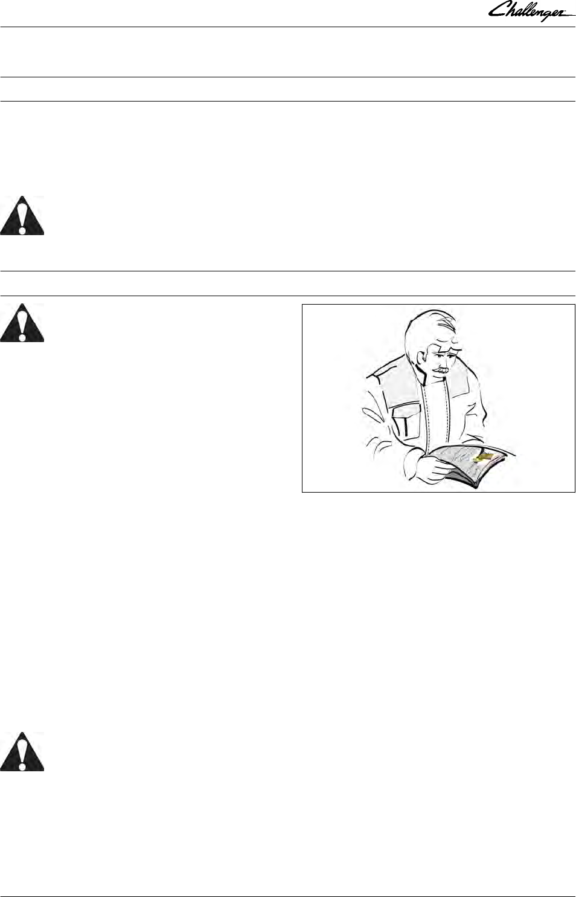
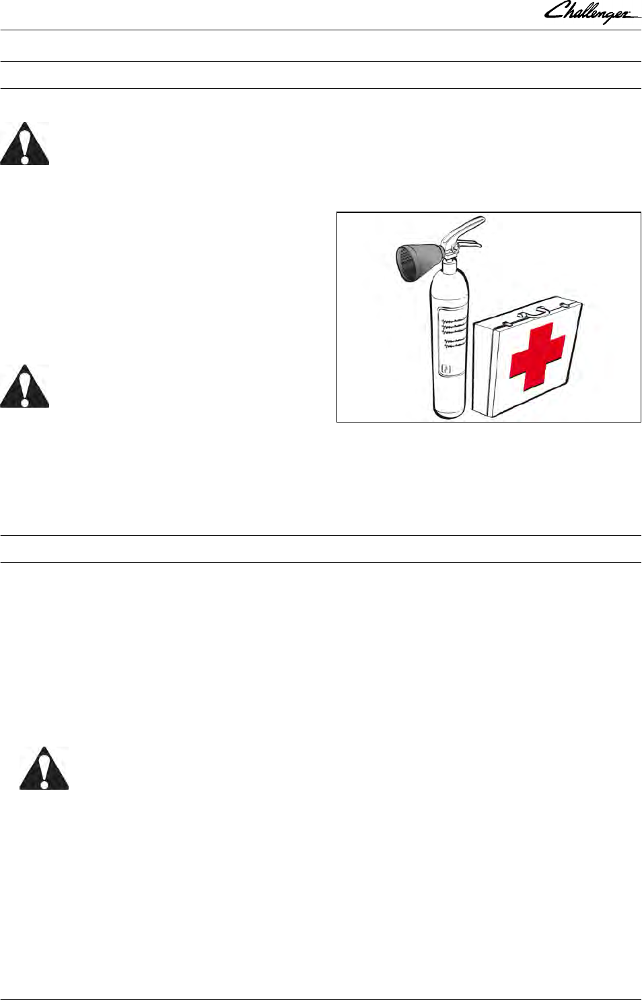
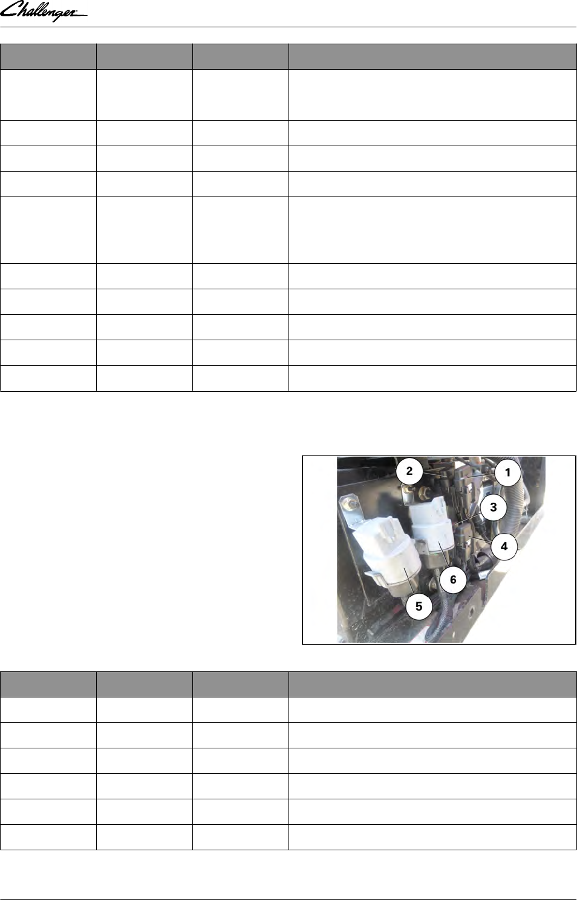

Operator's Manual
MT500E - Maintenance
Beauvais
AGCO S.A.S. - 41 avenue Blaise Pascal - 60000
Beauvais - France - RC B562 104 539
Challenger is a registered trademark of Caterpillar
Inc. and is used under license by AGCO.
© AGCO 2016
Original Operator's Manual
November 2016
ACT001991A
NA
English
CALIFORNIA
Proposition 65 Warning
WARNING: Diesel engine exhaust and some of its constituents are known to the State of
California to cause cancer, birth defects, or other reproductive harm.
WARNING: Battery posts, terminals and related accessories contain lead and lead compounds,
chemicals known to the State of California to cause cancer, birth defects, or other reproductive
harm. Wash hands after handling.

California: Proposition 65
CALIFORNIA
Proposition 65 Warning
WARNING: Diesel engine exhaust and some of its constituents are known to the State of California to
cause cancer, birth defects, and other reproductive harm.
WARNING: Battery posts, terminals and related accessories contain lead and lead compounds, chemicals
known to the State of California to cause cancer, birth defects, and other reproductive harm. Wash hands
after handling.
GUID-BB2F8753-3A04-46F9-828C-3D9A19271A4D [V1]
.
MT500E - Maintenance
ACT001991A

.
MT500E - Maintenance
ACT001991A

MT500E - Maintenance
1 Safety instructions and safety points - Warranty ............................11
1.1 Introduction ........................................................13
1.1.1 Introduction - Safety instructions ......................................13
1.2 Safety — Symbols and terms ........................................15
1.2.1 Safety — Symbols and terms ........................................15
1.3 Safety decals and instructions .......................................16
1.3.1 Checking and replacing the safety decals and instructions ...................16
1.3.2 Presentation and location of the safety decals and instructions ................17
1.4 General safety instructions .........................................22
1.4.1 Awareness of the safety instructions and symbols .........................22
1.4.2 Operator familiarity in the use of the tractor .............................22
1.4.3 Filling the fuel tank ...............................................23
1.4.4 Mounting and dismounting the operator's seat ...........................23
1.4.5 Mandatory procedure before dismounting the tractor .......................24
1.5 Special safety instructions for preparing the tractor for use ............25
1.5.1 Protective clothing ................................................25
1.5.2 Activated carbon filter information .....................................25
1.5.3 Safety devices and items ...........................................28
1.5.4 Checking the tractor ..............................................28
1.6 Specific safety instructions for starting the tractor ....................30
1.6.1 Protection of persons other than the operator ............................30
1.6.2 Start up safely ...................................................30
1.6.3 Starting the tractor with jump start cables ...............................31
1.6.4 Checks to be carried out after start-up .................................32
1.7 Specific safety instructions for using the tractor ......................33
1.7.1 General instructions ...............................................33
1.7.2 Protection of persons other than the operator ............................34
1.7.3 Overturning .....................................................34
1.7.4 Tractor towing ...................................................37
1.7.5 Regulatory data on maximum permitted trailed weights ....................37
1.7.6 Road use .......................................................39
1.7.7 Parking brake ...................................................41
1.7.8 Power take-off ...................................................41
1.7.9 Implements ....................................................42
1.7.10 Front-end loader .................................................44
1.8 Specific safety instructions for servicing the tractor ...................45
1.8.1 Pollution warning to observe when servicing the tractor ....................45
1.8.2 General instructions ...............................................45
1.8.3 Handling instructions ..............................................46
1.8.4 Special instructions for cleaning the tractor ..............................48
1.9 Protective structures ................................................49
1.9.1 Protective structures - Use and accreditation ............................49
1.9.2 Cab ..........................................................49
1.9.3 Seat belt .......................................................49
1.9.4 Instructor seat ...................................................50
1.10 Warranty .........................................................51
1.10.1 General .......................................................51
1.10.2 Pre-delivery inspection and commissioning on the user’s premises ...........51
1.10.3 Warranty procedure ..............................................51
1.10.4 Procedure to follow if changing region ................................51
Table of contents
MT500E - Maintenance
ACT001991A

1.10.5 Servicing during and after the warranty period ...........................52
1.10.6 California emission control warranty statement ..........................52
1.10.7 Emission reduction warranty statement for the United States and Canada .......55
2 Maintenance ..............................................................59
2.1 Service Guide ......................................................63
2.1.1 Service guide ...................................................63
2.2 Operator environment ..............................................67
2.2.1 Air conditioning system: condenser ....................................67
2.2.2 Air-conditioning system: Checking the air conditioning system ................67
2.2.3 Cab air filter ....................................................67
2.2.3.1 Standard-roof air filter: Procedure ...............................67
2.2.4 Cab attachment ..................................................68
2.2.5 Windscreen washer ...............................................68
2.3 Engine .............................................................70
2.3.1 Recommended products ...........................................70
2.3.2 Fuel ..........................................................71
2.3.3 Biodiesel fuel ...................................................72
2.3.4 AdBlue™ or DEF .................................................74
2.3.5 6-cylinder SisuDiesel engine ........................................75
2.3.6 Engine oil level check .............................................75
2.3.6.1 Procedure ................................................76
2.3.7 Draining the engine oil .............................................76
2.3.8 Replacing the engine oil filter ........................................77
2.3.9 Draining the DEF tank ..............................................77
2.3.9.1 Procedure ................................................77
2.3.10 Replacing the DEF filter ...........................................78
2.3.10.1 Procedure ..............................................78
2.3.11 Fuel system: Fuel prefilter .........................................81
2.3.11.1 Draining the water: Procedure ................................82
2.3.11.2 Replacing the filter element: Frequency .........................82
2.3.11.3 Replacing the filter element: Procedure .........................82
2.3.12 Fuel system: fuel filter ............................................82
2.3.13 Checking and cleaning the fuel cooler .................................83
2.3.14 Fuel system: Water separator prefilter ................................83
2.3.14.1 Procedure for draining the water ..............................84
2.3.14.2 Replacing the filter element: Frequency .........................84
2.3.14.3 Replacing the filter element: Procedure .........................84
2.3.15 Fuel system: bleeding .............................................84
2.3.16 Fuel system: Injector pump, regulator and injectors .......................85
2.3.17 Fuel system: 3rd generation T4F SCR engine injection .....................85
2.3.18 Air filter .......................................................85
2.3.18.1 Cleaning and replacement of the main filter: Procedure .............85
2.3.18.2 Cleaning and replacement of the secondary filter: Procedure ..........86
2.3.19 Cooling system .................................................86
2.3.19.1 Checking the level and quality of the coolant .....................87
2.3.19.2 Filling to top up the coolant level ..............................87
2.3.19.3 Draining the cooling system .................................87
2.3.19.4 Cleaning the radiator: Frequency ..............................88
2.3.19.5 Procedure for cleaning the radiator ............................88
2.3.20 Check and replace the main fan/alternator Poly-V belt .....................88
2.3.20.1 Tension of the Poly-V main belt ...............................89
2.3.20.2 Replacing the Poly-V main belt ...............................89
2.3.21 Check and replace the air conditioning/alternator Poly-V accessories belt .......90
2.3.21.1 Tension of the Poly-V accessories belt ..........................90
2.3.21.2 Replacing the Poly-V accessory belt ............................90
Table of contents
MT500E - Maintenance
ACT001991A

2.3.22 Check and replace the air compressor (pneumatic braking) Poly-V accessories
belt ...............................................................91
2.3.22.1 Tension of the Poly-V accessories belt ..........................91
2.3.22.2 Replacing the Poly-V accessory belt ............................92
2.4 Transmission .......................................................93
2.4.1 Recommended products ...........................................93
2.4.2 Checking the transmission oil level ....................................93
2.4.3 Draining the transmission oil .........................................94
2.4.4 Transmission breather .............................................95
2.4.5 Filtering the transmission system .....................................95
2.4.6 Filtering the Open Center hydraulic system ..............................96
2.4.6.1 Replacing the additional 15-micron filter: Procedure .................96
2.4.6.2 Changing the 150-micron suction strainer: Procedure ................97
2.4.6.3 Changing the 15-micron filter: Procedure .........................97
2.4.7 Filtering the Closed Center hydraulic system ............................98
2.4.7.1 Changing the 150-micron suction strainer: Procedure ................98
2.4.7.2 Changing the 15-micron filter: Procedure .........................98
2.4.8 PowerShuttle filtration .............................................98
2.4.9 25-micron filtration for the high-pressure braking ..........................99
2.4.10 Lubricating the rear axle shaft bearings ...............................100
2.4.11 Checking and cleaning the transmission oil cooler .......................100
2.4.12 Lubricating the rear PTO shaft ......................................100
2.5 Brakes ............................................................ 101
2.5.1 Recommended products .......................................... 101
2.5.2 Checking the regulator filter ........................................ 101
2.5.3 Bleeding the brake system .........................................101
2.5.4 Compressed air system protection ...................................102
2.5.4.1 Procedure ...............................................102
2.6 Front power take-off ...............................................104
2.6.1 Recommended products .......................................... 104
2.6.2 Checking and cleaning the oil cooler of the front PTO ..................... 104
2.6.3 Draining oil .................................................... 104
2.6.3.1 Procedure ...............................................104
2.6.4 Lubricating the front PTO shaft ..................................... 105
2.7 Live PTO .......................................................... 106
2.7.1 Lubricating the rear PTO shaft ...................................... 106
2.8 Front axle and steering .............................................107
2.8.1 Recommended products .......................................... 107
2.8.2 4-wheel drive front axle: Checking the front axle beam oil level .............. 107
2.8.2.1 Procedure ...............................................107
2.8.3 4-wheel drive front axle: Draining the front axle beam oil ...................107
2.8.3.1 Procedure ...............................................107
2.8.4 4-wheel drive front axle: Checking the oil level in the final drives ............. 108
2.8.4.1 Procedure ...............................................108
2.8.5 Draining the oil from the final drives of the 4-wheel drive front axle ........... 108
2.8.5.1 Procedure ...............................................108
2.8.6 Lubrication of the 4-wheel drive front axle ..............................109
2.9 Rear linkage .......................................................111
2.9.1 Recommended products .......................................... 111
2.9.2 Lubricating the three-point linkage ....................................111
2.10 Front linkage .....................................................113
2.10.1 Recommended products ......................................... 113
2.10.2 Lubricating the front linkage ....................................... 113
2.11 Electrical equipment ..............................................115
2.11.1 Batteries .....................................................115
2.11.2 Alternator .................................................... 115
Table of contents
MT500E - Maintenance
ACT001991A

2.11.3 Power socket (ASAE) ............................................116
2.11.4 Adjusting the headlights .......................................... 117
2.11.5 Description of the main fuse box ....................................117
2.11.6 Description of the secondary fuse box (depending on model) ............... 128
2.11.7 Battery isolator .................................................133
2.12 Pressure washing .................................................135
2.12.1 Pressure washing .............................................. 135
2.13 Storing your tractor .............................................. 136
2.13.1 Storing your tractor ............................................. 136
2.13.2 Storing the DEF ................................................136
2.14 Faults and solutions .............................................. 137
2.14.1 General table of faults ............................................137
2.14.2 Indicator light panel ............................................. 139
2.14.3 Indication of faults ..............................................145
2.14.4 Description of error code format .................................... 147
2.14.5 Instrument panel error codes AutoPower IV/AutoPower VI .................149
2.14.6 AGCO Power Tier 3/Stage IIIA engine and Tier 4F/Stage IV SCR Technology
engine error codes ....................................................150
2.14.7 Transmission error codes AutoPower IV/AutoPower VI ....................164
2.14.8 Front axle error codes for AutoPower IV/AutoPower VI ....................166
2.14.9 Power take-off error codes AutoPower IV/AutoPower VI ...................167
2.14.10 Error codes for the high-pressure braking .............................167
2.14.11 Rear linkage error codes ......................................... 168
2.14.12 Front power lift error codes .......................................169
2.14.13 Armrest error codes ............................................ 169
2.14.14 Hydraulic valve error codes ....................................... 171
2.14.15 Air conditioning error codes .......................................172
2.14.16 Error codes of the keypad in the pillar ............................... 174
2.14.17 Suspended cab error codes .......................................174
3 Technical specifications ...................................................177
3.1 General specifications ..............................................179
3.1.1 Model MT515E/MT525E AutoPower IV ................................179
3.1.2 Model MT525E/MT535E AutoPower VI ............................... 180
3.1.3 Model MT545E AutoPower VI ...................................... 181
3.2 Operator environment ............................................. 183
3.2.1 Noise levels (dB(A)) at operator's ears .................................183
3.2.2 Level of vibration felt through the seat .................................183
3.3 Engine ............................................................ 184
3.3.1 Engine specifications ............................................. 184
3.3.2 Fuel system and air filter ...........................................184
3.3.3 Cooling ....................................................... 185
3.3.4 Tightening torques ...............................................185
3.4 Transmission ......................................................186
3.4.1 Forward speed at maximum speed with AutoPower IV 40 kph transmission and
20.8R38 tires ........................................................186
3.4.2 Forward speed at maximum speed with AutoPower VI 40 kph transmission and
20.8R38 tires ........................................................187
3.4.3 Forward speed at maximum speed with AutoPower VI 50 kph transmission and
20.8R38 tires ........................................................189
3.4.4 Gearbox .......................................................191
3.4.5 Gearbox .......................................................191
3.4.6 Final drives .................................................... 191
3.4.7 Rear differential lock ..............................................191
3.5 Brakes ............................................................ 192
3.5.1 Brake system technical specifications ................................. 192
Table of contents
MT500E - Maintenance
ACT001991A

3.5.2 Regulatory data on maximum permitted trailed weights .................... 192
3.6 Front axle and steering .............................................195
3.6.1 Four-wheel drive front axle ......................................... 195
3.6.2 Steering .......................................................195
3.7 Power take-off .....................................................196
3.7.1 Specifications ...................................................196
3.7.2 Tightening torques ...............................................197
3.8 Linkage ........................................................... 198
3.8.1 Rear linkage ....................................................198
3.9 Auxiliary hydraulics ................................................199
3.9.1 Hydraulic system ................................................ 199
3.10 Electrical equipment ..............................................200
3.10.1 Electrical equipment technical specifications ........................... 200
3.10.2 Layout of components ........................................... 201
3.11 Wheels and tires ..................................................202
3.11.1 Rims ........................................................ 202
3.11.2 Tires ........................................................ 202
3.11.3 Tightening torques .............................................. 202
3.12 Capacities and dimensions ........................................ 203
3.12.1 Capacities .................................................... 203
3.12.2 Dimensions and weights ..........................................204
3.12.3 Attachment points: AutoPower IV/AutoPower VI models without front linkage ...206
3.12.4 Attachment points: AutoPower IV/AutoPower VI models with front linkage ..... 207
4 Accessories .............................................................. 209
4.1 Cab ...............................................................211
4.1.1 Cab accessories .................................................211
4.2 Engine ............................................................ 212
4.2.1 Engine accessories ...............................................212
4.3 Power take-off .....................................................213
4.3.1 Power take-off accessories .........................................213
4.4 Linkage ...........................................................214
4.4.1 Linkage accessories ..............................................214
4.5 Auxiliary hydraulics ................................................215
4.5.1 Auxiliary hydraulics accessories ......................................215
4.6 Wheels and tires ...................................................216
4.6.1 Wheels and tires accessories ....................................... 216
5 Appendix ................................................................ 217
5.1 Conversion table .................................................. 219
5.1.1 Conversion table ................................................ 219
Table of contents
MT500E - Maintenance
ACT001991A

Table of contents
MT500E - Maintenance
ACT001991A

1. Safety instructions and safety points -
Warranty
1.1 Introduction .............................................................13
1.1.1 Introduction - Safety instructions ...........................................13
1.2 Safety — Symbols and terms .............................................15
1.2.1 Safety — Symbols and terms .............................................15
1.3 Safety decals and instructions ............................................16
1.3.1 Checking and replacing the safety decals and instructions ........................16
1.3.2 Presentation and location of the safety decals and instructions .....................17
1.4 General safety instructions ..............................................22
1.4.1 Awareness of the safety instructions and symbols ..............................22
1.4.2 Operator familiarity in the use of the tractor ..................................22
1.4.3 Filling the fuel tank ....................................................23
1.4.4 Mounting and dismounting the operator's seat ................................23
1.4.5 Mandatory procedure before dismounting the tractor ............................24
1.5 Special safety instructions for preparing the tractor for use .................25
1.5.1 Protective clothing .....................................................25
1.5.2 Activated carbon filter information ..........................................25
1.5.3 Safety devices and items ................................................28
1.5.4 Checking the tractor ...................................................28
1.6 Specific safety instructions for starting the tractor .........................30
1.6.1 Protection of persons other than the operator .................................30
1.6.2 Start up safely ........................................................30
1.6.3 Starting the tractor with jump start cables ....................................31
1.6.4 Checks to be carried out after start-up ......................................32
1.7 Specific safety instructions for using the tractor ...........................33
1.7.1 General instructions ....................................................33
1.7.2 Protection of persons other than the operator .................................34
1.7.3 Overturning ..........................................................34
1.7.4 Tractor towing ........................................................37
1.7.5 Regulatory data on maximum permitted trailed weights .........................37
1.7.6 Road use ............................................................39
1.7.7 Parking brake ........................................................41
1.7.8 Power take-off ........................................................41
1.7.9 Implements .........................................................42
1.7.10 Front-end loader ......................................................44
1.8 Specific safety instructions for servicing the tractor ........................45
1.8.1 Pollution warning to observe when servicing the tractor .........................45
1.8.2 General instructions ....................................................45
1.8.3 Handling instructions ...................................................46
1.8.4 Special instructions for cleaning the tractor ...................................48
1.9 Protective structures .....................................................49
1.9.1 Protective structures - Use and accreditation .................................49
1.9.2 Cab ...............................................................49
1.9.3 Seat belt ............................................................49
1.9.4 Instructor seat ........................................................50
1.10 Warranty ..............................................................51
1.10.1 General ............................................................51
1.10.2 Pre-delivery inspection and commissioning on the user’s premises ................51
Table of contents
MT500E - Maintenance 11
ACT001991A

1.10.3 Warranty procedure ...................................................51
1.10.4 Procedure to follow if changing region .....................................51
1.10.5 Servicing during and after the warranty period ................................52
1.10.6 California emission control warranty statement ...............................52
1.10.7 Emission reduction warranty statement for the United States and Canada ............55
Table of contents
12 MT500E - Maintenance
ACT001991A
1.1 Introduction
1.1.1 Introduction - Safety instructions
Operator's Manual
NOTE: This Operator's Manual is widely published and distributed and the availability of the attachments
indicated, whether fitted to the basic tractor or as an accessory, may vary depending on the country or
region in which the tractor is used. To find out which attachments are available in a given region, contact a
Challenger dealer.
The purpose of this manual is to enable the owner and the operator to operate the tractor appropriately
under normal conditions of use. Providing they follow the instructions carefully, the tractor will give many
years of service in the Challenger tradition.
Use for any other activity (particularly forestry work) is considered to be contrary to the intended use.
The commissioning of equipment by the Challenger dealer on the user's premises enables the dealer to
ensure that these operating and service instructions are properly understood. Always consult the
Challenger dealer if there is any part of this manual that you do not understand. It is important that these
instructions are understood and followed.
This manual does not cover all operation and safety instructions relevant to the implements and
accessories that may be fitted at the time of tractor delivery or later. It is essential that operators use and
understand the Operator's Manuals relating to these implements and accessories.
IMPORTANT: This manual must always be kept with the tractor. For extra copies, contact your Challenger
dealer.
This chapter in the Operator's Manual highlights certain basic safety-related situations that may be
encountered during normal operation and servicing of the tractor and provides the information needed to
handle these situations.
This chapter supplements any safety instructions given in other chapters of this manual.
It may be necessary to take additional precautions, depending on the implements and accessories used
and the working conditions on-site or in the service area. Challenger can under no circumstances exercise
direct control over the commissioning, operation, inspection, lubrication or servicing of the tractor. It is
therefore YOUR responsibility to take suitable safety precautions in such areas.
WARNING:
It is your responsibility to read and understand the instructions that appear in this chapter
before using the tractor.
They must then be strictly adhered to throughout the working day.
Servicing, spare parts, accessories and conditions of use
Daily servicing should become a routine, and a logbook of operating hours should be kept.
When spare parts are required, it is important to use only genuine Challenger parts. Challenger dealers
supply genuine parts and can offer advice concerning their fitting and use. The use of lower quality parts
may cause serious damage. Customers are advised only to purchase their spare parts from an approved
Challenger dealer. In the same way, you must only use accessories specifically adapted to your tractor.
Owing to the considerable variation in operating conditions, it is not possible for the manufacturer to
formulate complete or absolute assertions in its publications concerning the performance or operating
methods of its machines or to accept liability for any loss or damage which may result from such
assertions or possible errors or omissions.
If the tractor is to be used in abnormal conditions which could cause damage (use in deep water or in
paddy fields for instance), you should consult your Challenger dealer to obtain special instructions to
prevent the warranty from becoming void.
[V]
GUID-71A89E4C-33F6-466C-A46F-9CE714A6823D [V1]
1. Safety instructions and safety points - Warranty
MT500E - Maintenance 13
ACT001991A

These tractors are designed only for usual farming activities (intended use). Use for any other activity
(particularly forestry work) is considered to be contrary to the intended use.
Strict compliance with the repairs, service and operating conditions as specified by Challenger is also an
essential component of the intended use.
IMPORTANT: Challenger accepts no responsibility in the event of damage to equipment or personal injury
resulting from improper use.
The tractor must only be used, serviced and repaired by personnel who have full knowledge of its specific
features and who are aware of the applicable safety measures (prevention of accidents).
Customers are strongly advised to contact a Challenger dealer in the event of after-sales problems and for
any adjustments which may be necessary.
1. Safety instructions and safety points - Warranty
14 MT500E - Maintenance
ACT001991A
1.2 Safety — Symbols and terms
1.2.1 Safety — Symbols and terms
Signal
This safety alert symbol means CAUTION! BE ALERT! YOUR
SAFETY DEPENDS ON IT!
The safety alert symbol identifies important safety notices on
machines, safety signs, in instruction books or elsewhere. When
you see this symbol, be alert to the risk of injury or death. Follow
the instructions in the safety notice.
SAFETY is paramount! Why?
•
ACCIDENTS DISABLE AND KILL
• ACCIDENTS ARE COSTLY
• ACCIDENTS CAN BE AVOIDED
Terms
The terms DANGER, WARNING and CAUTION are used with the safety alert symbol. It is essential to
learn how to recognize these safety messages and to follow the recommended safety measures and
instructions.
DANGER:
indicates an imminently hazardous situation which, if not avoided, will result in DEATH or
VERY SERIOUS INJURY.
WARNING:
indicates a potentially hazardous situation which, if not avoided, could result in DEATH or
SERIOUS INJURY.
CAUTION:
indicates a potentially hazardous situation which, if not avoided, may result in MINOR or
MODERATE INJURY.
The terms IMPORTANT and NOTE are not directly related to personal safety, but are used to provide
additional information and advice on the operation or maintenance of equipment.
IMPORTANT: identifies specific instructions or procedures which, if not strictly applied, could damage or
destroy the tractor, its equipment or the surrounding area.
NOTE: identifies points of particular interest for the most effective and suitable operation or repair.
[V]
GUID-31517370-C400-4A50-AF40-91BD610FC154 [V1]
1. Safety instructions and safety points - Warranty
MT500E - Maintenance 15
ACT001991A

1.3 Safety decals and instructions
1.3.1 Checking and replacing the safety decals and instructions
WARNING:
Never remove or obscure the safety decals and instructions.
Replace any safety decals and instructions that are illegible or missing. Replacement decals are available
from the dealer in the event of loss or damage. If a second-hand tractor has been purchased, check that all
safety and instruction decals are correct, legible and in the correct location: To do this, refer to the section
on the presentation and location of decals.
[V]
GUID-33392277-0E65-4F79-A639-8B82F4E7F708 [V1]
1. Safety instructions and safety points - Warranty
16 MT500E - Maintenance
ACT001991A
1.3.2 Presentation and location of the safety decals and instructions
Fig. 1
GUID-2C8130BD-E632-45CC-8AEC-AEDD41CE82A2 [V1]
GUID-0B7BB6C8-3930-47D6-96CE-0ADA199D1D97-high.jpg [High]
1. Safety instructions and safety points - Warranty
MT500E - Maintenance 17
ACT001991A
•
4296950M1 ((A) )
•
DANGER: General safety
Read the servicing manual and the safety advice before start-up and
observe their contents during operation.
•
4296958M1 ((B) )
•
WARNING: Overturning of the tractor - Roll Over Protective Structure
(ROPS)
Fasten your seat belt once you are in the seat (operator and instructor)
and before the tractor moves.
•
4296946M1 ((C) )
•
WARNING: Risk of being crushed or run over by the tractor.
Stop the engine and remove the key before you commence any
maintenance or repair operation.
•
4297924M1 ((D) )
•
DANGER: Risk of the front loader coming into contact with overhead
power lines. Risk of extremely serious or fatal injuries.
Tractors fitted with a front loader: Exercise extreme caution to avoid
coming into contact with power lines.
•
Keep a safe distance from the overhead power lines whenever you
use the front loader. Refer to any current national regulations
concerning safe distances from power lines.
•
4356345M1 ((E) )
•
WARNING: Possible inhalation of dangerous substances.
•
Read the instructions in the Operator's Manual and refer to the safety
instructions provided by the product manufacturer. Wear personal
protective equipment where necessary.
•
4349217M1 ((F) )
•
WARNING: Towing
•
Carefully read the specific instructions from the Operator's Manual
before towing the tractor.
1. Safety instructions and safety points - Warranty
18 MT500E - Maintenance
ACT001991A
•
4352953M2 ((H) ) for Deluxe/Premium versions only
•
DANGER: Road safety.
•
Road traffic: Deactivate the automatic guidance system and the
SpeedSteer system.
•
4350591M1 ((I) )
•
WARNING: Long axle shafts.
•
Remain at a safe distance from persons and objects when driving with
long axle shafts.
•
523251D1 or ACW0232290 ((K) )
•
DANGER: Risk of engine explosion.
•
Never spray ether toward the engine air intake.
•
4298645M2 ((L) )
•
WARNING: High-temperature liquid in the reserve. Risk of skin burns.
Stop the engine, remove the key and wait for the assembly to cool
before commencing any maintenance or repair operation.
•
4296967M1 ((M) )
•
WARNING: Burn hazard – hot surfaces.
Keep away from hot engine components when engine has been
running.
Shut off engine, remove key and wait for system to cool before
performing maintenance or repair work.
•
4296985M1 ((O) )
•
DANGER: Crushing of fingers or hands.
•
Never work in an area where there is a risk of crushing while parts
could move.
1. Safety instructions and safety points - Warranty
MT500E - Maintenance 19
ACT001991A
•
ACW0018280 ((P) )
•
DANGER: Explosion hazard. The hydraulic accumulator contains
pressurised gas and oil.
•
The hydraulic accumulator contains pressurised gas and oil. Refer to
the instructions in the technical manual when removing and
reconditioning.
•
4375856M1 ((Q) )
•
DANGER: Entanglement hazard in a PTO shaft connected to an
instrument.
•
Do not mount the moving part of the PTO.
•
4297148M1 ((R) )
•
WARNING: Falling hazard
Maintain a safe distance in relation to the tractor.
•
3786812M1 ((U) )
•
WARNING: Batteries
•
Battery posts, terminals, and related accessories contain lead and lead
compounds, chemicals known to the State of California to cause
cancer and reproductive harm.
Wash hands after handling.
•
4392020M1 ((V) )
•
WARNING: Danger of torso being crushed: force directed sideways.
•
Remain out of the vertical movement area while the swivel arm is
moving.
•
4392000M1 ((W) )
•
DANGER: Rear overturn hazard
Never pull from above rear axle centerline.
Consult the Operator's Manual for more information.
1. Safety instructions and safety points - Warranty
20 MT500E - Maintenance
ACT001991A
•
4354351M1 ((X) )
•
WARNING: Risk of fire
Read the safety instructions in the Operator's Manual.
•
4296944M1 ((Y) )
•
WARNING: Entanglement hazard in belt drives
Keep hands clear of rotating parts and belts while engine is running.
Switch off the ignition and remove the key before working on the
tractor.
•
4296971M1 ((Z) )
•
WARNING: Shearing hazard – engine fan.
Keep your hands away from the fan and the belts when the engine is
running.
Shut off engine and remove key before performing maintenance or
repair work.
1. Safety instructions and safety points - Warranty
MT500E - Maintenance 21
ACT001991A

1.4 General safety instructions
1.4.1 Awareness of the safety instructions and symbols
Remember that you alone are responsible for safety. Good safety practices protect not only you, but also
bystanders. Before using the tractor, study the instructions given in this book with care, as well as all of
the safety decals and instructions fixed to the tractor: Make them an integral part of your safety procedure.
Also note all the usual protective measures that should be taken when working and above all, don't forget:
Safety depends on you. You can prevent accidents which could cause serious injury or death.
WARNING:
In some of the illustrations in this book, the safety panels and guards have been removed
for reasons of clarity. Never use the tractor if these parts are not in place. If some of these
parts have been removed for repair purposes, they must be refitted before use.
1.4.2 Operator familiarity in the use of the tractor
WARNING:
The operator must not drink alcohol
or take any medication that may
affect his concentration or co-
ordination.
If taking medication, whether
prescribed or not, the operator must
seek medical advice with regard to
his ability to operate machinery
safely.
Fig. 2
GUID-C6F7DD08-52AC-440A-AFEA-54CFA34D9640-high.jpg [High]
• To be able to use your tractor, it is first necessary:
-
to be familiar with operating an agricultural tractor
- to have been trained in the operation of the tractor that you have just purchased
- to have read and understood this entire book — to always consult the dealer as soon as there is any
doubt or lack of understanding
- find out about the rules and safety regulations applicable to the work you are doing. Some
regulations specify that no one under the age of 16 may operate power machinery, for example. This
includes tractors. It is your responsibility to know what these regulations are and to observe them in
the operating area or situation. These rules include, but are not limited, to the safety instructions
relating to correct operation of the tractor as described in this book.
• Do not allow children or unqualified persons to operate the tractor.
• Do not allow children to use the instructor seat.
• The instructor seat is only intended for short periods of use.
WARNING:
In poor conditions, slow down and be extra careful, and engage 4-wheel drive if fitted.
It is important to have good knowledge of the operation of the tractor as well as all of its accessories and
attached implements.
Remember that rain, snow, ice, loose gravel or soft ground can change the performance of the tractor.
[V]
GUID-83FCC542-14ED-4A51-B1DF-E21CE4F892B3 [V1]
GUID-D8D031E6-0720-42FD-8651-9BB02DC32136 [V1]
1. Safety instructions and safety points - Warranty
22 MT500E - Maintenance
ACT001991A
1.4.3 Filling the fuel tank
WARNING:
•
Always switch off the engine
before filling up.
• Do not smoke while refueling the
tractor. Keep away from naked
flames .
• Proceed with care to prevent any
splashes.
Fig. 3
GUID-8235B7BC-EBF2-4C14-B4C5-66B4F15A913F-high.jpg [High]
Filling with DEF
WARNING:
Avoid all contact with the eyes, skin
and clothing.
•
Proceed with care to prevent any
splashes.
• If large quantities of the product
are ingested, seek immediate
medical attention. Do NOT induce
vomiting unless indicated to do so
by medical staff. Do not administer
liquid to a person who is
unconscious.
• In case of contact with skin, rinse
with plenty of water and remove
contaminated clothing.
• In case of contact with the eyes,
rinse immediately under running
water. In the event of irritation,
seek medical advice.
• If fumes are inhaled, breathe in
fresh air and seek medical advice,
if necessary.
• Prevent DEF from coming into
contact with other chemical
products.
• Urea spillages must not be
discharged into the drains.
Fig. 4
GUID-A2018A93-5298-4E21-9146-6CB0BC9E15EF-high.jpg [High]
1.4.4 Mounting and dismounting the operator's seat
• Always use three-point contact with the tractor and face the tractor when mounting and dismounting
the operator's seat. (Three-point contact means that both hands and one foot or one hand and both feet
are in contact with the tractor at all times when getting on and off).
•
Clean your shoes and wipe your hands before getting in the tractor.
• Use handrails, grab handles, ladders or steps (if fitted) when getting on and off.
• Do not use the control levers as a handhold.
GUID-92116EFE-265E-41F1-8C74-75F180C438D3 [V2]
GUID-49C76A9C-4D3A-44F0-BDE9-82EFEEB2DEE5 [V1]
1. Safety instructions and safety points - Warranty
MT500E - Maintenance 23
ACT001991A
• Do not step on pedals when getting in and out.
•
Never attempt to mount or dismount a moving tractor.
• Never jump off a tractor when it is running except in an emergency.
1.4.5 Mandatory procedure before dismounting the tractor
Before getting out of the operator's seat, whether during the course of or at the end of the working day,
always:
Procedure
1.
Immobilize the tractor by applying the parking brake or engaging ParkLock in the locked position
(closed padlock symbol) (depending on option).
DANGER:
Position the shuttle lever or depending on option, the PowerShuttle lever, in neutral
position.
2.
Immobilize the tractor by applying the parking brake.
3.
Disengage the front and rear PTO.
4.
Lower the implements to the ground.
5.
Switch off the engine (see the Operation chapter of the Operator's Manual). Make sure that the
engine is not running at idling speed and that it has stopped.
6.
Remove the ignition key.
GUID-59346929-80D7-45FC-BCAB-BACFE0EB274A [V3]
1. Safety instructions and safety points - Warranty
24 MT500E - Maintenance
ACT001991A
1.5 Special safety instructions for preparing the tractor for use
1.5.1 Protective clothing
Wear all the protective clothing and equipment
with which you are provided or which is
appropriate for certain working conditions.
For example, you may need:
•
A safety helmet
• Safety glasses
• A protective mask
• Ear protection
• A respirator or filter mask
• Inclement weather clothing
• Reflective clothing
• Gloves suitable for the work to be carried out
• Safety footwear
Fig. 5
GUID-04DDD0CE-C834-46EC-BA4B-51B89E6B6743-high.jpg [High]
DANGER:
Do not wear loose clothing, jewelry or other items and tie up long hair which could catch
on controls or other parts of the tractor.
1.5.2 Activated carbon filter information
WARNING:
Due to the risk of contaminants entering the cab when the door is opened to enter or exit,
use of a carbon filter is intended to supplement but not necessarily replace the use of
personal protective equipment when operating in an environment containing aerosols
and/or vapors, such as pesticides.
The specific chemical manufacturer’s instructions regarding personal protective
equipment (PPE) must be followed. If the cab being fitted with this filter does not already
have a safety sign like the one included with this filter, install the safety sign in a
prominent place inside the cab in view of the operator.
This filter is designed to reduce the concentration of aerosols and vapors entering the cab. To be effective,
it must have an effective seal to prevent leakage around the filter and must be used in a cab air system
that does not have leaks, especially in the zone between the filter and the fan. In addition, the cab and its
ventilation system must be capable of maintaining a positive pressure inside the cab and an air flow of at
least 30 cubic meters per hour (18 cubic feet per minute).
The cab with carbon filter is intended to be used as only one part of a managed system of occupational
health and safety, as noted below:
Operator Enclosures as Part of an Occupational Health and Safety Management System (OHSMS)
Many self-propelled agriculture vehicles have operator enclosures (cabs) for comfort and protection of the
operator and riders. The cab can provide an effective physical barrier between the occupants and the
environment, but that barrier must, by necessity of occupant respiration, allow air to enter and exhaust the
cab. This requirement is met by the cab’s heating, ventilation and air conditioning (HVAC) system.
The HVAC system should employ a filter through which air entering the cab is first passed for contaminant
reduction. Filters should also be provided in the recirculation air-stream to reduce airborne contaminants
already in the cab air space. In either application, these filters must be designed specifically for the HVAC
system within which they are operating. The filters must also incorporate the correct media required to
remove the specific air-born contaminant for which it is being employed.
[V]
GUID-34DF3C0A-6C13-4CB1-8E09-5A83C2F17B4A [V1]
GUID-C0C16623-0729-4902-A473-9EED569CF801 [V1]
1. Safety instructions and safety points - Warranty
MT500E - Maintenance 25
ACT001991A

For such applications, the HVAC system must be of robust design, manufacture and maintenance. In such
a system, fresh air and cab pressurization requirements are provided by an air supply drawn through a filter
with negligible filter bypass.
Even with an appropriate cab and HVAC system, there are other opportunities for contaminates to enter
the cab. While outside the cab, a person can become contaminated on his/her body or clothing.
Contaminated objects can be brought into the cab. Another potential for cab contamination exists when
doors or windows are open in a contaminated environment.
In any case, whenever the cab interior has been contaminated, the effectiveness of the cab to provide
contamination protection will be diminished. Health and safety for agricultural machine operators as well as
others working in, on or around these machines can only be addressed through a comprehensive program.
Such a program is defined as an Occupational Health and Safety Management System (OHSMS). While
cabs may be used as an effective engineering control within an OHSMS, this is not intended to imply that
the cab alone is appropriate for any specific application.
That determination can only be made by those responsible for the OHSMS in a specific application. It is the
responsibility of those charged with managing the use of the vehicle on which the cab is attached to define
and manage an appropriate OHSMS, and ensure that all federal, state and local regulatory requirements are
followed.
Cabs should not be used as a replacement for any other engineering control or PPE that has been
specifically required by federal, state or local regulatory authorities.
Hierarchy of Controls
The Hierarchy of Controls, in their preferred order of action:
1. Elimination
2. Substitution of less hazardous materials, processes, operations or equipment
3. Engineering controls
4. Warnings
5. Administrative controls
6. Personal protective equipment (PPE)
Continuous Improvement Cycle
Cabs should only be used to control operator air contaminant exposures within an OHSMS. This
management system must consider occupational safety and health as a continuous improvement cycle
that includes these on-going processes:
1. Management, Leadership and Employee Participation: This step in the cycle involves the formulation
of the management system, the establishment of policy, statements of responsibility and the
integration of the employees into the management system.
2. Planning: This step is based upon initial and going reviews of the management system and numerous
factors affecting occupational safety and health within an organization. Included in these reviews is a
review of the hazard, risks and controls and data collected to evaluate the hazards and the efficacy of
the control measures. In explanatory comments, exposure measurements are included as part of the
assessment processes. The results of audits and measurements are also to be reviewed.
3. Implementation and Operation: This section describes the organization components of a occupational
safety and health program. It describes the hierarchy of controls mentioned above and several broad
classes of management function. Among these requirements are employee training and evaluation of
employee training. Furthermore, this section requires a written, clearly documented occupational
safety and health program.
4. Evaluation and Corrective Actions: The section specifically requires management processes to monitor
and evaluate hazards, risks and their controls. Explanatory comments note that this includes
quantitative measures of worker exposure. Practically, this involves physically testing the efficiency of
the cab being used as an engineering control within an OHSMS.
1. Safety instructions and safety points - Warranty
26 MT500E - Maintenance
ACT001991A

5. Management System Review: Management is required to review the management system to ensure
its suitability, adequacy and effectiveness. This cycle includes provisions for exposure monitoring and
the monitoring of control measure performance. It is the responsibility of the manager of the safety
and health program to determine how worker exposure to air contaminants and other hazards are to
be controlled. It is also the responsibility of this manager to take whatever actions are needed to
control work-place hazards. This includes but is not limited to exposure assessment, audits of varies
programs such respiratory protection, ventilation system maintenance, etc.
Limitations of Cabs Used in Hazardous Environments:
While it may seem that respiration (breathing) exposure would present the greatest risk for personal
exposure to contaminants, this is not the case when working with pesticides. The most prevalent method
of exposure for applicators and those working around agricultural pesticides is through dermal (skin)
contact.
Dermal contact with contaminants may occur directly from air-borne contaminants. It may also happen
when contaminants are transferred from one object to another or when air-borne contaminants settle on
objects that are subsequently contacted. Any surfaces in or out of the cab that have been contaminated
are potential hazards for dermal exposure.
Within the cab, seats, upholstery, controls and other surfaces that become contaminated will pose such a
hazard. In addition to dermal exposure, a contaminated cab interior will also pose a respiration hazard as
the contaminant may, after settling on a surface, become air-borne once again whereby it may be inhaled.
Recirculation filters can be used to help reduce these contaminates from the cab interior air space. When a
vehicle is operated in an environment where air-born contaminants exist, the cab can be an effective
engineering control for reduction of exposure risk to persons within it.
In order for a cab to be used for this purpose, it must be of appropriate design. It must also be
manufactured, maintained, tested and operated according to the specific requirements defined by
evaluation of the hazards.
No cab should ever be considered an effective engineering control unless it has been qualified as such
within a comprehensive OHSMS. While the cab manufacturer can design and manufacture a cab to
physical specifications, the cab manufacturer can not qualify the cab as an appropriate engineering control
for any specific application.
Site-specific information is needed to evaluate the appropriateness of control measures. To use the cab to
control hazards, the managers of the OHSMS must carefully consider and evaluate the effectiveness of all
engineering controls in their specific application.
The Cab as an Engineering Control
The engineering control requirements of the respiratory protection regulation may be fulfilled by the
application of a cab, but this can only be done properly within an OHSMS. Elements of such a program are:
1. Assessment of the hazard with identification of the risk involved.
2. A survey of the machine and the cab involved in the hazardous operation.
3. Reviewing the cab ventilation system and the filter to ensure the filter provides the reduction in
contaminants required.
4. Defining how long the filter can be used in this application.
5. Testing the cab ventilation system to ensure it provides the protection required for the operation to be
performed. This also includes a review of any monitoring equipment to ensure it is working properly.
6. Repair and/or replacement of any defects or defective equipment found.
7. Retesting of the cab air system as required.
8. Recording in the appropriate log book all information regarding the test results, and repairs and
replacement of parts and/or components.
9. Assessment of the effectiveness of the program at a specified time in the cycle of the activity.
1. Safety instructions and safety points - Warranty
MT500E - Maintenance 27
ACT001991A

1.5.3 Safety devices and items
Ensure that all safety devices and items are fitted as required and are in good condition.
WARNING:
The location of all these safety devices and items must be known and their use mastered.
Never take off, remove or disconnect any of them.
Standard safety devices and items according to country regulations
• ROPS (Roll Over Protective Structure)
•
Seat belt
• Power take-off guard
• SMV warning triangle
• Signaling lights
• Safety signs
• Fire extinguisher
• First aid kit
WARNING:
Also make sure you know the
emergency numbers.
Fig. 6
GUID-6B8194C5-6BFE-44CA-80F4-EF7A4DE34B64-high.jpg [High]
Additional devices and items
Depending on the work to be carried out, other safety devices and items may be required; for example,
guards or additional lights and signs.
1.5.4 Checking the tractor
Check the tractor and ensure that all systems are in good operational condition before beginning the
working day. Pay particular attention to the points mentioned below.
•
Check for loose, broken, missing or damaged parts. Ensure that everything has been properly repaired.
• Check that the seat belt is in good condition. If it is not, replace it.
• Check that implements are correctly installed.
• Check that the PTO output speed is in keeping with the implement PTO input speed.
• Ensure that all PTO shaft locking devices are engaged.
• Ensure that the tractor PTO guard and the shaft guards are in place and operating correctly.
• Check to ensure that the tractor is correctly balanced.
WARNING:
An unbalanced tractor could overturn and cause serious injury or death.
Ensure that front frame counterweights, wheel weights and wheel ballasts are used as
recommended by the manufacturer. Do not add extra counterweights to compensate
for an overloaded tractor; the load must be reduced instead.
• Check the condition and pressure of tires (absence of cuts and bulges). Replace worn or damaged tires.
•
Check the correct operation of the brake pedals and the parking brake. Adjust if necessary.
• Check the hydraulic system for the tractor and the implement as well as the tractor fuel system:
Correct tightening of all the unions; no damage to the lines, pipes and hoses; hydraulic systems do not
cross one another.
GUID-CCEBF84D-3621-4085-AAAD-B5D91B934C21 [V1]
GUID-62E86C39-F9AE-4552-BE71-6D86D0FEC4E6 [V1]
1. Safety instructions and safety points - Warranty
28 MT500E - Maintenance
ACT001991A
WARNING:
Leaks of pressurized fluid may not be
visible. Diesel fuel or hydraulic fluid
under pressure can penetrate the skin
or eyes and cause serious physical
injury, blindness or death. Use a piece
of cardboard or wood to detect leaks.
DO NOT USE YOUR BARE HANDS.
Wear safety goggles for eye
protection. If any fluid penetrates the
skin, seek medical advice within a
few hours from a doctor familiar with
this type of injury.
WARNING:
Release the pressure of the hydraulic
or fuel systems before disconnecting
them.
Fig. 7
GUID-7E5E09A4-2C4B-48C5-9ADC-431A6BDFE69D-high.jpg [High]
• Have any leakages or damaged parts repaired or replaced. Do this before each working day
•
Check the engine cooling system and add coolant if required.
WARNING:
The liquid cooling system builds up pressure as the temperature increases.
Stop the engine and let the system cool before removing the radiator filler plug.
• All maintenance procedures must have been complied with.
•
Check that the weight of the tractor/implement assembly is less than the tractor total permissible load.
1. Safety instructions and safety points - Warranty
MT500E - Maintenance 29
ACT001991A
1.6 Specific safety instructions for starting the tractor
1.6.1 Protection of persons other than the operator
Procedure
1.
Before starting up, walk all the way round the tractor and any attached equipment. Ensure that no
one is under it, on it or close to it.
2.
Warn anyone nearby that the tractor is about to start.
3.
Only start up if there is nobody in the vicinity of the tractor/implement assembly. Pay particular
attention to looking out for children.
1.6.2 Start up safely
General instructions
WARNING:
Before starting the engine, ensure there is plenty of ventilation in the area. The exhaust
fumes may cause asphyxiation. Do not operate the engine in an enclosed space.
IMPORTANT:
For tractors equipped with an electromechanically controlled brake on the steering column (ParkLock) For
safety reasons, when the engine is stopped, the ParkLock engages automatically regardless of the position
of the control. After the engine is started, it is necessary to initialise the ParkLock control in order to
deactivate it. If this is not carried out, when a gear is shifted, a beep will sound and the padlock symbol on
the instrument panel indicates that the ParkLock remains engaged.
•
Always start the engine from the operator's seat.
• Adjust the seat before using the tractor to ensure it is correctly positioned in relation to the controls and
to minimize vibration (see description of seat).
• For road use, ensure that the tractor brake pedals are locked together.
• Fasten the seat belt.
• Check that the parking brake is applied or that ParkLock is engaged.
• For tractors with a PowerShuttle, position the PowerShuttle lever in neutral.
• For tractors with mechanical reverse shuttle, position the reverse shuttle lever and the gear shift lever
in neutral.
• Deactivate the power take-off (PTO) controls.
• Follow the start-up procedures described in the chapter Operation of this book.
DANGER:
Start the engine with the ignition key
and from the operator's seat only.
Do not attempt to start the engine by short-
circuiting the starter terminals: The tractor may
start in gear and this can cause serious injury or
death to anyone in the vicinity.
Fig. 8
GUID-8A47D278-1673-4D43-8AE3-68BAF5E1C9D9-high.jpg [High]
[V]
GUID-B2CDD565-14DE-41EB-B905-10E5E3B0EB95 [V1]
GUID-CFEF227B-410E-47FD-9665-064692621124 [V1]
1. Safety instructions and safety points - Warranty
30 MT500E - Maintenance
ACT001991A
Starting assistance
WARNING:
Never use any starter fluid or aerosol
sprays.
This could cause an explosion and very serious
injuries.
Fig. 9
GUID-3C9BC39A-A890-4043-8775-CDAD4D2107E9-high.jpg [High]
1.6.3 Starting the tractor with jump start cables
IMPORTANT:
•
Do not attempt to boost a damaged battery.
• Do not touch the connectors on the jump start cables.
• Do not allow your body to touch the vehicle (chassis frame) when making the connections.
• Do not use a damaged battery or a damaged booster.
• Only use a battery or a booster with a similar voltage.
• To avoid accidental hazards when working near the battery, remove all jewellery or metal accessories,
such as rings or bracelets.
• Do not disconnect the damaged battery — this can damage the vehicle's electrical system.
Procedure
1.
The ignition key must be in the OFF position.
ATTENTION:
The tractor engine must not start up or move accidentally.
2.
Connect the clamp of the red cable to the positive terminal (+) of the flat battery.
3.
Connect the other clamp of the red cable to the positive terminal (+) of the battery in good condition
or to the positive terminal (+) of a recovery vehicle.
4.
Connect the clamp of the black cable to the negative terminal (-) of the battery in good condition.
5.
Finally, connect the other black clamp to any part of the engine block or chassis frame (metal part).
ATTENTION:
To avoid the risk of a spark and potential explosion due to hydrogen from the battery, never make this
final connection to the negative terminal (-) of the damaged battery.
6.
Leave the flat battery to recharge for a few minutes, or even longer if possible, before attempting to
start.
7.
Start the engine of the vehicle. Once started, leave the engine running for a few minutes.
8.
Without turning off the engine you have helped to start, disconnect the jump start cables from the
battery or the booster in reverse order.
ATTENTION: At the end of the operation, make sure that the red and black cables do not touch each
other when they are still connected to a battery.
IMPORTANT: Corroded battery terminals may interfere with, or even prevent the tractor from
starting.
GUID-E2027280-7FFF-4D23-BC48-6F082B47738D [V1]
1. Safety instructions and safety points - Warranty
MT500E - Maintenance 31
ACT001991A
1.6.4 Checks to be carried out after start-up
Controls and indicator lights
After having started the engine, check all the controls and all the indicator lights again. Ensure everything is
functioning correctly.
WARNING:
In case of malfunction of a control or an indicator light, resolve the problem before using
the tractor.
Mastering of the tractor
Move slowly until you are sure that everything is operating correctly. Be certain that you have full control of
the steering and brakes. If the differential is locked, unlock it before continuing your route.
GUID-5A5F74C5-9E4B-4D4F-A30B-389F3C77E4CF [V1]
1. Safety instructions and safety points - Warranty
32 MT500E - Maintenance
ACT001991A
1.7 Specific safety instructions for using the tractor
1.7.1 General instructions
• Tractors and implements are not toys. Always comply with the conditions of use defined by the
manufacturers.
•
Never bring a heat source close to the tractor.
• Never exceed the tractor total permissible weight.
• When using the tractor, always consider the fact that the centre of gravity of the tractor/implement
assembly changes according to the load being transported or towed.
• Check that the emergency exits open correctly.
• Check to ensure that the tractor is correctly balanced.
WARNING:
An unbalanced tractor could overturn and cause serious injury or death.
Ensure that front frame counterweights, wheel weights and wheel ballasts are used as
recommended by the manufacturer. Do not add extra counterweights to compensate
for an overloaded tractor; the load must be reduced instead.
• Check that the PTO output speed is in keeping with the implement PTO input speed.
•
Keep all parts of your body inside the safety zone defined by the ROPS arch for platform tractors.
• Operate the controls smoothly — do not jerk the steering wheel or other controls.
• Always operate the controls from the operator's seat.
• Keep a firm grip on the steering wheel at all times, with your thumbs clear of the spokes when driving
the tractor.
• Operate the tractor smoothly: avoid jerky turns, starts or stops.
• Do not turn at high speed.
• Avoid driving close to ditches and banks.
• Avoid slopes that are too steep.
• Reduce speed when negotiating turns and slopes and on rough, slippery or muddy surfaces.
• Carefully observe the areas surrounding the route.
• Never remain, or allow anyone else to remain, between the tractor and the towed or trailed vehicle
when the tractor is in use.
• Ensure that you have adequate clearance in all directions for the tractor and the implement.
• When using chemicals, follow the chemical manufacturer's instructions for use and storage carefully.
• Adapt the tractor speed according to visibility, weather conditions and the type of terrain.
WARNING:
If a part breaks, loosens or does not operate correctly:
•
stop work
• Immobilise the tractor using the park brake or ParkLock
• switch off the engine
• check the machine and make the necessary adjustments and repairs before resuming
work.
DANGER:
Do not attempt to unplug the hydraulic connections or adjust an implement with the
engine running or the PTO in operation.
To do so may result in serious injury or death.
[V]
GUID-03A6BE35-92A8-4D1C-A7EE-AA7541688F0C [V1]
1. Safety instructions and safety points - Warranty
MT500E - Maintenance 33
ACT001991A

1.7.2 Protection of persons other than the operator
WARNING:
A tractor is a machine with a single
operator. Do not permit anyone to
ride on the tractor or implements,
including trailers, unless the
implements are specially designed to
carry passengers during field work. In
the latter case, transport is permitted
only for field work, but not for
traveling on the road. In all cases,
never allow a child to ride on the
tractor or implements.
Fig. 10
GUID-BAEE6382-5AA6-476D-8141-92F594AF17E2-high.jpg [High]
• When operating, attention to the environment of the tractor/implement assembly.
•
Never lift loads above someone.
• Do not allow anyone to stand or pass in front
of, under or behind an implement.
Fig. 11
GUID-13C49ED4-1622-4A2D-AE92-1626C37E1F86-high.jpg [High]
• Do not allow anyone to stand between the tractor and the implement.
•
Keep other people away from the working area.
• Beware of the load and implement falling in the event of unexpected lowering of the loader.
1.7.3 Overturning
Overturning angle
DANGER:
For your safety, never exceed the maximum angle limits listed in the table below.
NOTE:
These angle limits assume a maximum oil level in the rear axle.
The recommendation is to add 15 liters of oil when working on maximum-gradient slopes.
GUID-8017E250-3DAE-4E2F-9267-06378E127817 [V1]
GUID-62781CBD-4D4B-4FFD-84EB-76E4D39FD8E6 [V3]
1. Safety instructions and safety points - Warranty
34 MT500E - Maintenance
ACT001991A
Models Speed Maximum angle: Roll/pitch/combined
AutoPower IV >15 kph 15°/15°
<15 kph 22°/22°
AutoPower VI >15 kph 15°/15°
<15 kph 22°/22°
WARNING:
The following list is not exhaustive.
Do not use the tractor beyond its ground gradient and stability limits, as indicated later in
this manual. Exceeding these limits may cause overturning or tipping of the tractor.
Follow the recommendations provided in this Manual when driving down slopes with the
tractor loaded.
•
Do not use the tractor near or on the edges of channels or streams or on banks and
borders dug by rodents. The tractor may overturn and tip
• Do not use the tractor on unstable footbridges and fragile platforms. These structures
may collapse and cause the tractor to overturn. Always examine the condition and the
permissible load of bridges and ramps before crossing.
• Do not use the tractor without a safety belt system during operations that involve a
risk of tilting or overturning.
• Do not use the tractor beyond its dynamic stability limits. High speed, abrupt
maneuvers and sudden, tight turns increase the risk of overturning.
• Do not use the tractor for towing if you do not know whether the load will yield, for
example for transporting stumps. The tractor is at risk of tipping backward if the
stumps are impossible to tow.
• Exercise extreme caution when working with the tractor on forage silos without
concrete walls.
• Do not forget that the tractor center of gravity may increase when loads on the front
loader or the three-point hitch are lifted. In these conditions, the tractor may overturn
earlier than expected
Procedure to follow if the tractor overturns
If the tractor should overturn, keep the safety belt
fastened, hold the steering wheel firmly and do
not attempt to leave the seat until the tractor has
come to a complete stop.
For tractors fitted with a cab, if the doors are
obstructed, leave through the rear window or roof
hatch.
Fig. 12
GUID-497CB382-3016-492B-8C1E-7DC32DBE0DC9-high.jpg [High]
Preventing a lateral overturn
•
Set the track width to the most appropriate width for the work being carried out.
• Lock the brake pedals together before driving at transport speed.
• Adapt the tractor speed according to visibility, weather conditions and the type of terrain for the
implement in use.
• If the tractor is fitted with a front-end loader, carry the bucket and load as low as possible.
1. Safety instructions and safety points - Warranty
MT500E - Maintenance 35
ACT001991A
• Make wide turns at reduced speed.
•
Do not allow the tractor to bounce as this may cause you to lose control.
• Never exceed the tractor total permissible weight.
• Do not brake suddenly. Apply brakes smoothly and gradually.
•
WARNING:
Risk of overturning. Do not disengage the clutch or attempt to shift gear after you have
started downhill.
When driving down a slope, use the engine brake to slow the tractor down and choose the same gear
ratio as used when climbing a slope.
•
Engage four-wheel drive (if fitted) to enable four-wheel braking.
• Do not work near the edge of ditches and
banks as there is a risk of them collapsing. The
tractor must always be kept a distance from
the edge that is equal to or greater than the
height of the bank or ditch .
Fig. 13
GUID-C46FB350-EA42-48A2-8484-16B5FF90DE4F-high.jpg [High]
Preferably, climb or descend a slope in a straight line, but do not cross it. When this is not possible, adhere
to the following precautions:
•
Avoid holes and dips when driving downhill
• Avoid stumps, stones and raised areas when driving uphill
• when turning, avoid turning toward the top of the slope; always slow down and take a wide turn
• keep the heavier end of the tractor facing toward the top of the slope when driving up and down it.
When driving across a slope with a tractor fitted with implements on one side, these implements must:
• always be facing toward the top of the slope
• never be raised,
• be left as close as possible to the ground
When towing a load at road speed, lock the drawbar in the center position and use a safety chain.
Do not use the tractor to round up livestock.
Preventing a rear overturn
•
WARNING:
Risk of overturning. Hitching a load to the rear axle or on any other part located above
the rear axle may cause a rear overturn.
• Do not pull anything using the top link connection or from any point above the center line of the rear
axle. Always use a Challenger-approved drawbar and only use a lockable drawbar pin.
•
When using a drawbar for a three-point hitch, use the stabilizers and keep the drawbar in the bottom
position.
• Use front weights to increase tractor stability when towing heavy loads or to counterbalance the weight
of a heavy rear-mounted implement.
• Start off slowly and then gradually increase speed.
• Do not release the clutch suddenly.
1. Safety instructions and safety points - Warranty
36 MT500E - Maintenance
ACT001991A
• If a heavy load or immovable object is attached to the tractor, incorrect use of the clutch may cause the
tractor to overturn.
•
If the front end of the tractor starts to lift, disengage the clutch.
• If the tractor is bogged down in mud or frozen to the ground:
- Do not attempt to drive forward as the tractor could then rotate around its rear wheels and overturn
- Lift any attached implements and attempt to reverse If this is not possible, tow the tractor out with
another vehicle.
• If the tractor is stuck in a ditch, if possible, attempt to reverse out. If you must go forward, do so slowly
and carefully.
• A bare tractor or a tractor fitted with a rear implement must climb a slope in reverse gear and descend
the slope in forward gear.
• A tractor fitted with a full loader at the front must climb a slope in forward gear and descend the slope
in reverse gear. The loader must be kept as close to the ground as possible.
• Always engage a gear when driving downhill. Do not allow the tractor to coast down the slope with the
clutch disengaged or the transmission in neutral.
• When parking on a slope, turn the wheels in the opposite direction to the slope.
1.7.4 Tractor towing
Comply with the instructions described in the "Operation" chapter of this book.
1.7.5 Regulatory data on maximum permitted trailed weights
Drawbars and towing equipment
IMPORTANT:
Before attaching a trailed implement, read the following carefully.
Maximum permitted towed weight
The equipment identification number plate
provides important information on tractor and
towed equipment weight combinations. The
figures represent the maximum weights
authorized for the vehicle and towed equipment
which should not be exceeded so as not to affect
tractor safety.
Fig. 14
GUID-E1C55427-EF4A-4149-BC2E-25DF44EFBBB2-high.jpg [High]
Before transporting towed equipment, read the equipment's Operator's Manual. Check that the equipment
is properly installed, find out how to safely transport it, and determine the maximum permitted transport
speed. Check that the tractor/towed equipment combination is in compliance with local and national
legislation.
Never transport at speeds higher than the equipment's maximum transport speed. By exceeding the
maximum transport speed of the equipment, there is a risk of reducing the braking performance and/or
losing control of the tractor and its towed equipment.
Unless otherwise specified by the equipment manufacturer or the legislation, observe the following rules
when towing.
GUID-B5EA5AEE-B5D1-4DAF-A9E9-4C55CDCE1EF8 [V1]
GUID-6B7A8247-2B5E-4408-8765-9A278FA5F3C4 [V5]
1. Safety instructions and safety points - Warranty
MT500E - Maintenance 37
ACT001991A
For towed equipment:
Do not tow equipment:
•
Without brakes and which, when fully loaded, weighs over 3000 kg (6614 lb)
• With independent brake and which, when fully loaded weighs over 6000 kg (13228 lb)
• With overrun brake and which, when fully loaded weighs over 16000 kg (35274 lb)
• With assisted braking (hydraulic or pneumatic) and which, when fully loaded, exceeds 32000 kg
(70547 lb)
Total permitted weight of tractor-implement combination
Weight technically permissible for the tractor/trailer
assembly
MT515E
AutoPower IV/
MT525E
AutoPower IV
AutoPower VI/
MT535E MT545E
AutoPower VI
40 km/h (25 mph)
Standard braking
MT525E MT535E
MT545E
AutoPower VI
40 km/h (25 mph)
High-pressure
braking
MT525E MT535E
MT545E
AutoPower VI
50 km/h (31 mph)
With trailer without brakes 12250 kg (27006 lb) 14000 kg (30864 lb) 12250 kg (27006 lb)
With trailer equipped with independent
brake
15250 kg (33620 lb) 17000 kg (37478 lb) 15250 kg (33620 lb)
With trailer equipped with overrun brake 25250 kg (55666 lb) 27000 kg (59524 lb) 25250 kg (55666 lb)
With trailer with hydraulic braking 41250 kg (90940 lb) 43000 kg (94798 lb) 41250 kg (90940 lb)
Load and ballast distribution per axle
Axle load distribution
4-wheel drive
MT515E/MT525E/MT535E/MT545E
Weights of unladen vehicle based on optional equipment min. max.
5900 kg (13007 lb) 8000 kg (17637 lb)
Total weight distribution Front axle 2400 kg (5291 lb) 3600 kg (7937 lb)
Rear axle 3600 kg (7937 lb) 5200 kg (11464 lb)
1. Safety instructions and safety points - Warranty
38 MT500E - Maintenance
ACT001991A
Ballast distribution per axle
4-wheel drive
MT515E
AutoPower
IV/MT525E
AutoPower IV
AutoPower
VI/MT535E
MT545E
AutoPower VI
40 km/h
(25 mph)
Standard
braking
MT525E MT535E
MT545E AutoPower
VI
40 km/h (25 mph)
High-pressure
braking
MT525E MT535E
MT545E AutoPower
VI
50 km/h (31 mph)
Maximum technically permissible
loaded weights of the vehicle
9250 kg
(20393 lb)
11000 kg (24251 lb) 9250 kg (20393 lb)
Maximum distribution
of weight per axle
Front axle 5400 kg
(11905 lb)
5400 kg (11905 lb) 5400 kg (11905 lb)
Rear axle 8000 kg
(17637 lb)
9000 kg (19841 lb) 8000 kg (17637 lb)
Minimum percentage
of maximum
permissible distribution
of weight between
axles
Front axle 58% 49% 58%
Rear axle 86% 81% 86%
When ballasting the tractor, observe the following conditions:
•
The minimum load on the front axle must be more than 20% of the unladen tractor weight.
• The load capacity of the rear tires must be taken into account. Do not overload the rear axle. (Refer to
the load capacity table).
1.7.6 Road use
WARNING:
Never allow any passengers to ride on the tractor and implements.
WARNING:
Do not use the work lights when traveling on a road because rear white lights are illegal
except when reversing and may confuse following drivers.
WARNING:
When using a towed vehicle ensure you are always outside of the area lying between the
tractor and the towed vehicle.
• Ensure that all clearance flags and rotary beacons that indicate an abnormal load are in position and are
in working order.
•
Clean all the reflectors and the front and rear lights. Ensure that they are visible and in working order.
GUID-D0CC49F7-13A4-4BB8-B3E6-56AEF2E5C7A7 [V1]
1. Safety instructions and safety points - Warranty
MT500E - Maintenance 39
ACT001991A
• Ensure that the tractor and implements are
fitted with SMV warning triangles and other
markings recommended to improve visibility
when driving on roads (unless the regulations
state otherwise).
Fig. 15
GUID-06285BDF-2B13-474D-A464-AF70176F54F6-high.jpg [High]
• Place all implements in the transport position (as specified in the national road traffic regulations) so that
they take up minimum space and lock them in position.
•
Lock the brake pedals together.
• Disengage the power take-off and the differential lock.
• Observe all current local and national regulations regarding the use of a tractor on the road.
• Depending on the equipment fitted to the tractor and unless regulations state otherwise, use the rotary
beacons or the hazard warning lights day and night.
• Familiarize yourself with the road you will be traveling on.
• Exercise the utmost caution when driving on snow-covered or slippery roads.
• Wait for traffic to clear before entering a public road.
• Beware of blind intersections: Slow down until you have a clear view.
• Do not attempt to push your way through at any intersection.
• Slow down for turns and curves.
• Make wide turns at a moderate speed.
• Signal your intention to slow down, stop or turn.
• Shift to a lower gear before going up or down hills.
• Always drive the tractor in gear. Do not coast with the clutch disengaged or transmission in neutral.
• Do not overlap the lane of traffic for vehicles traveling the other way.
Stay in your lane, as close as possible to the roadside.
• If a traffic jam forms behind the tractor, pull off the road and allow the vehicles behind to pass.
• Drive carefully. Anticipate what other drivers might do.
If towing a load
• Always anticipate obstacles, especially if the trailed implement is not fitted with brakes.
• Start braking much earlier than usual and slow down gradually.
• Ensure that the load is not concealing the lights or the rotary beacons.
• Take account of your load, especially for high obstacles.
1. Safety instructions and safety points - Warranty
40 MT500E - Maintenance
ACT001991A
1.7.7 Parking brake
If the brakes fail and in an emergency situation,
use the park brake located to the left of the
operator.
NOTE:
For tractors equipped with a ParkLock, this
function acts as a parking brake. Its control is
located on the steering wheel.
IMPORTANT:
If the brakes fail, contact your dealer to resolve the
problem.
Fig. 16
GUID-EDF9D783-914A-49EB-8D32-F2C0267FC787-high.jpg [High]
1.7.8 Power take-off
DANGER:
Do not attempt to unplug the hydraulic connections or adjust an implement with the
engine running or the PTO in operation. To do so may result in serious injury or death. To
avoid any accidents, do not stand on the implement or between the implement and the
tractor when external linkage or PTO controls are being used.
• Ensure that all the PTO shaft guards are in
place and check the presence of all safety
decals .
Fig. 17
GUID-32EB489C-E4AE-45D5-9EDD-DF6CAB297D41-high.jpg [High]
• Ensure that the PTO cap (1) is fitted when the
PTO shaft is not in use .
•
Before hitching, unhitching, cleaning or
adjusting the implements driven by the PTO,
follow the "mandatory procedure before
dismounting the tractor" .
• Ensure that there is nobody in the vicinity of
the implement before engaging the PTO.
• For stationary PTO operation, place the
transmission lever and/or the shuttle lever (both
if the tractor is fitted with them) in neutral,
apply the hand brake or engage ParkLock
(depending on option) and chock the wheels of
the tractor and the implement.
Fig. 18
GUID-84445C21-4828-4054-A45E-C944767696DE-high.jpg [High]
GUID-31788E7B-5343-429A-8363-C44285A35AC6 [V1]
GUID-1CD7A87E-482E-4147-8150-04275201B98A [V1]
1. Safety instructions and safety points - Warranty
MT500E - Maintenance 41
ACT001991A
• Do not use PTO adapters, reducers or
extensions as they extend the PTO coupler
beyond the protection offered by the guard.
(1) Correct assembly
(2) Incorrect assembly
IMPORTANT:
To prevent any rotation problems or damage to the
PTO guard, observe the correct fitting position of
the transmission shaft.
Make sure that the shaft does not collide with the
surrounding area when the implement hitched to
the tractor moves (this is a particular risk for short
type 3 PTO shafts with a shield measuring 290
mm (11.4 in) wide, as this limits the space
available for the assembly).
Fig. 19 Transmission shaft
GUID-06F76C98-4D42-4A97-8D44-DE0A01665859-high.jpg [High]
1.7.9 Implements
WARNING:
The special implements are not supplied with the tractor.
Tractors and implements are not toys. Always comply with the conditions of use defined by the
manufacturers.
DANGER:
To avoid serious injury or death due to falling loads resulting from inadvertent raising or
roll-back of the loader, do not connect loader hydraulics to any tractor auxiliary valve that
has detents which cannot be locked out or removed, except for the float function in the
loader lower circuit.
If the tractor is equipped with such a valve, a dedicated, properly configured loader valve
must be installed.
DANGER:
A front-end loader with a bucket or forks must be fitted with a holding device.
This device must prevent the load (bales, fence posts, rolls of fence, wire, etc.) from rolling
down the length of the loader arms when the loader is raised, as it could crush the
operator.
Objects that are incorrectly secured may also fall and injure people in the vicinity of the
tractor.
• When using a loader, avoid sudden stops, starts, turns or changes in direction. Keep loads close to the
ground when transporting.
•
Never lift loads above someone.
• Implements fitted to the three-point hitch or to the side of the tractor make a much larger arc when
turning than trailed implements. Ensure there is enough room to maneuver in complete safety.
• Always use implements suitably adapted to the desired conditions of use (load to transport, speed,
slope etc.) to ensure that work is carried out in complete safety.
• Always read the implement instruction books fully for implements to be used with the tractor and
comply with the safety instructions they contain. If these instructions cannot be observed in full, do not
use the tractor fitted with the machine or trailer.
• Do not modify nor remove any parts of an implement.
• Do not touch the mechanism of an implement nor lean over it or attempt to reach it. Do not allow
anyone else to do this either.
• Do not allow anyone (including yourself) to stand or pass in front of, under or behind an implement.
GUID-EB71E04D-2E7B-455F-9D35-19B68C96BAEA [V3]
1. Safety instructions and safety points - Warranty
42 MT500E - Maintenance
ACT001991A
• If the tractor is not immobilized in accordance with the mandatory procedure before dismounting the
tractor, never stand or allow any person to stand between the tractor and the implement.
•
Always use implements that are capable of safely carrying the load that you wish to place in it.
(See the information on the name plate and the chapter about the hitch.)
• Do not overload a trailed implement. Use appropriate weights to maintain tractor stability.
• The top link and the lift rods must never be taken beyond the point where the thread starts to appear.
• When using chemicals, follow the chemical manufacturer's instructions for use and storage carefully.
• All trailed implements and trailers should be
connected to the tractor by a safety chain (1) .
Should a trailed implement accidentally become
separated from the drawbar during transport,
this safety chain will help to retain the trailed
implement. Using the appropriate adapter
parts, attach the chain to the tractor's drawbar
anchor or any other specified anchor point.
Leave only enough slack in the chain to allow
for maneuvering.
The safety chain must have a strength equal or
greater than the weight of the trailed
implement: Contact your Challenger dealer to
obtain a suitable chain.
Fig. 20
GUID-7F5FF6C3-F1AE-4B21-867D-233488F52F6A-high.jpg [High]
• Only tow using the drawbar. Attaching the
trailed implement to another location could
cause the tractor to overturn.
Fig. 21
GUID-B40FE1D2-5E92-4093-97A3-0CFF54DE7C80-high.jpg [High]
Towing: permissible load and speed
WARNING:
The stopping distance increases with the speed and weight of the trailed implements, and
also on a slope. Whether they are fitted with a brake system or not, trailed implements
that are too heavy for the tractor or that are towed at too high a speed may lead to a loss
of control. Take account of the total weight of the trailed implement (including the load).
The maximum permitted trailed weights are indicated on the name plate. In particular, comply with the
following loads:
•
Trailed weight without brakes: 3000 kg (6614 lb)
• Trailed weight with independent brake system: 6000 kg (13228 lb)
• Inertia braked trailed weight: 16000 kg (35274 lb)
• Trailed weight with braking assistance (hydraulic or pneumatic): 32000 kg (70547 lb)
Towed equipment without brakes:
Do not tow equipment that does not have brakes:
1. Safety instructions and safety points - Warranty
MT500E - Maintenance 43
ACT001991A
• at speeds of more than 32 km/h (20 mph); or
•
at speeds above those recommended by the manufacturer; or
• with a weight that is greater than 1.5 t (1.65 US ton) when fully loaded and is more than 1.5 times the
mass (weight) of the tractor.
Towed equipment with brakes:
Do not tow equipment that has brakes:
• at speeds of more than 50 km/h (31 mph); or
• at speeds above those recommended by the manufacturer; or
• with a mass (weight) more than 4.5 times the mass (weight) of the tractor when fully loaded;
• at speeds of more than 40 km/h (25 mph) if, when fully loaded, it has a mass (weight) more than 3.0
times the mass (weight) of the towing unit.
1.7.10 Front-end loader
WARNING:
The tractor must be fitted with a FOPS (Falling Object Protection Structure) roof if using a
loader.
The programmable functions of the joystick or any other control MUST NOT be used to
operate a loader. In order to prevent involuntary loader movement, the loader joystick
controller must be of the self-cancelling type. When the operator releases his grip on the
joystick, the joystick must return to a non-operational neutral position - except for float
detent position in the loader lower direction.
Always read the implement instruction books fully for implements to be used with the
tractor and comply with the safety instructions they contain.
For the attachment points, refer to the specifications chapter.
DANGER:
The use of front-end loaders involves the risk of falling objects; if used for forestry work
there is a risk of objects penetrating into the passenger compartment.
This tractor is not designed for forestry applications; its use is prohibited unless a
FORESTRY KIT is installed.
Contact the dealer to find out if a forestry kit is available for this tractor model.
Only a specific forestry kit can provide the necessary protection against falling trees and
the penetration of objects.
Protection offered by the FOPS roof of the tractor
WARNING:
The use of sprayers fitted on the tractor or towed involves the risk of exposure to
hazardous substances. The FOPS roof does not guarantee protection against dust,
aerosols and fumes. In the event of application of crop protection products (e.g.
pesticides, fungicides, herbicides etc.), see the chemical manufacturer's instructions as
well as those supplied by the sprayer manufacturer. Personal protective equipment
should be used if it is recommended by these instructions for tractors without a cab.
GUID-C36C69CA-B111-4ED4-8B45-D2E5F6971747 [V1]
1. Safety instructions and safety points - Warranty
44 MT500E - Maintenance
ACT001991A
1.8 Specific safety instructions for servicing the tractor
1.8.1 Pollution warning to observe when servicing the tractor
IMPORTANT:
It is illegal to pollute drains, water courses or soil.
Use authorized waste disposal facilities for the collection and treatment of waste; public refuse tips or
garages providing facilities for the disposal of used oil.
If in doubt, ask local authorities for advice.
1.8.2 General instructions
• Never bring a heat source close to the tractor
•
Never service the tractor while the engine is
running or hot or if the tractor is in motion .
The operator must ensure that potentially hot
parts have cooled down before carrying out any
work
Fig. 22
GUID-B52EC3DE-D22C-400C-AF28-893A8482347F-high.jpg [High]
• Before making adjustments to or servicing the electrical system, disconnect the battery cables,
negative (-) terminal first.
•
To prevent risks of fire or explosion, keep batteries and cold weather starting aids away from naked
flames.
• To prevent sparks which could cause explosions, use jump leads according to instructions.
• Consult your Challenger dealer for repairs or adjustments and have the work carried out by trained
personnel.
• The implement and/or tractor must be supported on suitable blocks or stands and not on a hydraulic
jack, see the relevant chapter (installation points of the axle stands).
The blocks and supports must be adapted to the load carried and must be sufficiently stable to prevent
tilting.
The blocks and supports must be approved and regularly checked by the appropriate authorities.
Place the blocks and supports on solid ground that can support the load.
• Check all nuts and bolts periodically for tightness, especially wheel hub and rim nuts. Tighten to the
torque values stipulated.
• Regularly check the brakes.
Ensure that the brakes are uniformly adjusted, especially if a trailer is used.
In case of malfunction, consult your dealer.
[V]
GUID-3C378701-F5F9-4F75-95A1-34B0DDAFBBE1 [V1]
GUID-5BE09457-2048-442E-BF2B-8D00177326B7 [V1]
1. Safety instructions and safety points - Warranty
MT500E - Maintenance 45
ACT001991A
• Accumulators.
The accumulators contain nitrogen and are pressurized.
They may become hot and cause burns.
Modifications must not be made to the accumulators (by welding, drilling, attempting to open, cutting
etc.).
The repair, maintenance and commissioning of the accumulators must only be carried out by trained
personnel.
Consult your Challenger dealer regarding any maintenance.
1.8.3 Handling instructions
The implement and/or tractor must be supported on suitable blocks or stands and not on a hydraulic jack.
The blocks and supports must be adapted to the load carried and must be sufficiently stable to prevent
tilting.
Place the blocks and supports on solid ground that can support the load.
The blocks and supports must be approved and regularly checked by the appropriate authorities.
Positioning axle stands at the front of the tractor
Depending on the requirements of the removal
procedure, the axle stands must be placed under
one of the following locations:
•
(1) Under the low point of the front linkage
• (2) Under the front axle final drives
• (3) Under the engine oil sump (if the front axle
is to be removed)
• (4) and (5) Under the front axle beam
Fig. 23
Fig. 23
GUID-8C15642D-8A18-41ED-8B9B-E70F44CDD549-high.jpg [High]
GUID-616B4893-C103-40C9-A23F-80783E135AF2-high.jpg [High]
GUID-25C3D7AF-D700-452F-9AC0-D7203CC90C06 [V2]
1. Safety instructions and safety points - Warranty
46 MT500E - Maintenance
ACT001991A
Positioning axle stands at the rear of the tractor
• (6) and (7) Under the rear axle beams
Fig. 24
GUID-32D17EA8-D1E9-4108-9D63-EB2922E7D943-high.jpg [High]
Front sling points
• (8) On the side fixing holes of the front linkage
•
(9) On the weight support hole
Fig. 25
Fig. 25
GUID-C1140872-3008-475A-B575-AB426EC7457B-high.jpg [High]
GUID-6717CA5A-0FD5-491A-941C-5B46FFCE8BD5-high.jpg [High]
1. Safety instructions and safety points - Warranty
MT500E - Maintenance 47
ACT001991A
Cab sling points
Fig. 26
GUID-72507149-4900-479C-885A-03C9117252C2-high.jpg [High]
1.8.4 Special instructions for cleaning the tractor
• Before cleaning the tractor, always:
-
Follow the mandatory procedure before dismounting the tractor
- remove or put away implements, buckets, chains and hooks.
• Clean steps, pedals and floor. Remove grease or oil. Brush away dust and mud. In winter, scrape away
snow and ice. Remember — slippery surfaces are hazardous.
• When washing the tractor with a jet of water, do not direct the jet straight onto electrical components.
• If using a high-pressure cleaning device, maintain a sufficient distance so as not to damage the
paintwork and the sealed sections.
• Keep work surfaces and engine compartments clean.
• After washing, grease the lubrication points, the hinged sections and the bearings.
GUID-F637A9E7-72A0-42FE-A7F1-B7AB1044BB93 [V1]
1. Safety instructions and safety points - Warranty
48 MT500E - Maintenance
ACT001991A
1.9 Protective structures
1.9.1 Protective structures - Use and accreditation
The protective structures (ROPS, seat belts) limit injuries as far as possible in case of an accident or if the
tractor overturns.
They comply with all the regulations in force for agricultural tractors.
1.9.2 Cab
• The cab has been designed to be suitable for this tractor series and meet all the legal requirements in
terms of safety
•
Never weld parts onto the cab
• Never bend or straighten the cab
• Never drill or modify the cab to fit accessories or implements.
If other controls or displays have to be fitted in the operator's area of maneuver, contact your dealer to
find out what to do
• Do not attach chains or ropes to the cab in order to pull or tow anything
• If the cab has been removed, refit it and tighten the fixings to the specified torque before using the
tractor again
WARNING:
A cab damaged as a result of an accident, overturning or other incident must be replaced
before using the tractor again.
1.9.3 Seat belt
• Wearing the seat belt is an important part of
this protection.
•
Always wear the seat belt adjusted correctly.
WARNING:
A damaged seat belt must be
replaced before using the tractor
again. The seat belt approval number
is visible after the seat belt has been
completely unraveled.
Fig. 27
GUID-51801040-CB31-4F48-BD09-98B81912DB3C-high.jpg [High]
[V]
GUID-7242B555-579D-4B3F-B7A6-46B275F3F9FF [V1]
GUID-75935475-5E6B-4457-A5A2-E623FF5D70EC [V1]
GUID-11309F5C-D41F-43F6-AA77-CC3D5BAC808A [V1]
1. Safety instructions and safety points - Warranty
MT500E - Maintenance 49
ACT001991A
1.9.4 Instructor seat
• Use of the instructor seat is exclusively
reserved for an instructor or technician. The
seat is NOT suitable for children.
•
The seat belt must always be worn and
correctly adjusted when using the instructor
seat.
Fig. 28
GUID-BAF32851-CBDC-4F34-9AD1-B90D4FA896AD-high.jpg [High]
GUID-07936A7E-CEAA-44B5-B40F-8301898FBA8E [V3]
1. Safety instructions and safety points - Warranty
50 MT500E - Maintenance
ACT001991A
1.10 Warranty
1.10.1 General
When selling new products to its dealers, the manufacturer provides a warranty which, subject to certain
conditions, guarantees that the goods are free from defects in material and workmanship. Since this book
is published worldwide, it is impossible to detail the exact terms and conditions of warranty that apply to all
retail customers in all countries. Purchasers of new Challenger equipment should therefore request full
details from their supplying dealer.
In accordance with the manufacturer's policy of continuous improvement of its products, the manufacturer
reserves the right to make alterations to the specifications of machines at any time without notice. The
manufacturer disclaims all liability for discrepancies which may occur between the specifications of its
products and the descriptions thereof contained in its publications.
1.10.2 Pre-delivery inspection and commissioning on the user’s premises
The dealer is required to carry out certain activities when supplying a new tractor. These consist of carrying
out a full pre-delivery inspection to ensure that the tractor supplied is ready for immediate use, and
providing full instructions to the user on the basic principles of operation and servicing of the tractor. These
instructions will cover instruments and controls, and routine servicing and safety precautions. All persons
who will be involved in the operation and servicing of the tractor should be present when these
instructions are given.
IMPORTANT:
Challenger disclaims all liability in the event of any claim resulting from the fitting of non-approved parts,
accessories, implements or attachments or unauthorized modifications or alterations.
1.10.3 Warranty procedure
Correct commissioning on the user's premises and routine servicing help to prevent breakdowns.
However, if operating problems do occur during the warranty period, follow this procedure:
•
Immediately inform the dealer you purchased the tractor from, stating the model and serial number. It is
very important not to delay, as even if the defect is covered by the original warranty, the coverage may
no longer apply if the repair is not carried out immediately.
• Provide the dealer with as much information as possible. The dealer will need to know how many hours
the tractor has been in service, what type of work it is used for and the symptoms of the problem.
Routine service operations not covered by the warranty
It should be noted that routine service operations such as tuning, brake and clutch adjustment, and the
supplies used for the tractor service (oil, filters, seals, fuel, antifreeze etc.), are not covered by the
warranty.
Warning concerning spare parts
Parts other than Challenger parts are likely to be of lower quality. Challenger disclaims all liability in the
event of loss or damage arising as a result of such parts being fitted. The manufacturer's warranty may
also become void if such parts are fitted during the normal warranty period.
1.10.4 Procedure to follow if changing region
Only the dealer from whom the tractor was purchased is liable for the protection provided by the warranty.
Any repairs should, wherever possible, always be carried out by this dealer. If, however, the owner moves
to another region or if the tractor is to be used temporarily at a location a long way from the dealer from
whom it was bought, it is advisable to ask this dealer for the name and address of the dealer closest to the
new address and arrange to have the obligations remaining to be fulfilled under the warranty transferred to
this dealer.
[V]
GUID-123743BB-C064-48FA-9E66-E0B4B15EC66C [V1]
GUID-86E51ACE-7AAC-4B59-9E6A-C4991FC07F8A [V1]
GUID-12C3F45E-5459-4409-B772-6D18E8DD705F [V1]
GUID-EAA9471F-9D23-40BF-9655-51A8453CFD49 [V1]
1. Safety instructions and safety points - Warranty
MT500E - Maintenance 51
ACT001991A
If the customer leaves the region covered by the original dealer without having taken these steps, the new
dealer will offer its services if needed, but may invoice them at the normal rate unless:
•
the customer has clearly stated that the warranty period has not expired, and
• the repair dealer has been given the possibility of taking the necessary steps with the selling dealer.
1.10.5 Servicing during and after the warranty period
During the warranty period, all service and repair work must be carried out by the dealer, who will carefully
carry out detailed checks of the progress and performance of the new tractor.
To obtain best results from a Challenger tractor, it is important to continue regular servicing and periodic
inspections after the warranty has expired. All major service work on the tractor must be carried out by a
local dealer; an experienced technician will detect any problems which may arise between one service and
the next. Technicians regularly follow training courses to update their knowledge of the product and
service and repair techniques, and the use of special tools and modern diagnostic equipment. They receive
regular Service Bulletins and have access to all the workshop manuals and technical publications required
to carry out repairs or services in accordance with the quality standards required by Challenger.
1.10.6 California emission control warranty statement
YOUR WARRANTY RIGHTS AND OBLIGATIONS
The California Air Resources Board (CARB) and AGCO are pleased to explain the emission control
system warranty on your 2012 and later engine. In California, new heavy-duty off-road engines must be
designed, built, and equipped to meet the State’s stringent anti-smog standards. AGCO must warrant the
emission control system on your engine for the periods of time listed below provided there has been no
abuse, neglect or improper maintenance of your engine.
Your emission control system may include parts such as the fuel-injection system and the air induction
system. Also included may be hoses, belts, connectors and other emission-related assemblies.
Where a warrantable condition exists, AGCO will repair your heavy-duty off-road engine at no cost to you
including diagnosis, parts, and labor.
MANUFACTURER’S WARRANTY COVERAGE:
The emission related devices on your 2012 and later heavy-duty off-road engines are warranted for five (5)
years or 3000 hours of operation for all engines 19KW or greater, whichever occurs first from the date of
delivery of the engine to the initial purchaser.
If any emission-related part on your engine is defective, the part will be repaired or replaced by AGCO
within the warranty period.
1. General Emissions Warranty Coverage
AGCO warrants to the ultimate purchaser and each subsequent purchaser of each off-road
compression-ignition engine that the engine is:
a. Designed, built, and equipped so as to conform with all applicable regulations adopted by the Air
Resources Board pursuant to its authority in Chapters 1 and 2, Part 5, Division 26 of the Health
and Safety Code; and
b. Free from defects in materials and workmanship that lead to the replacement of a faulty part
under warranty by another part that is identical in all material respects to the part as described in
the engine manufacturer’s application for certification for a period of five years or 3000 hours of
operation, whichever occurs first, for all engines rated at 19 KW and above, except as noted
below. In the absence of a device to measure hours of use, the engine shall be warranted for a
period of five years.
GUID-D7F8CC00-0EC4-469E-B1FB-240A1CB72961 [V1]
GUID-A2A4554C-F901-40B8-A25D-1A261353FEDD [V1]
1. Safety instructions and safety points - Warranty
52 MT500E - Maintenance
ACT001991A

2. Warranty on emissions-related parts shall be interpreted as follows:
a. Any warranted part which is not scheduled for replacement as required maintenance shall be
warranted for the warranty period defined in Subsection (A)(2). If any such part fails during the
period of warranty coverage, it shall be repaired or replaced by the engine manufacturer according
to Subsection (4) below. Any such part repaired or replaced under the warranty shall be warranted
for the remaining warranty period.
b. Any warranted part which is scheduled only for regular inspection shall be warranted for the
warranty period defined in Subsection (A)(2). A statement in such written instructions to the effect
of “repair or replace as necessary” shall not reduce the period of warranty coverage. Any such
part repaired or replaced under the warranty shall be warranted for the remaining warranty period.
c. Any warranted part which is scheduled for replacement as required maintenance shall be
warranted for the period of time prior to the first scheduled replacement point for that part. If the
part fails prior to the first scheduled replacement, the part shall be repaired or replaced by the
engine manufacturer according to Subsection (4) below. Any such part repaired or replaced under
warranty shall be warranted for the remainder of the period prior to the first scheduled
replacement point for the part.
d. Repair or replacement of any warranted part under the warranty provisions of this article shall be
performed at no charge to the owner at a warranty station.
e. Notwithstanding the provisions of Subsection (4) above, warranty services or repairs shall be
provided at all manufacturer distribution centers that are franchised to service the subject
engines.
f. The owner shall not be charged for diagnostic labor that leads to the determination that a
warranted part is in fact defective, provided that such diagnostic work is performed at a warranty
station.
g. The engine manufacturer shall be liable for damages to other engine components proximately
caused by a failure under warranty of any warranted part.
h. Throughout the engine’s warranty period defined in Subsection (A)(2), the engine manufacturer
shall maintain a supply of warranted parts sufficient to meet the expected demand for such parts.
i. Any replacement part, as defined in Section 1900(b)(13), Title 13, may be used in the performance
of any maintenance or repairs and must be provided without charge to the owner. It is not
necessary for replacement parts to be the same brand or by the same manufacturer as the
original part sold with the engine. Such use shall not reduce the warranty obligations of the engine
manufacturer.
j. Add-on or modified parts, as defined in Section 1900(b)(1) and (b)(10), Title 13, that are not
exempted by the Air Resources Board may not be used. The use of any non-exempted add-on or
modified parts shall be grounds for disallowing a warranty claim made in accordance with this
article. The engine manufacturer shall not be liable under this article to warrant failures of
warranted parts caused by the use of a non-exempted add-on or modified part.
k. The Executive Officer may request and, in such case, the engine manufacturer shall provide, any
documents which describe that manufacturer’s warranty procedures or policies.
1. Safety instructions and safety points - Warranty
MT500E - Maintenance 53
ACT001991A

3. Each manufacturer shall include a copy of the following emission warranty parts list with each new
engine, using those portions of the list applicable to the engine.
a. Fuel Metering System
(A) Fuel injection system
(B) Air/fuel ratio feedback and control system
(C) Cold start enrichment system
b. Air Induction System
(A) Controlled hot air intake system
(B) Intake manifold
(C) Turbocharger/Supercharger Systems
(D) Charge Air Cooling Systems
c. Catalyst or Thermal Reactor System
(A) Catalytic converter
(B) Diesel Oxydation Catalyst (DOC)
(C) Exhaust manifold
d. Particulate Controls
(A) Smoke Puff Limiters
e. Advanced Oxides of Nitrogen (NOx) Controls
(A) NOx Absorbers
(B) Selective Catalyst Reduction (SCR)
(C) Reluctant (urea/fuel) containers/dispensing systems
f. Positive Crankcase Ventilation (PCV) System
(A) PCV Valve
(B) Oil Filler Cap
g. Miscellaneous items Used in Above Systems
(A) Vacuum, temperature, and time sensitive valves and switches
(B) Electronic control units, sensors, solenoids, and wiring harnesses
(C) Hoses, belts, connectors, assemblies, clamps, fittings, tubing, sealing gaskets or devices, and
mounting hardware
(D) Pulleys, belts and idlers
(E) Emission Control Information Labels
(F) Any other part with the primary purpose of reducing emissions or that can increase emissions
during failure without significantly degrading engine performance
OWNER’S WARRANTY RESPONSIBILITIES
As the heavy-duty off-road engine owner, you are responsible for the performance of the required
maintenance listed in your owner’s manual.
AGCO recommends that you retain all receipts covering maintenance on your heavy-duty off-road engine,
but AGCO cannot deny warranty solely for the lack of receipts or for your failure to ensure the performance
of all scheduled maintenance.
As the heavy-duty off-road engine owner, you should however be aware that AGCO may deny you
warranty coverage if your heavy-duty off-road engine or a part has failed due to abuse, neglect, improper
maintenance or unapproved modifications.
1. Safety instructions and safety points - Warranty
54 MT500E - Maintenance
ACT001991A
Your engine is designed to operate on diesel fuel only. Use of any other fuel may result in your engine no
longer operating in compliance with California’s emissions requirements.
You are responsible for initiating the warranty process. The ARB suggests that you present your heavy-
duty off-road engine to an AGCO dealer as soon as a problem exists. The warranty repairs should be
completed by the dealer as expeditiously as possible.
EMISSION WARRANTY EXCLUSIONS
This warranty shall not cover any of the following:
•
Conditions resulting from tampering, misuse, abuse, improper adjustment, engine alteration, use of
modified parts, use of replacement parts that are not the same in performance and durability as genuine
replacement parts, failure to use the recommended fuel or oil, use of unapproved fuel or oil additives, or
failure to perform required maintenance
• Consequential damages such as loss of time, inconvenience, or loss of use of this engine or equipment
• Damages or repair costs caused by the owner's unreasonable delay in making the engine available for
warranty inspection and repair
• Repairs not covered by this warranty, and diagnosis or inspection fees that do not result in eligible
warranty service being performed
• Any replacement with non-genuine parts or malfunction of genuine parts due to use of non-approved
parts
• The use of any non-exempted add-on or modified parts shall be grounds for disallowing a warranty
claim
• Travel Time and Mileage
• Freight
• Unless mandated by State or Provincial laws
OBTAINING WARRANTY SERVICE
To obtain warranty service, owner should take the engine to the nearest Dealer or service center
authorized by AGCO or the equipment manufacturer. If available, the original purchase receipt (showing the
initial date of purchase) and all available maintenance records should be presented.
The authorized AGCO dealer will contact AGCO Warranty Department for confirmation of coverage.
The authorized Dealer or service center may perform the necessary repairs or adjustments within a
reasonable time and furnish owner with a copy of the repair order. AGCO wants to assist in providing the
services applicable under this warranty. If you need assistance in locating the nearest authorized Dealer or
service center, or have any questions about your warranty rights and responsibilities, you should contact
AGCO Answers at 1-877-525-4384 or email agcoanswers@agcocorp.com
1.10.7 Emission reduction warranty statement for the United States and Canada
APPLICABILITY
This section shall apply to new 1996-999 model year and heavy duty off road compression-ignition engines
and new 2000 and later model year compression-ignition engines. The warranty period shall begin on the
date the engine or equipment is delivered to an ultimate purchaser. The use of alternative fuels shall not
void the warranties on any engine certified to use such fuel.
Warranty statement
AGCO warrants to the ultimate purchaser and each subsequent owner that the compression-ignition
engine and emission related parts in this equipment are designed, built, and equipped so as to conform
with all applicable regulations adopted by the Air Resources Board (ARB) pursuant to its authority in
Chapters 1 and 2, Part 5, Division 26 of the Health and Safety Code provided there has been no abuse,
neglect, or improper maintenance of the engine. AGCO also warrants to the ultimate purchaser and each
subsequent owner that the compression-ignition engine and emission related parts in the equipment are
GUID-04BC3282-12C9-4AE3-AAD1-9881299A10CC [V1]
1. Safety instructions and safety points - Warranty
MT500E - Maintenance 55
ACT001991A
designed, built, and equipped so as to conform with all applicable regulations adopted by the US
Environmental Protection Agency, pursuant to its authority under the Federal Clean Air Act provided there
has been no abuse, neglect, or improper maintenance of the engine. This warranty is effective in all states
of the U.S.A. and all provinces and territories of Canada.
WARRANTY PERIOD
The warranty period for this engine’s emission related parts to be free from defects in materials and
workmanship which cause the failure of a warranted part to be identical in all material respects to the parts
as described in the engine manufacturer’s application for certification begins on the date the engine or
equipment is delivered to an ultimate purchaser and continues for a period of five (5) years or 3,000 hours
for 19 to 560 kW emission related parts except as noted below. In the absence of a device to measure
hours of use, the engine emissions related parts shall be warranted for a period of five (5) years.
For all engines rated less than 19 kW, and for constant-speed engines rated under 37 kW with rated
speeds higher than or equal to 3000 rpm, the period of two (2) years or 1500 hours of operation, whichever
occurs first. In the absence of a device to measure hours of use, the engine shall be warranted for a period
of two years. If any emission related part on your engine fails within the warranty period, the part will be
repaired or replaced by AGCO.
AGCO’S WARRANTY RESPONSIBILITY
Listed below are the parts covered by this warranty. Any part listed below that is subject to scheduled
maintenance during the warranty period is warranted up to the first scheduled replacement point for that
part. A part repaired or replaced under this warranty is warranted for the remainder of the warranty period.
Parts replaced under this warranty become the property of the manufacturer. The warranted parts could
include:
POWER
RANGE
WARRANTY TERM COVERED COMPONENTS
Below or
equal to 19
kw
2 years or 1500 hours Rubber Flanges, Fuel Injection Pump, Fuel Injectors, Intake
Manifold, Exhaust Manifold, Nozzle Assembly, Turbo
Charger (if applicable), Controlled Hot air Intake System.
Miscellaneous Vacuum, temperature, and time sensitive
valves and switches, Electronic control units, sensors,
solenoids and wiring harnesses. Hoses, belts, connectors,
assemblies, clamps, fitting, tubing, sealing , pulleys, belts
and idlers, Emission Control Information Labels, Any other
part with the primary purpose of reducing emissions or that
can increase emissions during failure without significantly
degrading engine performance.
19-37 kw 5 years or 3000 hours Rubber Flanges, Fuel Injection Pump, Fuel Injectors, Intake
Manifold, Exhaust Manifold, Nozzle Assembly, Turbo
Charger (if applicable), Controlled Hot Air Intake system,
Miscellaneous Vacuum, temperature, and time sensitive
valves and switches, Electronic control units, sensors,
solenoids, and wiring harnesses. Hoses, belts, connectors,
assemblies, clamps, fitting, tubing, sealing , pulleys, belts
and idlers, Emission Control Information Labels, Any other
part with the primary purpose of reducing emissions or that
can increase emissions during failure without significantly
degrading engine performance.
37kw-Up 5 years or 3000 hours Fuel Injection Pump, Nozzle Assembly, Injection Pipe,
Connector of Fuel Line, Intake manifold, Fuel pipe
Assembly, Inlet Pipe, Inlet Pipe band, air cleaner element,
fuel filter element, turbocharger systems, exhaust manifold,
hoses, clamps, connectors, and sealing gaskets of devices
used in systems above, catalysts, Electronic control units
1. Safety instructions and safety points - Warranty
56 MT500E - Maintenance
ACT001991A
POWER
RANGE
WARRANTY TERM COVERED COMPONENTS
and sensors**, cold start enrichment system, charge air
cooling system, controlled hot air intake system, catalytic
converter, exhaust manifold, regenerators, oxidizers, fuel
additive devices, and any other device used to regenerate
or aid in the regeneration of the particulate control device,
smoke puff limiters, selective catalyst reduction, reductant
(DEF) containers/dispensing systems, Miscellaneous
Vacuum, temperature, and time sensitive valves and
switches, solenoids, and wiring harnesses. Hoses, belts,
connectors, assemblies, clamps, fitting, tubing, sealing,
gaskets or devices and mounting hardware, pulleys, belts
and idlers, Emission Control Information Labels, Any other
part with the primary purpose of reducing emissions or that
can increase emissions during failure without significantly
degrading engine performance.
NOTE: Filters that are replaced as part of normal scheduled maintenance are NOT covered by emissions
warranty. These parts are listed as, but not limited to, engine air filter, oil filter, fuel filter, DEF filters, etc.
** SENSORS RELATING TO EMISSION COMPONENTS ONLY
Repair or replacement of any warranted part under the warranty provisions of this statement shall be
performed at no charge to the owner at an authorized warranty station.
The owner shall not be charged for diagnostic labor that leads to the determination that a warranted part is
in fact defective, provided that such diagnostic work is performed at an authorized warranty station.
OWNER MAINTENANCE AND REPAIR RESPONSIBILITY
The engine owner is responsible for the proper use and maintenance of the engine, as specified in the
Operator’s Manual. AGCO reserves the right to deny coverage under this warranty if the owner has not
properly maintained the engine and/or emission related parts and failure occurs due to neglect, abuse, and/
or unapproved modifications.
AGCO is not responsible for resultant damage to an emission-related part or component resulting from:
•
Any application or installation AGCO deems improper
• Attachments, accessory items or parts not sold nor approved by AGCO
• Improper engine maintenance, repair or abuse
• Owner’s unreasonable delay in making the product available after being notified of a potential product
problem
AGCO shall be liable for damages to other engine components proximately caused by a failure under
warranty of any warranted part.
This warranty is in addition to AGCO Standard Warranty.
AGCO recommends that the original owner keep the original purchase receipt (with the date of initial
purchase), and all repair receipts and maintenance records, and transfer them to any subsequent owner.
However, AGCO will not deny warranty claims solely for the lack of receipts or failure to document the
performance of all scheduled maintenance. The engine owner is responsible for presenting the engine to
the nearest Dealer or service station authorized by AGCO when a problem exists.
Subject to the limitations above, non-warranty maintenance or repair of emission control parts on this
engine may be performed by the owner, or by any repair establishment or individual, without affecting
coverage under this warranty; however, reimbursable warranty repairs must be performed by a dealer or
service center authorized by AGCO or the manufacturer of this equipment.
The use of parts that are not equivalent in performance and durability to genuine parts may impair the
effectiveness of the emission control system and prevent coverage under this warranty. If non-genuine
1. Safety instructions and safety points - Warranty
MT500E - Maintenance 57
ACT001991A

AGCO parts are used for maintenance or replacement on this engine, you should assure yourself that such
parts are warranted by their manufacturer to be equivalent to genuine parts in performance and durability.
EMISSION WARRANTY EXCLUSIONS
This warranty shall not cover any of the following:
•
Conditions resulting from tampering, misuse, abuse, improper adjustment, engine alteration, use of
modified parts, use of replacement parts that are not the same in performance and durability as genuine
replacement parts, failure to use the recommended fuel or oil, use of unapproved fuel or oil additives, or
failure to perform required maintenance
• Consequential damages such as loss of time, inconvenience, or loss of use of this engine or equipment
• Damages or repair costs caused by the owner's unreasonable delay in making the engine available for
warranty inspection and repair
• Repairs not covered by this warranty, and diagnosis or inspection fees that do not result in eligible
warranty service being performed
• Any replacement with non-genuine parts or malfunction of genuine parts due to use of non-approved
parts. The use of any non-exempted add-on or modified parts shall be grounds for disallowing a
warranty claim.
• Travel Time and Mileage *
• Freight *
NOTE: * Unless mandated by State or Provincial laws.
OBTAINING WARRANTY SERVICE
All repairs qualifying under this limited warranty must be performed by a Dealer or service center
authorized by AGCO or the manufacturer of this equipment.
To obtain warranty service, owner should take the engine to the nearest Dealer or service center
authorized by AGCO or the equipment manufacturer. If available, the original purchase receipt (showing the
initial date of purchase) and all available maintenance records should be presented.
The authorized AGCO dealer will contact AGCO Warranty Department for confirmation of coverage.
The authorized Dealer or service center may perform the necessary repairs or adjustments within a
reasonable time and furnish owner with a copy of the repair order. AGCO wants to assist in providing the
services applicable under this warranty. If you need assistance in locating the nearest authorized Dealer or
service center, or have any questions about this warranty, you may contact an AGCO Warranty
representative at:
AGCO Corporation
Technical Services and Support
P.O. Box 4300
Hesston, KS 67062-2002
678-534-3199
1. Safety instructions and safety points - Warranty
58 MT500E - Maintenance
ACT001991A

2. Maintenance
2.1 Service Guide ...........................................................63
2.1.1 Service guide ........................................................63
2.2 Operator environment ...................................................67
2.2.1 Air conditioning system: condenser .........................................67
2.2.2 Air-conditioning system: Checking the air conditioning system .....................67
2.2.3 Cab air filter .........................................................67
2.2.3.1 Standard-roof air filter: Procedure ....................................67
2.2.4 Cab attachment .......................................................68
2.2.5 Windscreen washer ....................................................68
2.3 Engine ..................................................................70
2.3.1 Recommended products ................................................70
2.3.2 Fuel ...............................................................71
2.3.3 Biodiesel fuel ........................................................72
2.3.4 AdBlue™ or DEF ......................................................74
2.3.5 6-cylinder SisuDiesel engine .............................................75
2.3.6 Engine oil level check ..................................................75
2.3.6.1 Procedure .....................................................76
2.3.7 Draining the engine oil ..................................................76
2.3.8 Replacing the engine oil filter .............................................77
2.3.9 Draining the DEF tank ...................................................77
2.3.9.1 Procedure .....................................................77
2.3.10 Replacing the DEF filter ................................................78
2.3.10.1 Procedure ...................................................78
2.3.11 Fuel system: Fuel prefilter ..............................................81
2.3.11.1 Draining the water: Procedure .....................................82
2.3.11.2 Replacing the filter element: Frequency ..............................82
2.3.11.3 Replacing the filter element: Procedure ..............................82
2.3.12 Fuel system: fuel filter .................................................82
2.3.13 Checking and cleaning the fuel cooler ......................................83
2.3.14 Fuel system: Water separator prefilter .....................................83
2.3.14.1 Procedure for draining the water ...................................84
2.3.14.2 Replacing the filter element: Frequency ..............................84
2.3.14.3 Replacing the filter element: Procedure ..............................84
2.3.15 Fuel system: bleeding ..................................................84
2.3.16 Fuel system: Injector pump, regulator and injectors ............................85
2.3.17 Fuel system: 3rd generation T4F SCR engine injection ..........................85
2.3.18 Air filter ............................................................85
2.3.18.1 Cleaning and replacement of the main filter: Procedure ..................85
2.3.18.2 Cleaning and replacement of the secondary filter: Procedure ...............86
2.3.19 Cooling system ......................................................86
2.3.19.1 Checking the level and quality of the coolant ..........................87
2.3.19.2 Filling to top up the coolant level ...................................87
2.3.19.3 Draining the cooling system ......................................87
2.3.19.4 Cleaning the radiator: Frequency ...................................88
2.3.19.5 Procedure for cleaning the radiator .................................88
2.3.20 Check and replace the main fan/alternator Poly-V belt ..........................88
2.3.20.1 Tension of the Poly-V main belt ....................................89
2.3.20.2 Replacing the Poly-V main belt ....................................89
2.3.21 Check and replace the air conditioning/alternator Poly-V accessories belt ............90
2.3.21.1 Tension of the Poly-V accessories belt ...............................90
Table of contents
MT500E - Maintenance 59
ACT001991A

2.3.21.2 Replacing the Poly-V accessory belt .................................90
2.3.22 Check and replace the air compressor (pneumatic braking) Poly-V accessories belt .....91
2.3.22.1 Tension of the Poly-V accessories belt ...............................91
2.3.22.2 Replacing the Poly-V accessory belt .................................92
2.4 Transmission ............................................................93
2.4.1 Recommended products ................................................93
2.4.2 Checking the transmission oil level .........................................93
2.4.3 Draining the transmission oil ..............................................94
2.4.4 Transmission breather ..................................................95
2.4.5 Filtering the transmission system ..........................................95
2.4.6 Filtering the Open Center hydraulic system ...................................96
2.4.6.1 Replacing the additional 15-micron filter: Procedure ......................96
2.4.6.2 Changing the 150-micron suction strainer: Procedure .....................97
2.4.6.3 Changing the 15-micron filter: Procedure ..............................97
2.4.7 Filtering the Closed Center hydraulic system .................................98
2.4.7.1 Changing the 150-micron suction strainer: Procedure .....................98
2.4.7.2 Changing the 15-micron filter: Procedure ..............................98
2.4.8 PowerShuttle filtration ..................................................98
2.4.9 25-micron filtration for the high-pressure braking ...............................99
2.4.10 Lubricating the rear axle shaft bearings ....................................100
2.4.11 Checking and cleaning the transmission oil cooler ............................100
2.4.12 Lubricating the rear PTO shaft ...........................................100
2.5 Brakes ................................................................. 101
2.5.1 Recommended products ............................................... 101
2.5.2 Checking the regulator filter ............................................. 101
2.5.3 Bleeding the brake system ..............................................101
2.5.4 Compressed air system protection ........................................102
2.5.4.1 Procedure ....................................................102
2.6 Front power take-off ....................................................104
2.6.1 Recommended products ............................................... 104
2.6.2 Checking and cleaning the oil cooler of the front PTO .......................... 104
2.6.3 Draining oil ......................................................... 104
2.6.3.1 Procedure ....................................................104
2.6.4 Lubricating the front PTO shaft .......................................... 105
2.7 Live PTO ............................................................... 106
2.7.1 Lubricating the rear PTO shaft ........................................... 106
2.8 Front axle and steering ..................................................107
2.8.1 Recommended products ............................................... 107
2.8.2 4-wheel drive front axle: Checking the front axle beam oil level ................... 107
2.8.2.1 Procedure ....................................................107
2.8.3 4-wheel drive front axle: Draining the front axle beam oil ........................107
2.8.3.1 Procedure ....................................................107
2.8.4 4-wheel drive front axle: Checking the oil level in the final drives .................. 108
2.8.4.1 Procedure ....................................................108
2.8.5 Draining the oil from the final drives of the 4-wheel drive front axle ................ 108
2.8.5.1 Procedure ....................................................108
2.8.6 Lubrication of the 4-wheel drive front axle ...................................109
2.9 Rear linkage ............................................................111
2.9.1 Recommended products ............................................... 111
2.9.2 Lubricating the three-point linkage .........................................111
2.10 Front linkage ..........................................................113
2.10.1 Recommended products .............................................. 113
2.10.2 Lubricating the front linkage ............................................ 113
2.11 Electrical equipment ...................................................115
2.11.1 Batteries ..........................................................115
2.11.2 Alternator ......................................................... 115
Table of contents
60 MT500E - Maintenance
ACT001991A

2.11.3 Power socket (ASAE) .................................................116
2.11.4 Adjusting the headlights ............................................... 117
2.11.5 Description of the main fuse box .........................................117
2.11.6 Description of the secondary fuse box (depending on model) .................... 128
2.11.7 Battery isolator ......................................................133
2.12 Pressure washing ......................................................135
2.12.1 Pressure washing ................................................... 135
2.13 Storing your tractor ................................................... 136
2.13.1 Storing your tractor .................................................. 136
2.13.2 Storing the DEF .....................................................136
2.14 Faults and solutions ................................................... 137
2.14.1 General table of faults .................................................137
2.14.2 Indicator light panel .................................................. 139
2.14.3 Indication of faults ...................................................145
2.14.4 Description of error code format ......................................... 147
2.14.5 Instrument panel error codes AutoPower IV/AutoPower VI ......................149
2.14.6 AGCO Power Tier 3/Stage IIIA engine and Tier 4F/Stage IV SCR Technology engine
error codes .............................................................. 150
2.14.7 Transmission error codes AutoPower IV/AutoPower VI .........................164
2.14.8 Front axle error codes for AutoPower IV/AutoPower VI .........................166
2.14.9 Power take-off error codes AutoPower IV/AutoPower VI ........................167
2.14.10 Error codes for the high-pressure braking ..................................167
2.14.11 Rear linkage error codes .............................................. 168
2.14.12 Front power lift error codes ............................................169
2.14.13 Armrest error codes ................................................. 169
2.14.14 Hydraulic valve error codes ............................................ 171
2.14.15 Air conditioning error codes ............................................172
2.14.16 Error codes of the keypad in the pillar .................................... 174
2.14.17 Suspended cab error codes ............................................174
Table of contents
MT500E - Maintenance 61
ACT001991A

Table of contents
62 MT500E - Maintenance
ACT001991A
2.1 Service Guide
2.1.1 Service guide
Interpretation of the table
Initial service marked °°: this maintenance instruction is to be carried out by your dealer as part of the
service defined in the Service Record Book.
Intervals marked °: regular service intervals marked ° are to be carried out at regular intervals (for example:
every day, every 50 hours, every 600 hours etc.).
Intervals marked *: For intervals marked *, refer to the relevant chapter in this manual.
Frequency 50 hrs 600
hrs¹
1200
hrs¹
1800
hrs²
2400
hrs²
Every
day
General
Lubricate all points with grease or oil as
specified in the Operator's Manual.
°° °
Check the accumulator pressures. Once a year
Check that all guards are in place and that the
safety decals are secure and legible.
°° °
Road test the tractor to check all instruments
and systems for correct operation.
°° °
Road test the tractor to check the steering and
brakes for correct operation.
°° °
After the road test, check for any leaks of oil,
fuel or coolant.
°° °
Enquire if the operator has any operational
difficulties and correct or demonstrate the
solution as necessary.
°° °
Complete the owner's Service Record Book. °° °
Cab
Check and top up the windscreen washer
bottle.
°° °
Clean the cab air filter element. Every week or every day in difficult working conditions
Change the cab air filter element. °
Check the air conditioning system for correct
operation.
°° °
Check the cab tightening torque. °° °
Replace the front rubber mountings 4800 hrs
Replace the shock absorbers (mechanical or
active mechanical suspension option)
4800 hrs
Engine
Check the engine oil level. °
Change the engine oil. °
Change the engine oil filter. °° °
Bleed the water from the fuel prefilter. °
[V]
GUID-A1888A88-15DB-4BEE-B233-64AFBD0DD333 [V1]
2. Maintenance
MT500E - Maintenance 63
ACT001991A
Frequency 50 hrs 600
hrs¹
1200
hrs¹
1800
hrs²
2400
hrs²
Every
day
Change the fuel prefilter. °° °
Change the fuel filter. °° °
Bleed the water from the fuel/water separator. °
Change the water/fuel separator. °° °
Drain any water from the fuel tank. °
Check/adjust the valve clearance, replace the
cover seal
°³ °
Check the operation of the injectors. °
Change the DEF main filter. °
Check/clean the dry air filter elements. If the indicator light comes on
Change the dry air main filter element. After the fifth time the indicator light has lit up or once a
year
Change the dry air safety filter element. Every other time the main filter is replaced
Check the radiator coolant level. °
Drain, flush and refill the radiator with coolant. °¹
Check/clean the radiator/cooler fins. 100 hrs⁴
Check/clean the air conditioning condenser. 100 hrs⁴
Check the tension and condition of the
alternator/fan/air conditioning compressor
belts.
°° °
Change the alternator/fan/air conditioning
compressor belts.
°⁵
Transmission and auxiliary hydraulics
Check the transmission/hydraulics oil level.
°
Change the transmission/hydraulic oil. °⁶
Change the transmission suction strainer. °° °⁶
Change the transmission high-pressure filter. °° °
Check/clean the transmission oil cooler. 100 hrs⁴
Lubricate the trumpet housing bearings
(depending on model)
°
Replace the 60-micron PowerShuttle filter
element.
°° °
Change the hydraulic/transmission oil system
breather.
°
Brakes
Check the clutch pedal and transmission for
correct operation.
°° °
Check the condition and the brake pipes/
compressed air tank.
°° °
Bleed the brakes. °
2. Maintenance
64 MT500E - Maintenance
ACT001991A
Frequency 50 hrs 600
hrs¹
1200
hrs¹
1800
hrs²
2400
hrs²
Every
day
Check the operation of the hand brake. °° °
Replace the circuit closer filter for the brake
system.
°° °
Check the trailer brake valve for correct
operation.
°° °
Check the regulator filter (pneumatic trailer
braking option)
°
Check the level of WABCOTHYL fluid in the
compressed air system.
°
Bleed the air from the pneumatic accumulators
of the trailer brake system (if fitted).
°
Front axle and steering
Check the oil level in the front axle and the
front axle final drives.
°° 200 hrs
Change the oil in the front axle and final drives. °° °
Check the front wheel hubs/steering pivots. °
Lubricate the non-suspended front axle. °⁷ 200 hrs
Lubricate the front axle drive shaft. °
Check the steering and wheel alignment
(including tire wear and damage).
°
Calibrate the suspended front axle. °
Power take-off
Check the PTO for correct operation. °° °
Change the ZUIDBERG front PTO oil. °° °⁴
Clean the "ZUIDBERG" front PTO strainer. °° °
Check/clean the front PTO cooler. 100 hrs⁴
Hitch/linkage
Check the auto-hitch for correct operation (if
fitted).
°° °
Check/lubricate the auto-hitch (if fitted). Once a week
Lubricate the front and rear linkages/hitches. Once a week
Electrical equipment
Check the condition of the battery and the
electrolyte level.
°° °
Check the tightness of the battery connections
and battery safety.
°° °
Check all the neutral start switches for correct
operation.
°° °
Check all the indicator lights, instruments and
acoustic alarms for correct operation.
°° °
2. Maintenance
MT500E - Maintenance 65
ACT001991A
Frequency 50 hrs 600
hrs¹
1200
hrs¹
1800
hrs²
2400
hrs²
Every
day
Check all lights for correct operation and
adjustment.
°° °
Check all electrically-powered devices (heater/
fan, radio, windscreen wipers etc.) for correct
operation.
°° °
Check all electronically controlled systems for
correct operation.
°° °
Check that the battery circuit breaker is
working correctly.
°° °
Reset the service parameters on theSetup and
Information Screen.
°° °
Wheels and tires
Check the torque of all wheel and rim nuts and
bolts.
Every day until the tightening torque stabilizes, then
every 50 hours
1. Or every year.
2. Or every two years.
3. The first time only
4. Depending on the working conditions.
5. Every 600 hours in difficult working conditions.
6. NA market: When AGCO Permatran 821XL 10W30 oil is used, the intervals must be reduced to 1000
hours.
7. Every 50 hours in difficult working conditions
2. Maintenance
66 MT500E - Maintenance
ACT001991A
2.2 Operator environment
2.2.1 Air conditioning system: condenser
Frequency
Check the condenser regularly and, if necessary, clean using compressed air.
Procedure
Clean the condenser grilles carefully.
NOTE:
Take care not to damage the various radiator
grilles.
Fig. 1
GUID-F9E37D8B-E6B9-4211-AA71-DEB587FD755F-high.jpg [High]
2.2.2 Air-conditioning system: Checking the air conditioning system
DANGER:
In the event of a leak, wear safety goggles. Escaping refrigerant gas or liquid can cause
severe injuries to the eyes. The R134a refrigerant used in the installation gives off a toxic
gas if it comes into contact with a flame.
WARNING:
Do not disconnect any part of the air conditioning system. Consult your dealer or agent if
a fault occurs.
Procedure
1.
Operate the air conditioning system for a few minutes every week to keep the whole system in good
condition and to lubricate the seals.
2.
Add charge to the air conditioning system every year at the start of summer (consult your dealer).
2.2.3 Cab air filter
Frequency
Clean the cab air filter every week, or more frequently, if necessary.
In dusty conditions, clean the cab air filter every day.
Replace the cab air filter(s) every 1200 hours, or once a year, whichever occurs first.
2.2.3.1 Standard-roof air filter: Procedure
WARNING:
The air filter element does not provide protection from chemical products. Please ask your
dealer for information concerning the availability of the specific particle filter.
[V]
GUID-7E8EABEF-F411-4833-84D2-210D62D5A506 [V1]
GUID-3668D776-E6E5-4D62-A1BB-F4925DEB608B [V1]
GUID-1A60EF08-0142-4D31-8B41-1A8D1FC99037 [V1]
GUID-AF219F5A-AA50-42BB-820B-6D908540DD2B [V1]
2. Maintenance
MT500E - Maintenance 67
ACT001991A
Procedure
1.
To gain access to the cab air filter, open the
hatch on the left-hand side of the cab roof.
2.
Turn the handle and lift out the filter element.
3.
Clean the filter by blowing it with
compressed air.
4.
Before refitting the filter, wipe out the
compartment with a damp cloth to remove
dust.
Fig. 2
GUID-39E2EE64-8082-4613-8F71-2D41D4ED3D1D-high.jpg [High]
2.2.4 Cab attachment
Frequency
The cab is an integral part of the Roll Over
Protection Structure (ROPS) and must be attached
correctly for it to work effectively. Ask your dealer
or agent to check the tightness of the cab
attachment screws/bolts every 600 hours. Replace
the rubber mountings for the suspended cab every
4800 hours.
Fig. 3
GUID-D78F6B7E-5BCB-4D45-BFCE-C7C7835F33FB-high.jpg [High]
ATTENTION: The cab conforms to the various international safety standards. The cab must never be
drilled or modified to fit accessories or instruments. Welding any item to the cab or repairing the cab is not
permitted. If any of the above operations is carried out, the cab may no longer comply with safety
standards. Only genuine parts may be used, which must be fitted by your dealer or agent.
2.2.5 Windscreen washer
The windscreen washer bottle is located between
the tractor rear fenders.
Fig. 4
GUID-07D7EC88-9EEF-4CD1-8436-D4767DCB989F-high.jpg [High]
GUID-7CEF2D6E-2583-4238-9D93-22345CA78315 [V2]
GUID-657DEBBB-0BBC-4769-9FFC-D75C5B75D1A5 [V2]
2. Maintenance
68 MT500E - Maintenance
ACT001991A

Frequency
Check there is fluid in the tank every day and top up if required.
IMPORTANT:
Use a fluid suitable for the lowest temperatures encountered to avoid any damage from freezing.
2. Maintenance
MT500E - Maintenance 69
ACT001991A
2.3 Engine
2.3.1 Recommended products
IMPORTANT:
The warranty remains valid only as long as the lubricants used comply with the following classifications,
and no other products are used.
Engine oil
AGCO oil corresponding to standards: API CJ4 (NA)
Oil characteristics
Engine oil Type of oil Temperature range
All year round 15W40 -10 °C (14 °F) and above
Winter conditions 10W40 -30 °C (-22 °F) to 20 °C (68 °F)
Extreme cold weather conditions 5W40 20 °C (68 °F) and below
Volume/reference available from parts department
Volume 9,46 l (249.9 gal
(US))
18,9 l (49.9 gal
(US))
208 l (55 gal
(US))
416 l (109.9 gal
(US))
1249 l (330 gal
(US))
AGCO 5W40
CJ-4
79035076 79035077 79035078 N/A N/A
AGCO 10W40
CJ-4
79035455 79035456 79035457 N/A N/A
AGCO 15W40
CJ-4
79034597 79035353 79034598 ACP0022700 ACP0022710
Coolant
Antifreeze: Permanent, ethylene/glycol, complying with standard ASTM D6210 type III-FF.
When topping up the coolant or after draining the cooling system, use a product that complies with
standard ASTM D6210 type III-FF.
Coolant specification:
Criteria Dilution of coolant by mass (% water / % coolant)
50/50 60/40
Specific heat at 20 °C (68 °F) < or = 3.45 J/g.°C N/A
Density at 20 °C (68 °F) /m³ /m³
pH at 20 °C (68 °F) 8.6 < pH < 9.5 8.4 < pH < 9.5
Boiling point at 2 bar (29.01 psi)
(relative)
> 141 °C (285.8 °F) > 139 °C (282.2 °F)
Precautions against freezing < or = -35 °C (-31 °F) < or = -25 °C (-13 °F)
• Coolant with OAT (Organic Acid Technology) corrosion inhibitor.
•
Coolant must be manufactured using a mixture of demineralised water and ethylene/glycol.
• pH stability: after 500 hours at 40 °C (104 °F) (coolant only - coolant with aluminum - coolant with steel -
coolant with steel + cataphoresis): difference in pH < 0.45.
[V]
GUID-02BB01DC-A49C-467A-B295-5498117FC931 [V2]
2. Maintenance
70 MT500E - Maintenance
ACT001991A
• Color: orange or blue.
2.3.2 Fuel
Reminder of the safety instructions
Before handling fuel, filling the tank etc., observe the following:
•
Under no circumstances should petrol, alcohol, paraffin, dieselhol (a mixture of diesel and alcohol) or
any other substance be added to diesel fuel as there is an increased risk of fire or explosion.
In a closed container such as a fuel tank, these mixtures are more explosive than pure petrol. Do not
use them. Additionally, dieselhol is not approved due to possible inadequate lubrication of the fuel
injection system.
• Clean the filler plug area. Fill the fuel tank at the end of each working day to reduce overnight
condensation.
• Never remove the plug or refuel when the engine is running.
• When filling the tank, keep control of the nozzle.
• Do not smoke.
• Do not fill the tank to its full capacity. Allow room for expansion and wipe up spilt fuel immediately.
• If the original plug is lost, replace it with an AGCO plug and tighten securely. A non-AGCO plug may not
be guaranteed to seal.
• Ensure equipment is properly maintained.
CAUTION:
Diesel fuel is flammable. Handle fuel with care. Keep away from flammable sources. Do
not smoke when filling the tank. Do not leave the tractor unattended when filling the
tank. Clean up any spilt diesel after filling the tank. Any material which comes into contact
with the fuel must be moved to a safe place. If high-pressure fuel comes into contact with
eyes, wash immediately with clean water and seek medical help.
Compulsory fuel for Tier 4F/Stage IV SCR Technology engine engines
The diesel used must comply with standard EN 590:2009 or ASTM D 975-09b 1-D or 2-D.
To obtain the correct power and optimum engine performance, use only good quality fuel.
IMPORTANT:
If the type of diesel is not observed, the engine and depollution system will be subject to damage that will
not be covered by the warranty.
Fuel recommended for other engines
In addition to fuels for Tier 4F/Stage IV SCR Technology engine engines, the diesel used must comply with
standard EN 14214:2008 or ASTM D6751.
To obtain the correct power and optimum engine performance, use only good quality fuel.
Fuel storage
The utmost care must be taken to keep fuel clean.
•
Never clean the inside of containers or other fuel system components with a fluffy cloth.
GUID-8F8C7B97-006B-40FC-8E7F-564F7E3460D6 [V1]
2. Maintenance
MT500E - Maintenance 71
ACT001991A
• The capacity of bulk storage tanks should not
be too large. The shelf life of the fuel is
approximately six months.
•
The storage tank should be under cover and
supported on a cradle high enough for the
tractor fuel tank to be filled by gravity. It should
have a suitable manhole to provide access for
cleaning. The outlet tap should be about 75 mm
(3 in) above the bottom of the tank to allow
water and sludge to settle. It should have a
removable screen. The storage tank should
slope by about 4 cm per meter toward the rear
(drain plug side).
Fig. 5
GUID-CD4036A6-3032-40FD-9A99-0B757E0EB33A-high.jpg [High]
• Let the fuel settle in the storage tank for 24 hours before use after any servicing or refilling the tank.
•
Clean out the storage tanks regularly; normally every five years, more frequently in cold climates.
• Bleed the tanks frequently to drain off any water formed by condensation.
• Rotate fuel stocks to prevent deterioration of old fuel and the accumulation of water or foreign matter.
• Bring in fresh supplies without waiting for stocks to run out; refueling from the bottom of the tank may
cause a blockage.
Advice on the use of fuel in cold weather:
• In cold weather, diesel fuel increases in viscosity and wax particles form. This may lead to operating
problems if precautions are not taken.
•
IMPORTANT:
Environmental protection — you must comply with local regulations in force relating to underground
storage.
Underground storage is preferable.
If this is not possible, place the storage tank in a location which is protected from the cold, wind and
damp.
• After filling the storage tank, drain the first 5 liters into a drum before filling the fuel tank. Then return
the fuel in the drum to the storage tank.
• Insulate all exposed pipework. Ensure that any pipework is short in length and designed to be
disassembled if necessary.
• Only stock "winter" quality fuel during the cold weather season.
• Frequently clean the fuel filter bowl.
• Do not puncture the fuel filter.
• Ensure a spare filter is always available. If a blockage occurs, due to fuel waxing, changing the fuel filter
will enable restarting.
2.3.3 Biodiesel fuel
Recommended fuel specification
1st generation biodiesel fuels
1st generation biodiesel fuel is permitted for AGCO Power engines. It must comply with the EN
14214:2008 or ASTM D6751 standard. Rape methyl esters (RME), vegetable oil methyl esters (VOME) and
soy methyl esters, together known as fatty acid methyl esters (FAME), are all included in these standards.
EN 590:2009 diesel fuels (or superior) can contain up to 10% FAAE/FAME type biodiesel corresponding to
standard EN 14214:2008. ASTM D975-10b diesel fuels (or superior) can contain up to 10% FAAE/FAME
type biodiesel corresponding to standard ASTM D6751-08. Please contact your dealer for more
information.
GUID-367DDC7A-1338-415D-AAAC-3CBB6D91B611 [V1]
2. Maintenance
72 MT500E - Maintenance
ACT001991A

IMPORTANT: Using diesel fuels containing 10 to 20% biodiesel is allowed; the following service intervals
and frequencies for changing consumables are then divided by 2:
•
Draining the engine oil and replacing the engine oil filters
• Replacing the fuel filters and the fuel prefilters
IMPORTANT: Using diesel fuels containing 10 to 20% FAAE/FAME type biodiesel is allowed; the following
equipment is then essential:
• Addition of an extra fuel prefilter
• Addition of a water separator between the tank and the engine; the water separator must be
maintained on a regular basis and must meet AGCO Power specifications.
NOTE:
Unrefined, cold-pressed rapeseed oil, other unesterified vegetable oils or types of fuel such as ethyl alcohol
and methanol MUST NOT BE USED in these products. This fuel requires a different type of engine design,
with precombustion chambers or a specific type of injection system. Moreover, "domestic fuel" must not
be used as its quality has been reduced by the refineries. It can no longer provide sufficient lubrication and
the amount of heavy polycyclic aromatic hydrocarbons has been increased to a critical level.
2nd generation biodiesel fuels
2nd generation biodiesel fuel is permitted for AGCO Power engines without restriction. It must comply
with the EN 15940 specifications.
IMPORTANT:
The use of 2nd generation biodiesel fuel (synthetic diesel) does not change the normal service intervals for
AGCO Power engines that are listed in this manual.
Fuel storage
The biodiesel must be stored in compliance with the recommended standards to avoid any water
absorption or deterioration. Fuel must never be stored for more than 12 months. Under certain conditions,
biodiesel deterioration may lead to corrosion of the metal components and cause the seals to split
prematurely. Never store fuel in a tank with a painted inner surface, as biodiesel dissolves many types of
paint.
When you fill up the tractor, make sure that the fuel does not run down the side of the filler neck. If there
is any spillage, wipe up any traces of fuel immediately. Avoid splashing the hoses with fuel and wipe off
any spillage as quickly as possible.
General information
•
If the oil level exceeds the Max mark on the dipstick, the engine oil must be replaced.
• If a fuel leak (oil increase/dilution) suddenly worsens, the cause must be identified and corrected.
• Biodiesel can be used at start-up temperatures down to approximately -16°C.
• If the tractor needs to remain immobilized for at least 4 weeks, use pure diesel during the last hour of
operation to avoid clogging various components and filters or damaging seals with a weaker resistance
to biodiesel.
• As biodiesel is a very powerful solvent, any residue in the fuel system may become dislodged after
using biodiesel. The fuel filters must therefore be replaced promptly after the first few times the tank is
filled with biodiesel.
• The low combustion value of biodiesel may lead to a drop in performance of 5% or an increase in fuel
consumption of approximately 10%.
• All older models must be carefully inspected by an approved dealer before using biodiesel. Low
compression, a leak from the injectors and coolant temperatures that are too low may lead to dilution of
the engine oil. All the hoses and pipes must be checked at least once a year by an approved dealer.
2. Maintenance
MT500E - Maintenance 73
ACT001991A
Possible consequences of using diesel fuels containing 10 to 20% FAAE/FAME type biodiesel
To protect the engine and the fuel system, the tractor must be serviced at the recommended shorter
intervals.
•
Loss of power and reduced performance
• Fuel leaks from the seals and hoses
• Corrosion of the biodiesel injection equipment
• Reduced lubrication of the injection pump
• Carbonisation/obstruction of the injectors, leading to diminished biodiesel spraying
• Filter blockage
• Coating/seizing of the internal injection system components
• Build-up of mud and sediments
• Reduced operating life
Warranty application
The normal warranty for the machine remains the same on condition that the information and standards
given above are complied with and the machine is serviced by an approved dealer according to the
servicing schedule. Warranty claims are not accepted for paint damage caused by biodiesel. All claims
regarding exhaust fume emissions, increased fuel consumption or reduced performance due to the use of
biodiesel are also excluded. Faults caused by the use of any type of fuel are not considered to be
manufacturing or materials faults and are not covered by the warranty.
2.3.4 AdBlue™ or DEF
Recommendation
DEF is a urea-based fluid sold under the brand name DEF.
DEF must comply with standard ISO 22241-1 or DIN 70070.
DEF is not a hazardous product, but it must be handled with care. In the event of spillage of DEF on the
vehicle, rinse off with water and wipe with paper or a cloth.
Low temperatures: DEF freezes at -11°C.
Take the necessary storage precautions to avoid the product freezing and to ensure the vehicle can be
topped up at all times.
Constant ambient temperature Retention limit/months
Below or equal to 10°C 36
Below or equal to 25°C¹ 18
Below or equal to 30°C 12
Below or equal to 35°C 6
Above 35°C - ²
NOTE:
The main factors taken into account to define the limits in this table are the ambient temperature and
initial alkalinity of the DEF. The evaporation difference between storage in a ventilated container and an
unventilated container is an additional factor.
For quick and accurate measurement of the concentration of DEF, use a refractometer for DEF.
For further information regarding storage and handling conditions, refer to standard ISO 22241.
1. To prevent decomposition of DEF, avoid prolonged storage or transport at a temperature of
approximately -25 °C (-13 °F).
2. Check that the product is homogeneous before each use.
GUID-2E931169-1120-40A2-8FA1-E25B99A3E0B8 [V1]
2. Maintenance
74 MT500E - Maintenance
ACT001991A
IMPORTANT: If the DEF is modified or replaced by another fluid, which does not comply with standards
ISO 22241-1 or DIN 70070, there is a risk that it will not provide the intended result and it may damage the
SCR Technology.
Fuel storage
WARNING:
DEF fluid must be stored at a temperature below 30°C and away from direct sunlight.
2.3.5 6-cylinder SisuDiesel engine
(1) Engine oil filter
(2) Oil filler plug
(3) Engine oil dipstick
(4) Fuel prefilter
(5) Fuel filter
(6) Water separator prefilter
Fig. 6
GUID-301B09B6-913E-4C1C-894E-32CBE39758A8-high.jpg [High]
(7) Engine oil drain plug
Fig. 7
GUID-F9C8EAF1-B7CF-42CB-8704-BFBE45FC8B07-high.jpg [High]
2.3.6 Engine oil level check
Frequency
Check the engine oil level daily.
AGCO Power engine dipstick
(1) Minimum
(2) Maximum
Fig. 8
GUID-4456FECA-E4A2-46AD-BC8D-A6CC1E39386B-high.jpg [High]
GUID-C5486BBE-4797-4C4D-AE4F-2483CB9A6165 [V1]
GUID-65338C2A-BDF4-4CFA-B055-5FAB6620F5DD [V1]
2. Maintenance
MT500E - Maintenance 75
ACT001991A
2.3.6.1 Procedure
NOTE:
This operation is to be carried out when the engine is cold.
NOTE:
•
To avoid unnecessarily heavy oil consumption:
- Do not exceed the MAX mark on the dipstick.
- Do not refill until the level reaches the MIN mark on the dipstick.
Procedure
1.
Stand the tractor on level ground, with the
front axle suspension disengaged. Stop the
engine.
2.
Check the oil level using the dipstick. (A)
Fig. 9
GUID-CD1325C7-83C4-4AB1-9A86-0C0AA906884B-high.jpg [High]
3.
Top up with oil if necessary.
2.3.7 Draining the engine oil
Frequency
Drain the engine oil at least every 600 hours.
In difficult working conditions, the oil may need changing more frequently (every 300 hours for example).
Procedure
1.
Drain the oil when the engine is warm.
2.
Stand the tractor on level ground, with the front axle deactivated. Stop the engine.
3.
Undo and remove the plug(s) from the engine sump.
NOTE: If there are two drain plugs, it is recommended to undo them to achieve more efficient
drainage, as there is a separating panel that traps the oil on each side of the sump.
4.
IMPORTANT: Do not dispose of the oil in the environment. Always store oil in suitable containers so
that it can be collected and processed by specialist organizations.
Collect the used oil in a container of sufficient size.
5.
Refit and tighten the drain plugs to a torque of 35 Nm (26 lbf ft).
6.
Refill with a recommended oil to the "max" mark.
NOTE: Allow time for the oil to settle in the sump before checking the level.
7.
Start the engine and check that there are no leaks from the drain plug(s).
GUID-18ACD3F6-CF64-46A1-82A8-677CFD7B48FC [V1]
GUID-5B38FD0F-0CDA-4D3B-957B-E4CAC01995D8 [V1]
2. Maintenance
76 MT500E - Maintenance
ACT001991A

2.3.8 Replacing the engine oil filter
Frequency
Change the engine oil filter every 600 hours.
Fig. 10
GUID-9BF87AE3-A34E-4CC3-B378-1386C7EBA939-high.jpg [High]
Procedure
1.
With the engine switched off, drain the engine oil before replacing the oil filter.
2.
Unscrew and discard the complete filter and worn seal.
3.
Fill the new filter slowly with clean oil.
4.
Smear a few drops of clean engine oil on the new seal ring, then place the ring in the housing on top
of the new filter.
5.
Screw on the filter until the seal ring touches the filter head. Then tighten the filter a further half-turn
by hand only (do not overtighten).
6. IMPORTANT:
When starting the engine after changing the oil and filter, avoid depressing the throttle pedal and let
the engine run at idle speed for several minutes with no load until oil pressure is obtained. Wait for
the indicator light to go out.
Recheck the oil level and top up if necessary.
7.
Restart the engine and check that there are no leaks.
2.3.9 Draining the DEF tank
2.3.9.1 Procedure
If the DEF tank is contaminated, it is necessary to drain the tank.
GUID-DE9E63AA-2F26-44CA-9C1D-E70350CD098C [V2]
GUID-3879642A-60C3-475C-A7CD-145DB62E3580 [V2]
GUID-E972A13F-01DA-4317-80BD-F7136178C1B6 [V3]
2. Maintenance
MT500E - Maintenance 77
ACT001991A
Procedure
1.
Stand the tractor on level ground, with the
front axle deactivated. Stop the engine.
2.
Loosen and remove the plug (1) from the
DEF tank.
3.
IMPORTANT:
Do not dispose of DEF in the environment.
Always store DEF in suitable containers so
that it can be collected and processed by
specialist organizations.
Collect the used DEF in a container of
sufficient size.
Fig. 11
GUID-DE4E5A55-E025-4F47-9118-55A1040012F7-high.jpg [High]
4.
Refit and tighten the drain plug (tightening torque 8 Nm (6 lbf ft)).
5.
Refill with a recommended DEF to the "max" mark.
6.
Start the engine and check that there are no leaks from the drain plugs.
2.3.10 Replacing the DEF filter
Frequency
Replace the DEF filter every 1200 hours.
2.3.10.1 Procedure
CAUTION:
As this fluid may be corrosive, wear protective gloves and safety goggles when carrying
out these operations.
Procedure
1.
Remove the two mounting screws (2) and
remove the dosing control unit cover (1).
Fig. 12
GUID-AE7C77C4-1697-44E5-BCC5-654B20103E57-high.jpg [High]
GUID-B66C20B3-918C-49FC-AA6F-CFDE20C504E8 [V2]
GUID-C06440B4-AF4F-4622-814D-ECC1E8B1B8BE [V2]
2. Maintenance
78 MT500E - Maintenance
ACT001991A
2.
Unlock the connector (3), then disconnect
the dosing control unit.
Fig. 13
GUID-E45D4A4A-3EB4-4088-ABE3-320CD42A6831-high.jpg [High]
3.
Remove the three screws (4) located at the
front of the dosing control unit.
Fig. 14
GUID-B9DF36E7-5580-4442-8571-55050414C767-high.jpg [High]
4.
Carefully raise the dosing control unit to gain
access to the DEF suction line (5), the DEF
supply line (7) and the DEF return line (6).
5.
Disconnect the DEF pipes.
Fig. 15
GUID-F1CD21BF-F6BD-4279-8AAC-D317F87E9FA6-high.jpg [High]
2. Maintenance
MT500E - Maintenance 79
ACT001991A
6.
Take the dosing control unit out of its
housing.
NOTE:
Ensure that the ends of the pipes are well
blocked to prevent dirt or debris from
entering.
Fig. 16
GUID-5EC2C174-F0C4-4C41-8CC6-E8AB716FC64F-high.jpg [High]
7.
Remove the metering module.
8.
Remove the cover plate (4)
9.
Extract and discard the part (3)
10.
Extract and discard the filter (2)
11.
IMPORTANT:
Before refitting, the contact surfaces of the
different elements must be clean and
undamaged. Do not reuse worn or wet
elements. Do not use mineral oil, silicone or
grease when fitting filter seals as the seals
are Teflon-coated to facilitate assembly.
Fit a new filter (2)
12.
Fit a new part (3)
13.
Refit the cover plate (4) and tighten it to a
torque of 20 Nm (15 lbf ft) to 25 Nm (18 lbf
ft)
14.
Refit the dosing control unit .
Fig. 17
GUID-E7B205C8-74BD-4016-BEF3-1BF44F5E7365-high.jpg [High]
15. IMPORTANT:
If any DEF has crystallized on the pipe
fittings, ensure that the DEF pipes are
cleaned prior to installation.
Fit the dosing control unit into its housing.
Raise the front of the dosing control unit and
install the DEF pipes (5), (6) and ( 7).
Fig. 18
GUID-F1CD21BF-F6BD-4279-8AAC-D317F87E9FA6-high.jpg [High]
2. Maintenance
80 MT500E - Maintenance
ACT001991A
16.
Fit and tighten the three mounting screws (4)
for the dosing control unit and tighten to a
torque of 15 Nm (11 lbf ft) to 22 Nm (16 lbf
ft).
Fig. 19
GUID-B9DF36E7-5580-4442-8571-55050414C767-high.jpg [High]
17.
Connect the connector (3) and close the lock.
Fig. 20
GUID-E45D4A4A-3EB4-4088-ABE3-320CD42A6831-high.jpg [High]
18.
Fit the cover of the dosing control unit (1),
and fit and tighten the two mounting screws
(2).
Fig. 21
GUID-AE7C77C4-1697-44E5-BCC5-654B20103E57-high.jpg [High]
2.3.11 Fuel system: Fuel prefilter
Draining the water: Frequency
Every 50 hours or once a week.
IMPORTANT:
Frequently clean the fuel prefilter bowl. Do not puncture the fuel prefilter.
NOTE:
To avoid water condensation in the fuel tank, refill with fuel at the end of the working day.
Ensure that a spare prefilter is always available. If a blockage occurs, due to fuel waxing, changing the fuel
filter will enable restarting.
GUID-B8E50AB5-E09D-41B6-8319-2DD84D698890 [V1]
2. Maintenance
MT500E - Maintenance 81
ACT001991A
2.3.11.1 Draining the water: Procedure
Procedure
1.
Place a container underneath the fuel prefilter.
2.
Drain the water by opening the valve at the base of the prefilter. Collect the water and dispose of
properly in accordance with directives on environmental protection.
3.
Re-close the valve and then bleed the system .
2.3.11.2 Replacing the filter element: Frequency
Replace the filter element every 1200 hours.
2.3.11.3 Replacing the filter element: Procedure
IMPORTANT:
Frequently clean the fuel prefilter bowl. Do not puncture the fuel prefilter.
NOTE:
To avoid water condensation in the fuel tank, refill with fuel at the end of the working day.
Ensure that a spare prefilter is always available. If a blockage occurs, due to fuel waxing, changing the fuel
filter will enable restarting.
Procedure
1.
Disconnect the connection under the prefilter
1
2.
Drain the prefilter 2
Fig. 22
GUID-A72A1E15-1EC4-4ADA-B00C-B80837CC91DF-high.jpg [High]
3.
Remove and discard the filter element
4.
Fill the new filter element with fuel and refit it (also lubricate the seal with fuel)
5.
Reconnect the connection under the prefilter
6.
Bleed the system .
2.3.12 Fuel system: fuel filter
Frequency
Replace the filter element every 1200 hours
GUID-CB09112F-CCFC-4FCF-814E-F0B6ABF9FA69 [V1]
GUID-1E227F5A-4A36-4F8C-B631-29088AC75C7A [V1]
GUID-4FF5E537-95DC-4273-9B15-6675847F654A [V2]
GUID-0BFCD296-D8E5-4420-8948-1D38E652D02D [V2]
2. Maintenance
82 MT500E - Maintenance
ACT001991A
Procedure
1.
Place a container underneath the filter
2.
Drain the filter
3.
Remove the filter element (1) and discard it
in accordance with current environmental
legislation.
4.
Fill the new filter element with clean fuel and
refit it (also lubricate the seal with fuel)
Fig. 23
GUID-D68DBAD3-5BD0-4CAC-9343-0BF90C2E2F96-high.jpg [High]
5.
Bleed the system .
2.3.13 Checking and cleaning the fuel cooler
Frequency
Check the cooler every day and, if necessary, clean using compressed air.
Procedure
IMPORTANT:
Take care not to damage the various radiator grilles.
Procedure
Clean the fuel cooler (1) with compressed air.
Fig. 24
GUID-B6A1ABF3-86D9-49FF-8744-AEF4AB7BDB83-high.jpg [High]
2.3.14 Fuel system: Water separator prefilter
Draining the water: Frequency
Every 50 hours:
IMPORTANT:
Frequently clean the fuel prefilter bowl. Do not puncture the fuel prefilter.
NOTE:
To avoid water condensation in the fuel tank, refill with fuel at the end of the working day. Ensure that a
spare prefilter is always available. If a blockage occurs, due to fuel waxing, changing the fuel filter will
enable restarting.
GUID-3011C74B-32F5-4DE8-A963-BC6C9EAB76AB [V1]
GUID-E3CC87C9-C87C-4830-8D7A-CFC8F57C422C [V1]
2. Maintenance
MT500E - Maintenance 83
ACT001991A
2.3.14.1 Procedure for draining the water
Procedure
1.
Place a container underneath the fuel
prefilter
2.
Drain the water by opening the valve (1) at
the base of the prefilter Collect the water
and dispose of properly in accordance with
directives on environmental protection.
3.
Close the valve again.
Fig. 25
GUID-10688B89-A5BF-41FD-B467-61C412124710-high.jpg [High]
4.
Bleed the system.
2.3.14.2 Replacing the filter element: Frequency
Replace the filter element every 600 hours.
2.3.14.3 Replacing the filter element: Procedure
Procedure
1.
Drain the prefilter by opening the screw of
the filter bowl (1).
2.
Remove the bowl (2).
3.
Unscrew the filter element (3) and discard it.
4.
Refit a new element (lubricate the seal with
fuel).
5.
Refit the bowl (lubricate the seal with fuel).
6.
Bleed the system .
Fig. 26
GUID-DA7BC7BA-A1D8-4009-BA5E-AC4C424C5C09-high.jpg [High]
2.3.15 Fuel system: bleeding
Procedure
To ensure correct operation of the engine, the fuel system must be in perfect condition and free of air.
GUID-EB0F1930-5245-4B04-8656-377C59E8BB20 [V1]
GUID-AE22CF12-5029-4637-95FE-319CF8B6CF08 [V1]
GUID-7B474D0A-0B9C-4C19-B844-22FF967C3604 [V1]
GUID-15077C85-F0CE-4599-9EA9-0837A55661F9 [V1]
2. Maintenance
84 MT500E - Maintenance
ACT001991A
Procedure
1.
Place a container under the prefilter to collect
the fuel
2.
Undo the bleed screw (1) and fit a
transparent pipe onto the port
3.
Operate the pump (2) until the liquid flows
through the bleed screw without any air
4.
Retighten the bleed screw
5.
Start the engine and allow it to run at idle for
several minutes to completely bleed the
system
NOTE:
Never activate the starter for more than 30
seconds in one go to avoid overheating the
starter and discharging the battery.
6.
Check that there are no leaks
7.
Repeat the operation if required.
Fig. 27
GUID-CC65FE74-528A-42A7-9B12-1D1AC4F7CAB0-high.jpg [High]
2.3.16 Fuel system: Injector pump, regulator and injectors
The injection pump, regulator and injectors must be checked and adjusted by the dealer or agent (in
accordance with the service guide).
2.3.17 Fuel system: 3rd generation T4F SCR engine injection
The injection system must be checked and adjusted by the dealer or agent (in accordance with the service
guide).
2.3.18 Air filter
Cleaning and replacement: Frequency
Main filter
•
Only clean the main filter if the blockage indicator light comes on
• Replace the main filter (2) after the blockage indicator light has lit up five times, or once a year.
Secondary filter:
• Only clean the secondary filter if the blockage indicator light comes on
• Replace the secondary filter (3) once for every two main filter changes, or every two years.
CAUTION:
Do not use tractor exhaust fumes to blow the main filter or secondary filter out. Never put
oil in the main filter or secondary filter. Never use petrol, paraffin or solvents to clean the
main filter or secondary filter.
Before installing the main or secondary filter, visually check that there are no cuts, tears
or damage on the surface of the seals; do not install the filter if such damage is visible.
2.3.18.1 Cleaning and replacement of the main filter: Procedure
IMPORTANT:
Stop the engine before starting work on the filter system.
NOTE:
Although the model shown may not fully correspond to your model, the procedure is identical.
GUID-F878923B-3B6D-4DF4-B2EA-480CA667DB5E [V1]
GUID-2E66694F-1A1E-4F9A-BA05-A1C8AB90B6B3 [V1]
GUID-3B040472-3BCD-4A2A-887F-6DE9FEE608DB [V1]
GUID-EA3ECDE1-AE35-47F7-983D-B430D030335E [V1]
2. Maintenance
MT500E - Maintenance 85
ACT001991A
Procedure
1.
Lift the engine cover.
2.
Remove the main filter (2). To access the
filter, unlock and remove the cover plate (1).
3.
Clean the main filter, depending on its
condition:
•
Gently tap the filter on a hard surface to
knock out as much dust as possible, then
blow through the top of the filter with
compressed air at a maximum pressure
of 5 bar (73 psi) while keeping the filter at
a suitable distance away from the nozzle
(0.50 m (2 ft) minimum).
• After cleaning, check to ensure that the
secondary filter (3) is not damaged by
illuminating the inside to check that there
are no holes, and check the condition of
the seals.
4.
Carry out the operations in reverse order to
refit.
Fig. 28
GUID-4A770CE6-BE30-4D74-9AFD-6E45466FB111-high.jpg [High]
2.3.18.2 Cleaning and replacement of the secondary filter: Procedure
IMPORTANT:
Stop the engine before starting work on the filter system.
NOTE:
Although the model shown may not fully correspond to your model, the procedure is identical.
CAUTION:
Do not use tractor exhaust fumes to blow the main filter or secondary filter out. Never put
oil in the main filter or secondary filter. Never use petrol, paraffin or solvents to clean the
main filter or secondary filter.
Before installing the main or secondary filter, visually check that there are no cuts, tears
or damage on the surface of the seals; do not install the filter if such damage is visible.
Procedure
1.
Remove the main filter to access the secondary filter.
2.
Remove the secondary filter (3) and carry out the cleaning.
3.
IMPORTANT:
To clean the secondary filter, do not tap it against a hard surface.
4.
Carry out the operations in reverse order to refit.
2.3.19 Cooling system
Coolant quality
•
The coolant quality can have a great effect on the efficiency and life of the cooling system
GUID-6D2EA610-26AF-4E65-AFBC-52F48BA8D9F0 [V1]
GUID-BFC218B4-738F-4669-84B3-2F2A9B118796 [V1]
2. Maintenance
86 MT500E - Maintenance
ACT001991A
•
IMPORTANT:
Never use pure water as a coolant. If an incorrect mixture is used, AGCO cannot be held responsible for
damage caused. Precautions against freezing: Check the protection level of the mix before the cold
season.
The antifreeze/water ratio must always be 40-50% antifreeze to 60-50% water. The minimum 40%
antifreeze/60% coolant mixture must be used even in "non-cold" regions to raise the boiling point and
protect the system against corrosion. The water used should be clean, soft and non acidic. Avoid adding
pure water to the system, as this will dilute the mixture.
2.3.19.1 Checking the level and quality of the coolant
Procedure
1.
Cold engine, visually check the coolant level daily.
2.
CAUTION:
The quality of the coolant must be checked when the engine is cold.
Check the quality of the mixture regularly, especially before the cold season.
2.3.19.2 Filling to top up the coolant level
CAUTION:
If the engine is very hot, loosen the plug to the first notch before removing it to lower the
expansion tank pressure.
IMPORTANT:
If the correct procedures are not used, AGCO cannot be held responsible for damage caused.
Procedure
1.
Lift the bonnet to access the expansion tank.
2.
Open the expansion tank plug.
3.
Fill the expansion tank with coolant up to
mid-way between the max/min witness
marks .
4.
After filling, open the heater valve fully and
run the engine at 1000 rpm for several
minutes.
5.
Switch off the engine, check the level and
top up if necessary, without exceeding the
mid-way point on the tank. Refit the plug.
Fig. 29
GUID-E198CC20-3D58-4CBA-95F9-85754F240445-high.jpg [High]
2.3.19.3 Draining the cooling system
Drain the system every 1200 hours according to the following procedure.
CAUTION:
Wait until the system has completely cooled before draining.
GUID-B9E5689B-AA57-4985-A11D-67D4B44FAC64 [V1]
GUID-EE3FF7B7-E630-4FE1-A177-CBCE5A2EBFA9 [V1]
GUID-4F7C2461-41C0-46A0-957D-E151D80D2362 [V2]
2. Maintenance
MT500E - Maintenance 87
ACT001991A
Procedure
1.
Lift the bonnet to access the expansion tank.
2.
Open the expansion tank plug.
3.
Place a drip pan underneath the pipe (1) of
the radiator.
4.
Open the drain valve (2) of the radiator and
allow the fluid to drain out completely.
5.
Close the drain valve (2) of the radiator and
fill the system.
6.
Fill the system via the expansion tank and
then after filling, open the heater tap fully
and run the engine at 1000 rpm for several
minutes.
Fig. 30
GUID-D8A98087-F469-4D53-8762-7235084BFB91-high.jpg [High]
7.
Switch off the engine, check the level and top up if necessary, without exceeding the mid-way point
on the expansion tank. Refit the plug.
2.3.19.4 Cleaning the radiator: Frequency
Clean the radiator fins using compressed air every 100 hours. Clean the radiator fins using compressed air
every day in dusty conditions.
2.3.19.5 Procedure for cleaning the radiator
IMPORTANT:
Take care not to damage the various radiator grilles.
Procedure
1.
Clean the engine cooler (1) with compressed
air.
2.
Clean the engine air intake cooler (2) with
compressed air.
Fig. 31
GUID-45F7D8AF-A185-46E7-AA22-804A76E74B30-high.jpg [High]
2.3.20 Check and replace the main fan/alternator Poly-V belt
Frequency
Check the belt tension every 600 hours.
Replace the belt at the first signs of wear or every 1200 hours (600 hours in dusty conditions).
GUID-134F6055-428E-41CD-8AF8-2694C544574E [V1]
GUID-FBD2F8DD-52AF-4F99-816A-94F3FEC7019F [V1]
GUID-09DD4F30-5EE0-4B2D-A132-1E7AB10C098B [V1]
2. Maintenance
88 MT500E - Maintenance
ACT001991A
Appearance
•
Examine the appearance of the belt (on a daily
basis or whenever refueling).
- Cross cracks (running across the breadth of
the belt) are permissible.
- Longitudinal cracks (running along the length
of the belt) that intersect cross cracks are
not permissible.
Replace the belt if it is cracked in an unacceptable
way, frayed or if pieces have come off.
Fig. 32
GUID-AA166996-F4FE-4080-A455-B87875981DD8-high.jpg [High]
2.3.20.1 Tension of the Poly-V main belt
NOTE:
A new belt will have a tendency to slacken after approximately half an hour of operation.
Procedure
The tension of the belt (A) is manual and
requires adjustment. Please contact your
dealer for this adjustment.
Fig. 33
GUID-E86E877E-C3B0-4C7B-9051-336B0605B790-high.jpg [High]
2.3.20.2 Replacing the Poly-V main belt
NOTE:
A new belt will have a tendency to slacken after approximately half an hour of operation.
Procedure
Contact your dealer to replace main belt (A).
Fig. 34
GUID-E86E877E-C3B0-4C7B-9051-336B0605B790-high.jpg [High]
GUID-96106D1C-47AF-4369-ABBE-7565E858D88F [V2]
GUID-ECDC3A49-E326-429A-AC04-67B1B7B12324 [V2]
2. Maintenance
MT500E - Maintenance 89
ACT001991A
2.3.21 Check and replace the air conditioning/alternator Poly-V accessories belt
Frequency
Check the belt tension every 600 hours.
Replace the belt as soon as it shows signs of wear or every 1200 hours (every 600 hours in difficult
conditions).
Appearance
•
Examine the appearance of the belt (on a daily
basis or whenever refueling).
- Cross cracks (running across the breadth of
the belt) are permissible.
- Longitudinal cracks (running along the length
of the belt) that intersect cross cracks are
not permissible.
Replace the belt if it is cracked in an unacceptable
way, frayed or if pieces have come off.
Fig. 35
GUID-AA166996-F4FE-4080-A455-B87875981DD8-high.jpg [High]
2.3.21.1 Tension of the Poly-V accessories belt
Procedure
The tension of the belt (B) is automatic and
requires no adjustment.
Fig. 36
GUID-52031A6E-54EF-4962-BD85-7BCE03AD2803-high.jpg [High]
2.3.21.2 Replacing the Poly-V accessory belt
GUID-68BE0FA3-DB2F-4539-B01F-7866861497A4 [V1]
GUID-B9358140-4F60-41E5-8978-B7F031982939 [V2]
GUID-ABFE8C00-D350-465F-BF47-821B1BBAE78D [V2]
2. Maintenance
90 MT500E - Maintenance
ACT001991A
Procedure
1.
With the engine switched off, manually press
on the accessories belt (B) to check the
tension.
2.
If the accessory belt is worn or loose,
contact your AGCO dealer to replace it.
Fig. 37
GUID-52031A6E-54EF-4962-BD85-7BCE03AD2803-high.jpg [High]
2.3.22 Check and replace the air compressor (pneumatic braking) Poly-V
accessories belt
Frequency
Check the belt tension every 600 hours.
Replace the belt as soon as it shows signs of wear or every 1200 hours (every 600 hours in difficult
conditions).
Appearance
•
Examine the appearance of the belt (on a daily
basis or whenever refueling).
- Cross cracks (running across the breadth of
the belt) are permissible.
- Longitudinal cracks (running along the length
of the belt) that intersect cross cracks are
not permissible.
Replace the belt if it is cracked in an unacceptable
way, frayed or if pieces have come off.
Fig. 38
GUID-AA166996-F4FE-4080-A455-B87875981DD8-high.jpg [High]
2.3.22.1 Tension of the Poly-V accessories belt
GUID-4D348489-5904-43A2-A3AF-4C68EDC5090C [V1]
GUID-8C3C5DD6-CB31-4BF0-839F-6C3A476B5051 [V2]
2. Maintenance
MT500E - Maintenance 91
ACT001991A
Procedure
The tension of the belt (C) is automatic and
requires no adjustment.
Fig. 39
GUID-F87BF506-82D5-4F85-9885-8637F2B116CA-high.jpg [High]
2.3.22.2 Replacing the Poly-V accessory belt
Procedure
1.
With the engine switched off, manually press
on the accessories belt (C) to check the
tension.
2.
If the accessory belt is worn or loose,
contact your AGCO dealer to replace it.
NOTE:
A specific tool for removing and fitting the
belt is required in order to replace the belt.
Fig. 40
GUID-F87BF506-82D5-4F85-9885-8637F2B116CA-high.jpg [High]
GUID-0204EDA8-9222-4723-AAD7-55DDB3DA6118 [V2]
2. Maintenance
92 MT500E - Maintenance
ACT001991A
2.4 Transmission
2.4.1 Recommended products
IMPORTANT:
The warranty remains valid only as long as the lubricants used comply with the following classifications,
and no other products are used.
Transmission
Volume/reference available from parts department
Volume 9.46 l (2.5 gal
(US))
18.9 l
(4.99 gal
(US))
113.5 l
(29.99 gal
(US))
208 l (55 gal
(US))
416 l
(109.9 gal
(US))
1249 l
(330 gal (US))
AGCO
Permatran
821 XL
(10W30)
841743M1 841813M1 79014714 79014715 79016502 79015650
AGCO
Permatran
821 XL Plus
(15W40)
79035449 N/A N/A 79035450 N/A 79035451
IMPORTANT:
When AGCO Permatran 821 XL 10W30 oil is used, the intervals must be reduced to 1000 hours.
Rear final drives
All models: SAE 85W140 API GL5.
Volume/reference available from parts department
Volume 9.46 l (2.5 gal (US)) 208 l (55 gal (US)) 416 l (109.9 gal (US))
AGCO Gear Lube 715
(80W90)
79014722 79014723 79016501
AGCO Gear Lube 775
(85W140)
79014724 79022322 N/A
AGCO Gear Lube
(75W140)
79034596 N/A N/A
2.4.2 Checking the transmission oil level
Frequency
Check the transmission oil level every day.
[V]
GUID-40C44A14-DEAA-498C-B65B-85C6CA4A54C1 [V2]
GUID-BAFCF223-C987-4F33-8D27-1FD9E0817F5F [V1]
2. Maintenance
MT500E - Maintenance 93
ACT001991A
Procedure
GPA23 and 23+ transmission
Check that the oil level is between the minimum
and maximum marks on the dipstick.
Fig. 41
GUID-99CB4DB1-BC15-4E08-BA1C-A681F9C97F6B-high.jpg [High]
IMPORTANT:
When continuously using hydraulic implements taking a large quantity of oil out of the transmission
(hydraulic motors, large capacity cylinders), top up oil to the maximum level on the gage and then add
10 liters.
2.4.3 Draining the transmission oil
Frequency
Drain and replace the transmission oil every 1800 hours or every two years, depending on whichever
occurs first.
Procedure
NOTE:
Do not drain until the transmission oil is hot.
GUID-E8D0C546-0617-4D3E-8C93-C0775E2DF812 [V1]
2. Maintenance
94 MT500E - Maintenance
ACT001991A
Procedure
1.
Stand the tractor on level ground, with the
front axle suspension disengaged.
2.
Place the bottom links in the lowest position.
Stop the engine.
3.
Remove the drain plug(s) (1) and the filler
plug (A). Wait until the oil has drained out
completely.
4.
Refit the drain plug(s) (1), then refill the
transmission with a recommended oil to the
correct level.
NOTE:
Allow time for the oil to settle in the
transmission and the rear axle before
rechecking the level. After changing the
transmission oil, you MUST bleed the
hydraulics and brake systems. If necessary,
consult your nearest dealer.
Fig. 42
GUID-32E30241-B6FA-4F0C-9669-1CD986EF86D7-high.jpg [High]
2.4.4 Transmission breather
The breather is located behind the hydraulic spool valves on the transmission.
Replace the breather every 1800 hours.
Regularly check that the breather hole is not
obstructed.
Fig. 43
GUID-667954EA-FE0C-411C-BAF1-C03881C1D6E9-high.jpg [High]
2.4.5 Filtering the transmission system
Replacing the suction strainer (depending on model): Frequency
Replace the transmission suction strainer every 1800 hours.
Replacing the suction strainer: Procedure
GUID-3BB33582-D791-483B-AD5D-4524E6AD3408 [V1]
GUID-C41BCE5A-8996-4FD9-A49B-C6BC7742B55B [V1]
2. Maintenance
MT500E - Maintenance 95
ACT001991A
Procedure
1.
Unscrew the strainer and discard it.
2.
Lightly oil the rubber seal of the new strainer;
screw on the new strainer until the seal just
comes into contact. Tighten a further half-
turn. Do not overtighten.
Fig. 44
GUID-F93968B9-43E4-413F-8CA8-F159F29F3718-high.jpg [High]
2.4.6 Filtering the Open Center hydraulic system
Changing the 150-micron suction strainer and the 15-micron filter: Frequency
1.
Change the 150-micron suction strainer (4)
every 1800 hours.
2.
Change the 15-micron filter (5) every 600
hours.
Fig. 45
(A) 57 l (15.1 gal (US)) Open Center
(B) 100 l (26.4 gal (US)) Open Center
GUID-2B4119A5-7C0F-4C35-81D6-FAC7A5C39B53-high.jpg [High]
2.4.6.1 Replacing the additional 15-micron filter: Procedure
If the tractor is equipped with an Open Center type hydraulic system and a suspended front axle, you must
replace an additional 15-micron filter.
This filter is located on the left-hand side of the rear axle on the hydraulic cover plate.
GUID-37B66701-EA98-4A0A-A798-DFF8D3D26670 [V2]
GUID-826DC01D-7084-4F2F-98B4-1FC3469C145B [V1]
2. Maintenance
96 MT500E - Maintenance
ACT001991A
Fig. 46
GUID-0894A68F-A9A2-4EEE-8F37-56E0225C4F9F-high.jpg [High]
ATTENTION: The replacement of this filter is carried out at the same time as the other 15 micron filter,
which is every 600 hours.
2.4.6.2 Changing the 150-micron suction strainer: Procedure
Procedure
1.
Unscrew the strainer (4) and discard it.
2.
Lightly oil the rubber seal.
3.
Screw on the new strainer until the seal touches it. Tighten a further half-turn. Do not overtighten.
2.4.6.3 Changing the 15-micron filter: Procedure
Procedure
1.
Unscrew the bowl, remove the filter (5), drain it well and discard it.
2.
Replace the seal every 1200 hours or as necessary.
NOTE:
Wait 6 minutes for the seal to retract before refitting the bowl.
3.
Slide the new filter (5) into the filter head.
NOTE:
To avoid contamination of the new filter by foreign material (mud etc.), do not completely remove the
protective plastic until the filter element is in place.
4.
Refit the filter bowl and screw hand-tight until it locks.
GUID-9BA475FF-4187-491F-B69B-40FAE78640B2 [V1]
GUID-C79770DB-E480-49D8-89F0-BA549879C522 [V1]
2. Maintenance
MT500E - Maintenance 97
ACT001991A

2.4.7 Filtering the Closed Center hydraulic system
Changing the 150-micron suction strainer and the 15-micron filter: Frequency
1.
Change the 150-micron suction strainer (4)
every 1800 hours.
2.
Change the 15-micron filter (5) every 600
hours.
Fig. 47
(B) Closed center:
GUID-6990FBC5-0378-4A48-94B9-4F2C1AC6A3DA-high.jpg [High]
2.4.7.1 Changing the 150-micron suction strainer: Procedure
Procedure
1.
Unscrew the strainer (4) and discard it.
2.
Lightly oil the rubber seal.
3.
Screw on the new strainer until the seal touches it. Tighten a further half-turn. Do not overtighten.
2.4.7.2 Changing the 15-micron filter: Procedure
Procedure
1.
Unscrew the bowl, remove the filter (5), drain it well and discard it.
2.
Replace the seal every 1200 hours or as necessary.
NOTE:
Wait 6 minutes for the seal to retract before refitting the bowl.
3.
Slide the new filter (5) into the filter head.
NOTE:
To avoid contamination of the new filter by foreign material (mud etc.), do not completely remove the
protective plastic until the filter element is in place.
4.
Refit the filter bowl and screw hand-tight until it locks.
2.4.8 PowerShuttle filtration
Frequency
Change the 60-micron filter strainer of the PowerShuttle (3) every 1800 hours.
NOTE:
After changing the oil, the filter or the strainer, run the engine until oil pressure is obtained; wait for the
indicator light 5 bar (73 psi) to go out and check for leaks.
GUID-848AAE46-6E20-4F4E-BDFA-1E5E7C8D04D6 [V1]
GUID-FA4FD319-73FB-44F8-B99D-FAEC96C82FBC [V1]
GUID-004791FD-6647-40F4-A5A5-6023A5875DDD [V1]
GUID-0CB0DE9A-326B-4BD9-BE29-168AD8040DB4 [V2]
2. Maintenance
98 MT500E - Maintenance
ACT001991A
Procedure
1.
Unscrew the filter bowl (3).
2.
Remove the filter element, allow it to drain
fully and discard it.
3.
Slide the new filter element into the filter
head.
4.
Replace the filter bowl (3) and screw hand-
tight until it locks.
5.
Top up the oil.
Fig. 48
GUID-2E8241BA-B390-4193-99FA-A7017AA7C348-high.jpg [High]
2.4.9 25-micron filtration for the high-pressure braking
Frequency
Every 600 hours, replace the filter located on the
right-hand side of the rear axle housing/gearbox
assembly.
Fig. 49
GUID-27986662-C67A-4FBC-BF5A-75617D351A3B-high.jpg [High]
GUID-95503221-F817-4195-A238-40CE4863F418 [V1]
2. Maintenance
MT500E - Maintenance 99
ACT001991A
2.4.10 Lubricating the rear axle shaft bearings
Procedure
1.
Remove the plugs (1). Replace them with
grease nipples.
2.
Operate the grease gun 2 or 3 times.
3.
Refit the plugs.
Fig. 50
GUID-4995A67B-7D09-445F-A05B-3B331E58392D-high.jpg [High]
2.4.11 Checking and cleaning the transmission oil cooler
Frequency
Check the cooler every day and, if necessary, clean using compressed air.
Procedure
IMPORTANT:
Take care not to damage the various radiator grilles.
Procedure
Clean the transmission oil cooler (2) with
compressed air.
Fig. 51
GUID-AF4F6E16-9865-4F7E-BC2E-D40D164ADB78-high.jpg [High]
2.4.12 Lubricating the rear PTO shaft
DANGER:
Stop the engine before lubricating the rear PTO shaft.
Lubricate the rear PTO shaft every 50 hours. This lubrication protects the rear PTO shaft from corrosion
and assists implement hitching.
GUID-E92E0224-7132-4C0A-8FA7-89B0E1BC9E37 [V1]
GUID-6DF4683D-D1B5-4356-80A8-0D2A01447B4E [V1]
GUID-DF7C6B73-2AD2-4D77-856F-0476831DA45C [V1]
2. Maintenance
100 MT500E - Maintenance
ACT001991A
2.5 Brakes
2.5.1 Recommended products
IMPORTANT:
The warranty remains valid only as long as the products used comply with the following classifications and
no other products are used.
Pneumatic brake
For the winter period, use wabcothyl anti-freeze (reference: 79019149)
2.5.2 Checking the regulator filter
Frequency
Check the regulator filter every 600 hours.
Replace the regulator filter if necessary (e.g. if it is heavily blocked).
Procedure
1.
Remove the screw (2) from the filter access
2.
Extract the filter (1) and clean it. Blow
through with compressed air before refitting
the assembly
NOTE:
Bleed the hydraulic system after carrying out
any maintenance on the brake system (see
the chapter: Bleeding the brake system).
Fig. 52
GUID-2236CA81-E88C-4E34-BCF7-AE29248B9AC7-high.jpg [High]
2.5.3 Bleeding the brake system
Frequency
Bleed the brake/piston system every 1800 hours and after every service operation.
[V]
GUID-59D04A14-C75E-49CF-99F3-6E3C279A5660 [V2]
GUID-1A6D7EE4-D857-41C6-9395-467A94F5C316 [V1]
GUID-B109F9C6-2544-470E-8C9D-43E5070D9DC6 [V2]
2. Maintenance
MT500E - Maintenance 101
ACT001991A
Bleed screw locations
The brake bleed screws are located on the right-
and left-hand sides of the center housing.
Fig. 53
GUID-7F0B85C5-BC8A-4CBC-97CA-634EFB44D634-high.jpg [High]
Pneumatic trailer brake bleed
NOTE:
If work is carried out on the pneumatic brake
system, bleed the trailer brake hydraulic system
Fig. 54
GUID-C0F53AF4-685B-410B-94AB-A9611B669892-high.jpg [High]
NOTE:
Each day, bleed the air from the pneumatic
accumulators of the trailer brake system by pulling
on the cable located on the side of the right-hand
step.
Fig. 55
GUID-110E88CB-F6D8-4542-A1C1-E41083121CCF-high.jpg [High]
2.5.4 Compressed air system protection
Frequency
If there is a risk of freezing, protect the system by filling the tank with anti-freeze.
2.5.4.1 Procedure
GUID-7E5742D5-A929-4C11-9979-A4BF13843A8D [V1]
GUID-119404D2-35F2-4FAD-A16A-C6E738C7FB27 [V1]
2. Maintenance
102 MT500E - Maintenance
ACT001991A
Procedure
1.
Open the cap of the anti-freeze tank
2.
Open the system by placing the pump lever
(1) in position (I)
3.
Fill the tank (2) with the recommended anti-
freeze
4.
Replace the cap of the anti-freeze tank
5.
After the winter, close the system by placing
the pump lever in position (O).
NOTE:
Regularly check for anti-freeze in the tank
throughout the winter.
Fig. 56
GUID-1E8683A6-8F16-479B-B1A2-6585CC8B7075-high.jpg [High]
2. Maintenance
MT500E - Maintenance 103
ACT001991A
2.6 Front power take-off
2.6.1 Recommended products
IMPORTANT:
The warranty remains valid only as long as the lubricants used comply with the following classifications,
and no other products are used.
Front power take-off
You must use Autran DX III/Fluid 9 oil.
2.6.2 Checking and cleaning the oil cooler of the front PTO
Frequency
Check the cooler every 100 hours and, if necessary, clean using compressed air.
Check the cooler every day and, if necessary, clean using compressed air in dusty conditions.
Procedure
IMPORTANT:
Take care not to damage the various radiator grilles.
Procedure
Clean the PTO oil cooler (1) with compressed
air.
Fig. 57
GUID-C39E8476-60C8-4022-96C9-60975B167ECF-high.jpg [High]
2.6.3 Draining oil
Frequency
NOTE:
The front PTO functions hydraulically in a separate, independent system. The entire system is cooled by an
oil cooler.
Drain the front PTO at 50 hours and then every 600 hours or every six months.
2.6.3.1 Procedure
[V]
GUID-3EA1987E-BDCC-4F87-B25C-B3E4BDE672C5 [V1]
GUID-804F1DD2-46DA-466B-98D9-6DBC2F52DF30 [V1]
GUID-A2FAC8EC-EB95-4351-85A5-E9913EB17102 [V1]
GUID-F120457B-6812-4E75-AEE4-48C2B5021559 [V2]
2. Maintenance
104 MT500E - Maintenance
ACT001991A
Procedure
1.
Remove the two drain plugs (1).
Fig. 58
GUID-C9EBF591-1CE7-496C-BFCE-0E71B473A599-high.jpg [High]
2.
Remove the circlip and loosen the screw
holding the filter cover plate (2). Remove and
clean the pump filter at each draining.
3.
Refit the assembly with a new circlip.
Fig. 59
GUID-A1450097-C0EA-4798-A43D-9FACD280A01A-high.jpg [High]
4.
To fill with oil, pour the oil via the port (3).
The oil level is filled level with the filler cap
threadlock, as shown:
5.
In the event of a leak, check the oil level after
unscrewing the plug (3). Top up and consult
your dealer.
Fig. 60
GUID-37787DE6-512E-4233-8FD4-EDE6BC390FC2-high.jpg [High]
2.6.4 Lubricating the front PTO shaft
DANGER:
Stop the engine before lubricating the front PTO shaft.
Lubricate the front PTO shaft once a week.
This lubrication protects the front PTO shaft from corrosion and assists implement hitching.
GUID-42A194EF-0F49-4720-BF94-973778B211EB [V1]
2. Maintenance
MT500E - Maintenance 105
ACT001991A
2.7 Live PTO
2.7.1 Lubricating the rear PTO shaft
DANGER:
Stop the engine before lubricating the rear PTO shaft.
Lubricate the rear PTO shaft every 50 hours. This lubrication protects the rear PTO shaft from corrosion
and assists implement hitching.
[V]
GUID-04CC585F-EF23-4B98-B9B0-20AABFDB99AC [V1]
2. Maintenance
106 MT500E - Maintenance
ACT001991A
2.8 Front axle and steering
2.8.1 Recommended products
IMPORTANT:
The warranty remains valid only as long as the lubricants used comply with the following classifications,
and no other products are used.
Front axle
Oil for DANA front axle: Final drives: API GL5; SAE 80W90 (85W90)
Assembled center housing: API GL5; SAE 80W90 (85W90)
Grease
Super Lithium AGCO No. 2 grease, 410 g (14.46 oz) tube - reference 79014728
2.8.2 4-wheel drive front axle: Checking the front axle beam oil level
Frequency
Check the front axle beam oil level every 200 hours.
2.8.2.1 Procedure
Procedure
1.
Stand the front axle on level ground.
2.
Unscrew the plug (1) and check the level.
The oil should be level with the lower rim of
the filler plug port. Top up if necessary.
Fig. 61
GUID-85441CC4-BDF2-415A-9790-2F370161B5C8-high.jpg [High]
2.8.3 4-wheel drive front axle: Draining the front axle beam oil
Frequency
Change the front axle beam oil every 1200 hours.
2.8.3.1 Procedure
IMPORTANT:
Do not dispose of the oil in the environment. Always store oil in suitable containers so that it can be
collected and processed by specialist organizations.
NOTE:
Do not drain until the front axle beam oil is hot.
[V]
GUID-2969D60B-C867-4169-B1B5-D18AF4F14D9B [V1]
GUID-2ABF42F6-F44B-4997-BA78-1E9C2FCB2F5F [V1]
GUID-7936F5EE-3BB8-45CC-9A46-EB3126C8A8AF [V2]
GUID-F5142643-21F9-499C-B28B-3E6FDDA96902 [V1]
GUID-75FC3377-AA9F-427D-89F8-02DAD3B8E50E [V2]
2. Maintenance
MT500E - Maintenance 107
ACT001991A
Procedure
1.
Stand the tractor on level ground.
2.
Unscrew the drain plug (2) and the filler plug
(1). Allow the oil to drain out.
3.
Collect the used oil in a container of
sufficient size.
4.
Refit and retighten the drain plug.
5.
Top up with the recommended oil type to the
lower level of the filler port.
6.
Refit and retighten the filler plug.
7.
Check there are no leaks
Fig. 62
GUID-33F27BBB-09CA-4BA2-B00B-A114EBF480D7-high.jpg [High]
2.8.4 4-wheel drive front axle: Checking the oil level in the final drives
Frequency
Check the oil level in the front final drives every 200 hours.
2.8.4.1 Procedure
Procedure
1.
Turn the wheel until the plug (1) is
horizontally aligned with the center of the
hub.
2.
Remove the plug and check that the oil level
is flush with the plug port.
Fig. 63
GUID-6FFDC6AD-BE52-4A63-AACD-7946B87673AA-high.jpg [High]
2.8.5 Draining the oil from the final drives of the 4-wheel drive front axle
Frequency
Drain the oil from the front final drives every 1200 hours.
2.8.5.1 Procedure
GUID-1B98CCBA-D66D-4018-93EB-8BA5BE4C2075 [V1]
GUID-A18EDA5D-C842-4A54-B465-35D7F9C5E27F [V1]
GUID-A9824E40-CDC9-4213-8201-5F7227414CF9 [V2]
GUID-2F249F68-24EC-4471-8DFF-E2D4E637FA66 [V1]
2. Maintenance
108 MT500E - Maintenance
ACT001991A
Procedure
1.
Turn the wheel until the plug is located at the
bottom of the hub (A).
2.
Remove the plug (1) to drain the oil.
Fig. 64
GUID-C41BEAC3-8145-4DCA-BA11-839161650466-high.jpg [High]
3.
Horizontally align the plug with the centreline
of the hub (B) and then fill to the correct
level.
4.
Refit the plug (1) and tighten to a torque of
90 Nm (66 lbf ft).
Fig. 65
GUID-B02EC0C5-4FB6-4BD7-838C-149A9E42FCEB-high.jpg [High]
2.8.6 Lubrication of the 4-wheel drive front axle
Frequency
Check/lubricate the front axle every 200 hours.
IMPORTANT: In difficult working conditions, the front axle must be re-lubricated every 50 hours.
Lubrication points
(1) Non-suspended front axle bearing
Fig. 66
GUID-AB1C5084-01DC-4953-A372-7E6679DE859E-high.jpg [High]
GUID-D842787E-F5AC-4CA4-AE23-08066E6609A8 [V1]
2. Maintenance
MT500E - Maintenance 109
ACT001991A
(2) Front axle drive shaft
Fig. 67
GUID-463EFE70-6F5E-44EA-BAB4-5728A23BAB27-high.jpg [High]
2. Maintenance
110 MT500E - Maintenance
ACT001991A
2.9 Rear linkage
2.9.1 Recommended products
IMPORTANT:
The warranty remains valid only as long as the lubricants used comply with the following classifications,
and no other products are used.
Grease nipples
Super Lithium AGCO No. 2 grease, 410 g (14.46 oz) tube - reference 7901 4728
2.9.2 Lubricating the three-point linkage
Frequency
Check/lubricate the linkage mechanism once a week.
Grease points
IMPORTANT:
The threaded parts and hitch pins must be correctly protected with grease.
(1) Lift rams
Fig. 68
GUID-68A718E7-CF5A-4BC4-8690-192F460B52E5-high.jpg [High]
(2) Lift rods
Fig. 69
GUID-47AC06F4-C2A5-42E0-B8AE-AFC9A38E2A57-high.jpg [High]
[V]
GUID-CBC88B7C-BD32-4C0F-902B-1DEE3355958A [V1]
GUID-A2513548-03C7-4206-929E-DF57E006E2AE [V2]
2. Maintenance
MT500E - Maintenance 111
ACT001991A
(3) Top link
Fig. 70
GUID-3A3B14F2-B3B3-4DDD-B4EC-CDC5E222FB6B-high.jpg [High]
(4) Top link
Fig. 71
GUID-42B8B8FB-2BBD-4C7F-B9A3-EC6881BC958F-high.jpg [High]
(5) Stabilizer
Fig. 72
GUID-0AD245BA-F633-40AE-AA57-969020DFD291-high.jpg [High]
2. Maintenance
112 MT500E - Maintenance
ACT001991A
2.10 Front linkage
2.10.1 Recommended products
IMPORTANT:
The warranty remains valid only as long as the lubricants used comply with the following classifications,
and no other products are used.
Grease nipples
Super Lithium AGCO No. 2 grease, 410 g (14.46 oz) tube - reference 7901 4728
2.10.2 Lubricating the front linkage
Frequency
Check/lubricate the front linkage joints once a week.
IMPORTANT:
During extended storage, ram rods should not come into contact with the air (risk of corrosion and
subsequent leakage) Rams should be fully retracted or greased.
Lubrication points
(1) Ram upper joints
Fig. 73
GUID-C8E1B1A6-312A-4209-B8B2-26EC7E2362B2-high.jpg [High]
(2) Ram lower joints
Fig. 74
GUID-FCA00172-BC24-447E-A62A-A0EB541D19D9-high.jpg [High]
[V]
GUID-CBC88B7C-BD32-4C0F-902B-1DEE3355958A [V1]
GUID-9E77FCA3-30AF-4DB2-BE50-2586B95CCD44 [V1]
2. Maintenance
MT500E - Maintenance 113
ACT001991A
(3) Linkage arm pin
Fig. 75
GUID-FF4791C2-BEC8-4EBA-B347-91E5216E2C77-high.jpg [High]
2. Maintenance
114 MT500E - Maintenance
ACT001991A
2.11 Electrical equipment
2.11.1 Batteries
The tractor's electrical circuit operates on 12 V. The negative terminal is the earth.
Wipe the battery top and smear the terminals with liquid paraffin every 600 hours.
WARNING:
Batteries produce explosive gasses.
Sparks, flames, lit cigarettes or any flammable source must be kept at a distance.
Wear suitable safety goggles when working near batteries.
WARNING:
Repair: If connecting to another battery or a remote start aid, respect the battery voltage.
Fig. 76
GUID-D54A26C8-2566-4BC5-88FE-C4A0D126A441-high.jpg [High]
2.11.2 Alternator
Ask your dealer or agent to check the alternator every 1200 hours or once a year.
IMPORTANT:
The alternator wiring must be disconnected before any arc welding is carried out on the tractor or on an
implement which is attached to it.
Do not disconnect or reconnect the battery cables when the engine is running.
Never operate the engine when the cable linking the alternator and battery is disconnected.
Do not attempt to connect any additional electrical equipment, as this may damage components of the
existing electrical circuit.
[V]
GUID-AD1E783D-185A-4A6F-BE1F-CAAE0151101E [V2]
GUID-A6396C94-44D4-4D16-BE36-ABBB4306E8E6 [V2]
2. Maintenance
MT500E - Maintenance 115
ACT001991A
2.11.3 Power socket (ASAE)
Rear power socket (ASAE)
Fig. 77
Reference ASAE circuit Maximum electrical
charge
Fuses
(1) Earth - -
(2) Rear work light 2x 55 W F17
(3) Left-hand indicator and hazard
warning light
4x 21 W F15
(4) Stop lights NC F46
(5) Right-hand indicator and hazard
warning light
4x 21 W F15
(6) Rear side lights 4x 6 W F36
(7) Accessories 20 A NC
ASAE/ISO front power socket (rear view)
Refere
nce
System Maximum
electrical
charge
(1) + Battery
[1]
25 A
(2) Work lights NC
(3) Earth -
(4) + 12 V APC
[2]
10 A
(5) Side lights NC
(6) Rotary beacon NC
(7) Side lights NC
Fig. 78
GUID-917F11E7-8701-435A-95EF-828CAD285643-high.jpg [High]
GUID-D6569243-B031-4B9C-96BA-F5B5C25E3CDF [V1]
GUID-A8CB77A2-72AE-4C0F-9DC9-B990E2F361AF-high.jpg [High]
2. Maintenance
116 MT500E - Maintenance
ACT001991A
[1]
+ BAT = + 12 V battery
[2]
+ APC = + 12 V accessories
2.11.4 Adjusting the headlights
Adjustment diagram
(A) Distance between the headlights and a wall
or a screen
(B) Height from the center of the headlights to
the ground
(C) Center-to-center distance between
headlights
(D) Vertical offset
Fig. 79
GUID-7BCAA5D2-C1A1-402A-958F-890910469289-high.jpg [High]
Procedure
1.
NOTE: Do not let your fingers come into direct contact with the iodine bulbs.
Position the tractor on a level surface, facing a wall or screen at a distance of 7.5 m (25 ft).
2.
Trace a horizontal line (1) on the wall, corresponding to the height (B).
3.
Trace two vertical lines on the wall corresponding to the width (C).
4.
Trace a horizontal line (2) on the wall under line (1) at a distance of (D) = 0.1x(B).
5.
Adjust each headlight individually by masking the opposite light. Align the upper edge of the lit zone
with line (2). Align the center of the lit zone with the corresponding vertical line traced during this
step.
2.11.5 Description of the main fuse box
Description of the main fuse box
Functions of the fuse box elements
F
Fuse
SH
Shunt (shunts are fuses)
K
Relay
X
Connector
GUID-270E1563-5372-408A-8F98-C21F64E49EAF [V1]
GUID-9075F2DB-3F23-4448-AC92-8DB759FA74A7 [V5]
2. Maintenance
MT500E - Maintenance 117
ACT001991A
Fuse power and size
Amperage Size Color
3 Small
5 Small
7.5 Small
10 Small
15 Small
15 Average
20 Average
25 Average
30 Average
50 Large
60 Large
2. Maintenance
118 MT500E - Maintenance
ACT001991A
Main fuse box
Fig. 80
For AutoPower IV/AutoPower VI transmissions
GUID-AC224472-2D0F-4DEB-AF53-AB2D4AAF45A7-high.jpg [High]
2. Maintenance
MT500E - Maintenance 119
ACT001991A
Number Amperage Size Protected function
F1 5A Small
Fuse board earth
F2 3 A Small Functions
•
K6 relay control circuit supplying the +ACC for
the tractor
F3 10 A Small
+ACC X395 - Radio supply
F4 15 A Small + ACC
•
X403 - Rear windscreen wiper motor
•
X411 - Rear windscreen wiper switch
•
X453 - Extreme cold weather pump motor
F5 25 A Average +ACC
•
X58 - Windscreen wiper and direction indicator
control unit
•
X65 - Front windscreen wiper motor
F6 25 A Average
Main beam lights on hand rail and grille
F7 15 A Small
Dipped beam lights on hand rail and grille
F8 30 A Average
+BAT X250 - Power socket in cab (on the right-hand
console)
F9 10 A Small
K17 relay power circuit supplying +BAT for rear
power take-off engagement
F10 15 A Small +BAT
•
X336 - Battery isolator
•
X646 - Battery isolator switch
F11 15 A Small
K7 and K8 relay power circuit supplying +BAT to
functions 3 and 4 of the ENG109 - External
connector for front-loader supply
F12 10 A Small Functions
•
K6 relay power circuit supplying the +ACC for
the tractor
F13 5 A Small Auto-Guide
™
antenna +BAT
F14 10 A Small + APC
•
X250 - Power socket in cab (on the right-hand
console)
•
X250 - Power socket in cab (on the front right-
hand fender arch)
F15 30 A Average
+BAT X652 - Hazard warning light unit
F16 25 A Average
•
X275 - Front accessories connection socket
(work light)
•
X365 - Hand-rail work light
2. Maintenance
120 MT500E - Maintenance
ACT001991A
Number Amperage Size Protected function
F17 30 A Average
•
X78 - Work light on rear right-hand fender
•
X93 - Work light on rear left-hand fender
•
Work light on rear power socket (NA)
F18 20 A Average
•
X270 - Front accessories connection socket
(rotary beacon)
•
X409 - Left-hand rotary beacon
•
X410 - Right-hand rotary beacon
F19 25 A Average
•
X385 - Rear left-hand work light on roof
•
X386 - Rear right-hand work light on roof
•
X387 - Rear left-hand work light on roof
•
X388 - Rear right-hand work light on roof
F20 30 A Average
•
X379 - Front left-hand work light on roof
•
X380 - Front right-hand work light on roof
•
X381 - Front left-hand work light on roof
•
X382 - Front right-hand work light on roof
F21 30 A Average
•
X351 - Front right-hand grille work light
•
X352 - Front right-hand grille work light
•
X353 - Front left-hand grille work light
•
X354 - Front left-hand grille work light
F22 50 A Large
• Roof ventilation supply
• K27 relay power circuit
F23 60 A Large
K28 relay power circuit supplying the + BAT to the
Isobus connectors
F24 50 A Large
+BAT X218 - External Isobus implement connector
F25 50 A Large
+ BAT
•
X177 - Linkage controller
•
X472 - Transmission controller 1
•
X473 - Transmission controller 2
•
X466 - Suspended-cab controller
F26 10 A Small + APC
• K29 relay power circuit
•
X66 - Left-hand brake pedal sensor
•
X67 - Right-hand brake pedal sensor
•
X68 - Clutch pedal sensor
F27 15 A Small + APC
•
X104 - TECU controller
•
X105 - TMC Display
•
X106 - T-handle (only on Classic)
•
X112 - Joystick (only on Classic)
2. Maintenance
MT500E - Maintenance 121
ACT001991A

Number Amperage Size Protected function
•
X122 - Hand throttle (only on Classic)
•
X592 - Position switch for the rear PTO
540/1000 speed (only on models MT515E/
MT525E/MT535E/MT545E)
•
X650 - Hydraulics flow rate change/memory
switch
•
X704 - Auxiliary hydraulics locking switch
•
X719 - Hare/Tortoise mode or range shift switch
F28 15 A Small +APC
•
X87 - Linkage lifting switch on right-hand fender
•
X94 - Rear PTO external switch
•
X97 - Linkage lifting switch on left-hand fender
•
X124 - Pedal/Lever mode switch
•
X127 - Rear PTO engagement switch
•
X128 - Rear PTO engagement switch
•
X135 - Braking pressure sensor
•
X166 - Suspended front axle position sensor
•
X235 - Front axle steering sensor (WAS sensor)
•
X277 - Front linkage lifting switch
•
X612 - Position switch for the creeper range
(snail) lever (supply)
•
X617 - Position switch for the economy PTO
lever (supply)
•
X618 - Parking brake sensor
•
X619 - Upper and lower limits of the engine
speed switch (only on Deluxe/Premium)
•
X619 - Memorized speed A engagement
switch(only on Classic)
•
X658 - Front linkage lowering switch
•
X664 - Linkage lowering switch on right-hand
fender
•
X665 - Linkage lowering switch on left-hand
fender
•
X732 - Position switch for the GSPTO lever
(supply) (only on models MT515E/MT525E/
MT535E/MT545E)
•
X733 - Position switch for the rear PTO
540/1000 rpm lever (supply)
•
X815 - Panoramic cab + APC relay control circuit
•
X884 - Hydraulic spool valve controls change-
over switch
F29 10 A Small +APC
•
X20 - Transmission filter blockage sensor
•
X22 - Radar
•
X33 - Connector for the electrohydraulic spool-
valves supply
•
X168 - Pneumatic brake system pressure sensor
2. Maintenance
122 MT500E - Maintenance
ACT001991A
Number Amperage Size Protected function
•
X488 - Range switch 1
•
X489 - Range switch 2
•
X490 - Range switch 3
•
X491 - Range switch 4
•
X492 - Senstronic sensor
•
X493 - Lubrication switch
•
X494 - Low-pressure switch
•
X499 - NA PTO frequency sensor (only on
models MT555E/MT565E/MT575E/MT585E/
MT595E)
•
X673 - ParkLock wear switch
•
X674 - ParkLock status switch
F30 15 A Small
+ APC X191 - Fuel preheater
F31 15 A Small
+ APC X513 - Additional heater
F32 15 A Small
+ APC X739 - Sensor detecting presence of
operator in seat
F33 50 A Large
Tractor +APC
F34 5 A Small
+BAT X55 - Instrument panel
F35 7.5 A Small +BAT
•
X104 - TECU controller
•
X105 - TMC Display
•
X594 - AgCommand
™
unit
F36 7.5 A Small + BAT
•
X77 - Rear right-hand side light, brake light and
direction indicator
•
X215 - Trailer connection (right-hand side light)
•
X257 - Side light and direction indicator on hand
rail (right and left)
•
X273 - Front accessories connection socket
(side light)
•
X414-A - Left-hand number plate lighting supply
•
X415-A - Right-hand number plate lighting
supply
•
X643 - Right-hand marker lights
•
Instrument panel lighting
F37 10 A Small + BAT
•
X92 - Rear left-hand side light, brake light and
direction indicator
•
X220 - Trailer connection (left-hand side light)
•
X257 - Side light and direction indicator on hand
rail (right and left)
•
X644 - Left-hand marker lights
•
X712 - Number plate lights
2. Maintenance
MT500E - Maintenance 123
ACT001991A
Number Amperage Size Protected function
•
X819 - Triflash relay control circuit (only on
panoramic cabs)
•
Right-hand console light
F38 3 A Small
K33 relay control circuit + APC
F39 3 A Small
K32 relay control circuit + APC
F40 3 A Small
Not used
F41 5 A Small + APC
•
X185 - Engine controller
F42 10 A Small + APC
•
X58 - Windscreen wiper and direction indicator
control unit
•
X74 - Audible alarm supply (+12 V APC)
F43 10 A Small + APC
•
X55 - Instrument panel
•
X717 - Linkage and PTO keypad on pillar
F44 5 A Small + APC
•
X345 - Supply for additional terminal (Mitron
unit)
• Aerial Auto-Guide
™
F45 5 A Small
Not used
F46 15 A Small
K24 relay power circuit supplying the + APC to the
brake lights
F47 20 A Average
Not used
F48 30 A Average + BAT
•
X58 - Windscreen wiper and direction indicator
control unit
•
X250 - Power socket in cab(on the front right-
hand wheel arch)
F49 30 A Average
+ BAT
• Trailer connector (NA)
•
X815 - Panoramic cab + APC relay power circuit
F50 25 A Average
+BAT X271 - Front accessories connection socket
(+12 V battery)
F51 30 A Average + BAT
•
X157 - Left-hand side power socket (power)
•
X395 - Radio supply
•
X407 - Interior light
2. Maintenance
124 MT500E - Maintenance
ACT001991A
Number Amperage Size Protected function
•
X439 - Air conditioning control module (blue
connector)
•
X811 - Triflash switch (only for panoramic cabs)
•
X812 - Side windscreen wiper motor connection
(only for panoramic cabs)
F52 15 A Small + BAT
•
X138 - Hazard warning lights indicator light and
switch
•
X155 - Cigarette lighter plug (power)
•
X169 - Power-socket control switch
•
X687 - Auto-Guide
™
screen harness/pillar
harness connection
•
X717 - Linkage and PTO keypad on pillar
•
K16 relay control circuit
F53 10 A Small + BAT
•
X218 - External Isobus implement connector
•
X344 - Isobus connector in cab
F54 3 A Small
Not used
F55 7.5 A Small
X255 - Horn
F56 5 A Small
X68 - Clutch pedal sensor (start switch)
F57 15 A Small + APC
•
X472 - Transmission controller 1
•
X473 - Transmission controller 2
F58 10 A Small
+ APC X153 - Non-Isobus implement connector
F59 10 A Small
+APC X466 - Suspended-cab controller
F60 7.5 A Small + APC
•
X177 - Linkage controller
•
X183 - Diagnostics connector
•
X184 - Diagnostics connector
•
X594 - AgCommand
™
unit
F61 3 A Small + APC
•
X194 - D + alternator 1
•
X195 - D + alternator 2
F62 5 A Small
K15 relay power circuit supplying +APC to the X216
- Reversing light and reversing alarm and trailer
connector
F63 10 A Small
K26 relay power circuit supplying +APC to the air
conditioning compressor
2. Maintenance
MT500E - Maintenance 125
ACT001991A
Number Amperage Size Protected function
F64 10 A Small
+ APC X272 - Front accessories connection socket
(+12 V APC)
F65 10 A Small + APC
•
X248 - Right- and left-hand electric rear-view
mirror adjustment switch
•
X249 - External rear-view mirror defroster switch
SH2 25 A Average
High beam lamps on grille (present only without the
high beam lamps/low beam lamps on hand rails
option)
SH3 15 A Average
Low beam lamps on grille (present only without the
high beam lamps/low beam lamps on hand rails
option)
K1
Relay for front windscreen wiper control unit and
front windscreen wiper motor
K2
Not used
K3
Relay for high beam lamps on hand rail or grille
(present only with the high beam lamps/low beam
lamps on hand rails option)
K4
Relay for low beam lamps on hand rail or grille
(present only with the high beam lamps/low beam
lamps on hand rails option)
K5
Not used
K6
Relay supplying the +ACC for the tractor
K7
Relay for function 4 switch on Multi Function
Joystick
K8
Relay for function 3 switch on Multi Function
Joystick
K9
Auto-Guide
™
antenna +BAT relay
K10
High beam lamps relay
K11
Not used
K12
Relay for work lights on fenders and the rear power
socket
K13
Relay for rear roof work lights
K14
Relay for the lighting module for the work lights on
the grille
K15
Relay for reversing lights and reversing alarm
K16
Power supply relay in +BAT of the right-hand
console power socket
K17
Not used
K18
Power supply relay in +APC of the right-hand
console power socket and the front right-hand
fender arch power socket
2. Maintenance
126 MT500E - Maintenance
ACT001991A
Number Amperage Size Protected function
K19
Low beam lamps relay
K20
Not used
K21
Relay for the hand rail work lights and the front
implement accessories connector work light
K22
Relay for roof rotary beacon, front implement
accessories connector rotary beacon
K23
Front roof work lights relay
K24
Brake lights relay
K25
Supply relay for fuse F3, fuse F4, fuse F5 and K27
relay control circuit
K26
Air conditioning compressor supply relay
K27
Supply relay for roof ventilation
K28
Isobus connectors +BAT relay
K29
Not used
K30
Supply relay for fuse F36 and fuse F37
K31
Supply relay for fuse F26, fuse F27, fuse F28 and
fuse F29
K32
Supply relay for fuse F30, fuse F31 and fuse F32
K33
Tractor relay +APC
1. + ACC = + 12 V accessory
2. + APC = + 12 V ignition on
3. + BAT = + 12 V batteries
2. Maintenance
MT500E - Maintenance 127
ACT001991A
Rear view of fuse box
Fig. 81
2.11.6 Description of the secondary fuse box (depending on model)
Description of the secondary fuse box (depending on model)
GUID-1BBDD7C6-E227-4CBE-9A9A-B8E7F6B8DB82-high.jpg [High]
GUID-E0FF9A33-49AF-4676-9168-F3B3402DFEB5 [V3]
2. Maintenance
128 MT500E - Maintenance
ACT001991A
Functions of the fuse box elements
F Fuse
SH Shunt (shunts are fuses)
K Relay
X Connector
Fuse power and size
Amperage Size Color
3 Small
5 Small
7.5 Small
10 Small
15 Small
15 Average
20 Average
25 Average
30 Average
50 Large
60 Large
Secondary fuse box
A second fuse box is located above the batteries.
2. Maintenance
MT500E - Maintenance 129
ACT001991A
Fig. 82
Number Amperage Size Protected function
1 - F110 225 A Specific
+BAT X241 - AGCO Power engine preheating
supply (Grid Heater)
2 - F107 175 A Specific
+BAT X192 - B + alternator 1
3 - F108 200 A Specific
Cab power supply + BAT
4 - F109 175 A Specific
+BAT X193 - B + alternator 2
5 - F105 70 A Large
R2 start relay power circuit
6 - F101 30 A Average
K101 relay power circuit
GUID-BD03C437-0CEA-4CC9-BDE8-C01ECC3AEFED-high.jpg [High]
2. Maintenance
130 MT500E - Maintenance
ACT001991A

Number Amperage Size Protected function
7 - F106 30 A Average
X887 - Supply relay for the NOX sensors, for the
EGR valve and for the turbocharger wastegate
power circuit
8 - F104 25 A Average
X185 - Engine controller +BAT
9 - F103 10 A Average
Not used
10 - F102 30 A Small
Earth protection
K101
Supply relay
•
X289 - Denoxtronic supply module
•
X577 - DEF pressure lines heater
K102
Not used
K103
Not used
K104
Not used
K105
Not used
R2
Starter relay
1. + BAT = + 12 V batteries
Additional fuses/relays
Fig. 83
GUID-61BA4DF4-A0DC-46EF-81D6-0E9B3F473FFD-high.jpg [High]
Number Amperage Size Protected function
1 - X867 10 A Specific
EGR valve supply
2 - X559 3 A Specific
X185 - Engine controller earth protection
3 - X868 10 A Specific
Turbocharger wastegate power supply
4 - X886 10 A Specific
NOx sensors power supply
5 - X887
Power supply relay for engine sensors
6 - X558
X185 - Engine controller earth relay
1. + BAT = + 12 V batteries
2. Maintenance
MT500E - Maintenance 131
ACT001991A
Fig. 84
GUID-144E7498-162E-463B-900A-7E02026B4A03-high.jpg [High]
Number Protected function
X826
X336 - Battery isolator supply relay
X711
X646 - Battery isolator switch relay supplying X336 - Battery isolator
Fig. 85
GUID-77356A3C-0167-4A35-9AC5-260EC1777695-high.jpg [High]
Number Amperage Size Protected function
7 - X828 5 A Specific
Power circuit for relay X826 and X711 supplying
X336 - Battery isolator
8 - X869 3 A Specific
Control circuit for relay X826 supplying X336 -
Battery isolator
Fig. 86
GUID-4D6E4085-9EE3-4D49-B0BA-961D4C5829AB-high.jpg [High]
2. Maintenance
132 MT500E - Maintenance
ACT001991A
Number Amperage Size Protected function
9 - X955 5 A Specific
+BAT of the X466 - Suspended-cab controller
1. + BAT = + 12 V batteries
Fig. 87
GUID-D881AFFE-FA93-4177-953F-7883BE806AA4-high.jpg [High]
Number Protected function
X953
+APC relay for X185 - Engine controller AGCO Power
2.11.7 Battery isolator
Battery isolator
A device isolates the battery/batteries (depending on assembly) from all the other electrical equipment on
the tractor.
This isolator is programmed for automatic cut-off after a delay of 60 minutes after switching off the
ignition. Therefore, the operator does not have to activate the device; this system is self-managed in terms
of activation and cut-off, depending on the position of the ignition key.
The isolator timer control can vary according to the tractor configuration.
The temporary control conditions for the closed isolator are as follows:
1. the time required to drain the DEF system
2. the TMC Display standby time
3. power supply maintained on an ISOBUS or Auto-Guide
™
implement
Whatever the status of the above conditions, the isolator will always open after a maximum period of 60
minutes after the ignition key has been set to the OFF position.
The permanent control condition for the closed isolator is as follows:
1. Activation of the hazard warning lights
NOTE:
The battery isolator will open once the hazard warning lights have been deactivated.
IMPORTANT:
In the event of electrical faults on the tractor or the implement, emergency cut-off of the isolator is
possible via a switch located under the controllers housing cover plate in the cab, but only if the ignition
key is in the OFF position. The DEF system is drained even after pressing the switch for the emergency
cut-off of the battery isolator.
GUID-158CDB36-AC7A-4E79-957E-14636732C53E [V5]
2. Maintenance
MT500E - Maintenance 133
ACT001991A
1. Open the cover plate (A) located on the cab
floor (right-hand side).
Fig. 88
GUID-F0494A1C-B983-46F5-A112-CCDDFD622BE8-high.jpg [High]
1. Press the switch (B) to execute an emergency
cut-off of the battery isolator.
Fig. 89
GUID-ACB75730-E0F9-462F-B666-9A50D3AEC6AE-high.jpg [High]
2. Maintenance
134 MT500E - Maintenance
ACT001991A

2.12 Pressure washing
2.12.1 Pressure washing
When pressure washing, protect and do not direct the jet on the following components:
•
Alternator
• Starter
• Radiator
• Front axle pivot pins
• Inspection cover
• Radar
• Harnesses and electrical connections
• Decals
• Cab door and window seals.
•
IMPORTANT: Exhaust outlet: When washing, it is strictly prohibited to allow water into the exhaust
outlet.
[V]
GUID-082A5644-609B-40AF-B0AC-6EA3246B0EEB [V1]
2. Maintenance
MT500E - Maintenance 135
ACT001991A
2.13 Storing your tractor
2.13.1 Storing your tractor
When the tractor is not used for several months, it is important to follow these precautions to provide
proper protection:
1. If possible, it is preferable to protect the tractor from inclement weather by storing it under cover.
2. Each linkage must be fully lowered to avoid any pressure building up in the rams.
3. Fill the tank with fuel to prevent any water entering the fuel tank due to condensation.
4. Protect the air inlet and exhaust from humidity.
5. Remove the battery and store it in a dry location.
6. Clean the tractor.
7. Carry out the maintenance indicated in the Operator's Manual (oil changes, filters etc.)
8. Lubricate all the points as indicated in the Operator's Manual.
9. Use grease to protect metal parts that are not painted (ram rods).
10. If possible, slacken off the engine accessories belt tensioner.
11. Chock the tractor so that the wheels are no longer in contact with the ground.
12. Use cloth to protect the instrument panel and coverings from direct sunlight (only if the tractor is
stored outside).
13. Use water-resistant products (e.g. wax) to protect the tractor from moisture (only if the tractor is
stored outside).
2.13.2 Storing the DEF
1. In order to guarantee the stability of the DEF (as per DIN 70070 standard), the following storage
recommendations should be followed:
a. Use the original container for storage.
b. Keep the container properly closed and in a cool, well-ventilated area.
c. Keep away from heat and direct sunlight. If DEF is stored at high temperatures, the solution may
crystallize and release an ammonia odor. When the tractor is in storage for a long period, the DEF
tank vent must be plugged.
NOTE:
Freezing temperature: -11 °C (12 °F)
[V]
GUID-60823D5F-7E26-4EB3-A5A1-B7F3DD32ECAB [V1]
GUID-BF36C220-8023-4B14-9696-F3FA06EF63AB [V2]
2. Maintenance
136 MT500E - Maintenance
ACT001991A
2.14 Faults and solutions
2.14.1 General table of faults
The table below gives a brief list of the various checks that can be carried out by the operator in the event
of a system fault, prior to contacting the dealer. If the proposed solutions do not resolve the problem, it is
recommended that you contact the dealer.
IMPORTANT:
For all problems related to an electrical/electronic function, check inside the fuse box to ensure that
the fuse concerned is in good condition.
The engine will not start.
Cause Solution
There is air inside the fuel system. Contact the dealer.
The fuel system is blocked by impurities. Clean the filter inlet. If necessary, change the filter
cartridge.
In very cold conditions: defective cold start device. Ensure that the preheating system is good working
order. Contact the dealer.
In winter, below -5°C: fuel flow blocked by ice or
fuel waxing.
Unblock the filter inlet and the diesel filter. Replace
with winter fuel.
No starting contact/the starter is defective Check the battery starter connection.
Electrical failure with no current. Check the fuse and the connections.
Other Contact the dealer.
The engine stops
Cause Solution
There is air inside the fuel system. Contact the dealer.
The fuel system is blocked by impurities. Clean the filter inlet. If necessary, replace the filter
cartridge.
In winter, below -5°C: fuel flow blocked by ice or
fuel waxing.
Unblock the filter inlet and the diesel filter. Replace
with winter fuel.
Other Contact the dealer.
The engine lacks power.
Cause Solution
Fuel filter and fuel prefilter blocked. Replace the cartridge.
Air hose too flexible. Contact the dealer.
Air filter blocked. Clean the filter.
DEF problem Refer to the relevant chapter (see information on
the operating mode of Tier 4F/Stage IV SCR
Technology engine in the Operation section of the
Operator's Manual).
Other Contact the dealer.
[V]
GUID-F1E0F8F2-E96B-460C-9C5C-1917E86D5BBC [V2]
2. Maintenance
MT500E - Maintenance 137
ACT001991A
The tractor does not move forward
Cause Solution
ParkLock not disengaging. Disengage manually and contact the dealer.
Other Contact the dealer.
Transmission oil too hot
Cause Solution
Radiator blocked. Clean the radiator.
Other Contact the dealer.
The tractor does not reach maximum speed
Cause Solution
Fuel filter blocked. Replace the cartridge.
Charge pressure too low. Check the intake air pressure and check the air filter
for blockages.
Other Contact the dealer.
Zero pressure and hydraulic flow
Cause Solution
Insufficient oil in the transmission Top up with oil
Other Contact the dealer.
Charge indicator light comes on
Cause Solution
Defective alternator. Check the alternator. Contact the dealer.
Belt slack. Check the belt tension.
Other Contact the dealer.
No display on the digital display
Cause Solution
Electrical failure. Check the fuses and connections. Replace faulty
fuses.
Other Contact the dealer.
2. Maintenance
138 MT500E - Maintenance
ACT001991A
Significant noise from the hydraulic system
Cause Solution
The hydraulic oil is still cold. Operate the engine at average speed for several
minutes before operating the hydraulics.
No oil inside the hydraulic system. Top up in accordance with the specifications.
Other Contact the dealer.
Heater air-blowing function not working
Cause Solution
The air is not delivered to the fan. Check the condition of the cab air filters.
Other Contact the dealer.
The air conditioning is not working
Cause Solution
The refrigeration compressor is not working: the
magnetic clutch is not engaging and the belt is slack
or split.
Check the fuses
No liquid refrigerant R134a in the system. Contact the dealer.
Check the drive belt. Contact the dealer.
Other Contact the dealer.
Air conditioning system lacks efficiency
Cause Solution
Radiator blocked. Clean the radiator.
Fresh air filter/ambient air filter blocked. Shake the fresh air filter. Blow air through the
ambient air filter and replace it if necessary.
No liquid refrigerant R134a in the system. Contact the dealer.
Other Contact the dealer.
2.14.2 Indicator light panel
Front PTO engaged indicator light
Activating condition(s)
• Indicator light permanently on = front PTO engaged
• Indicator light flashing = front power take-off in safety mode
GUID-2EAAC4AF-EDB9-4B28-84FE-0D2016E69505 [V5]
2. Maintenance
MT500E - Maintenance 139
ACT001991A
Suspended front axle engagement switch indicator light
Activating condition(s)
•
Indicator light permanently on = front axle suspension active
• Indicator light flashing = front axle suspension error
Cause(s) Solution(s)
Front axle overloaded Remove load from the front axle.
Calibration in progress or failed Contact the dealer.
Error in one of the components Contact the dealer.
4WD front axle engaged indicator light
Activating condition(s)
•
Indicator light permanently on = 4WD front axle engaged
• Indicator light flashing = 4WD front axle error
Cause(s) Solution(s)
Error in one of the components Contact the dealer.
High-pressure transmission oil filter blockage indicator light
Activating condition(s)
•
Indicator light permanently on = filter blocked, if transmission oil temperature is above 49 °C (120 °F)
Cause(s) Solution(s)
Filter blocked Change the filter element.
Transmission oil polluted Check the quality of the oil.
High-pressure transmission oil filter blockage switch
faulty (error code T4150)
Check the blockage switch.
Differential lock indicator light
Activating condition(s)
• Indicator light permanently on = differential lock engaged
2. Maintenance
140 MT500E - Maintenance
ACT001991A
• Indicator light flashing quickly = differential lock error
Cause(s) Solution(s)
Error in one of the components Contact the dealer.
Rear PTO engaged indicator light
Activating condition(s)
•
Indicator light flashing slowly = rear PTO pre-engaged
• Indicator light permanently on = rear PTO engaged
• Indicator light flashing quickly = rear PTO error
Cause(s) Solution(s)
Error in one of the components Contact the dealer.
Pressure light for brakes and pneumatic brakes
Activating condition(s)
•
Indicator light permanently on = pressure in pneumatic or hydraulic brake system too low
Cause(s) Solution(s)
Pressure in pneumatic brake system lower than 4
bar (58 psi)
Check the condition of the air connection couplers
with the implement, the implement braking system
and the pneumatic braking system.
Braking pressure sensor faulty Contact the dealer.
Engine oil pressure warning light
Activating condition(s)
• Indicator light flashing slowly = engine oil pressure low - warning
• Indicator light permanently on = insufficient engine oil pressure (< 1 bar (15 psi)) - STOP alert
• Indicator light flashing with general failure warning light = engine error
Cause(s) Solution(s)
Oil level too low Stop the engine and check the oil level.
Problem in the lubrication system Contact the dealer.
Engine error code Contact the dealer.
2. Maintenance
MT500E - Maintenance 141
ACT001991A
Service indicator light
Activating condition(s)
•
Indicator light permanently on = service due
Cause(s) Solution(s)
Service due
Perform required service.
To switch off this indicator light, display the start-up
screen, then press the OK key of the display
selector switch on the Setup and Information
Screen keypad for 6 seconds. The service schedule
counter is set back to the number of hours
indicated in the Service Guide Chart. Otherwise,
contact the dealer.
General failure warning light
Activating condition(s)
•
Indicator light flashing with engine oil pressure indicator light = engine error - stop the engine
• Indicator light permanently on = major error - stop the tractor
Cause(s) Solution(s)
Engine error Contact the dealer.
Major error Contact the dealer.
Lubrication pressure indicator light
Activating condition(s)
•
Indicator light permanently on = lubrication pressure lower than 0.45 bar (7 psi)
Cause(s) Solution(s)
Oil level too low Check the transmission oil level.
Hydraulic system components faulty Contact the dealer.
2. Maintenance
142 MT500E - Maintenance
ACT001991A
Transmission oil pressure indicator light
Activating condition(s)
•
Indicator light flashing = transmission oil pressure lower than 9 bar (131 psi)
Cause(s) Solution(s)
Transmission oil level too low Check the transmission oil level.
Transmission module faulty Contact the dealer.
Alternator charge warning light
Activating condition(s)
•
Indicator light flashing and engine speed greater than 1000 rpm = one of the two alternators is not
working
• Indicator light permanently on and engine speed greater than 1000 rpm = neither alternator is working
Cause(s) Solution(s)
Connection problems in the load circuit Check the connections in the alternator load circuit
back to the battery.
Belt slack or damaged Check the condition and tension of the belts.
Battery faulty Check the condition of the batteries.
Alternator faulty Check the condition of the alternators.
Auxiliary hydraulic oil temperature indicator light
Activating condition(s)
•
Indicator light permanently on = temperature above 95 °C (203 °F) - stop the engine
• Indicator light flashing = temperature sensor disconnected or short-circuited
Cause(s) Solution(s)
Radiators blocked Clean the radiators.
Unusual use of the tractor auxiliary hydraulics Check operation and connections with the
implement.
Sensor disconnected or short-circuited Contact the dealer.
Auxiliary hydraulic oil filter blockage indicator light
Activating condition(s)
2. Maintenance
MT500E - Maintenance 143
ACT001991A
• Indicator light permanently on = filter blocked and auxiliary hydraulic oil temperature above 30 °C
(86 °F)
Cause(s) Solution(s)
Filter blocked Change the filter element.
Auxiliary hydraulic oil polluted Check the quality of the oil.
Faulty auxiliary hydraulic oil filter blockage sensor Contact the dealer.
Transmission oil temperature indicator light
Activating condition(s)
•
Indicator light permanently on = temperature above 95 °C (203 °F) - stop the engine
Cause(s) Solution(s)
Incorrect use of the transmission Use the transmission in Tortoise range for field
work.
Radiators blocked Clean the radiators.
Faulty transmission oil temperature sensor Contact the dealer.
Parking brake indicator light
Activating condition(s)
• Indicator light permanently on = parking brake engaged
Grid Heater indicator light
Activating condition(s)
• Indicator light permanently on = Grid Heater activated: Preheating when the ignition key is in the
preheating position, then post-heating for 40 seconds after the engine has started.
2. Maintenance
144 MT500E - Maintenance
ACT001991A
Engine air filter blockage indicator light
Activating condition(s)
•
Indicator light permanently on = engine air filter blocked
Cause(s) Solution(s)
Air filter blocked Clean the air filter.
Air filter blockage switch faulty Contact the dealer.
2.14.3 Indication of faults
Alarm and faults are indicated via the instrument panel.
Depending on the fault or the alarm recognized by the electronic systems, there may be different types of
signal:
•
Error code available in the screen list of the Setup and Information Screen
• Indicator light(s)
• Audible alarm
• A combination of the three types of signals mentioned above.
GUID-3A278774-EB82-449C-A5BB-8333D8031FE3 [V3]
2. Maintenance
MT500E - Maintenance 145
ACT001991A
Indicator lights
Fig. 90
The electronic instrument panel comprises several indicator lights (see description in the Operation section
of the Operator's Manual).
Error codes
In the event of a problem, all of the error codes
can be seen in the screen list of the Setup and
Information Screen on the instrument panel.
When a problem is detected by the electronic
systems, an error code appears on the screen.
Under certain conditions, in addition to the error
code displayed, a corresponding indicator light
flashes and an audible signal can be heard.
Depending on the error displayed, you are advised
to check certain major service operations or to
contact your dealer (see tables of error codes
below).
Fig. 91
GUID-990FB341-41E7-4388-8042-649C170184CB-high.jpg [High]
GUID-647C1E95-A406-45AE-AF1A-233AB2A20089-high.jpg [High]
2. Maintenance
146 MT500E - Maintenance
ACT001991A
NOTE:
Only error codes relating to the automatic air
conditioning system are not displayed on the
Setup and Information Screen. These error codes
are only displayed on the air conditioning control
module.
Failure of the Tier 4F/Stage IV SCR Technology engine system
When the system fails, an engine error code corresponding to this error appears on the instrument panel.
Final degraded mode is activated progressively, enabling only 50% of the engine power and limiting the
engine to idle speed.
Reading the error code number
The code is represented by 3 sections of characters separated by dots.
Example: 8.1.22:
•
8: Rear power lift function
•
1: Severity level
•
22: error code number
Type of function concerned Display of error number on the Setup and
Information Screen
Instrument panel No. 0
Engine/Tier 4F/Stage IV SCR Technology engine
Transmission No. 4
4WD / differential lock / suspended front axle No. 5
Rear power take-off (PTO) No. 6
ParkLock No. 13
Rear linkage No. 8
Front linkage No. 9
Hydraulic valves No. A.Y
Suspended cab No. 15
TMC Armrest No. 3
Air conditioning No. 10
Right-hand pillar keypad No. 1B
2.14.4 Description of error code format
Reading the error code
The error code is composed of three parts separated by dots: the function, severity and fault code.
For example: 5.YX.31
•
5 corresponds to the function on the tractor that is faulty
•
YX corresponds to the severity
-
X corresponds to the severity level of the error code
-
Y corresponds to the number of the hydraulic spool valve affected by the error code.
If the error code does not relate to a hydraulic spool valve, the number displayed is 0
GUID-B104C9A0-7F66-4201-B4BF-B75A251570C3 [V1]
2. Maintenance
MT500E - Maintenance 147
ACT001991A
•
31 corresponds to the fault code
IMPORTANT:
When describing error codes, the number corresponding to the severity is replaced by the letter "X" to
cover a change in severity of the error code in the software.
Function
A number is assigned to each of the tractor functions:
Function number Function
0 Instrument panel
3 Armrest
4 Transmission
5 Front axle and differential lock
6 Rear power take-off (PTO)
7 Front power take-off
8 Rear linkage
9 Front linkage
A Hydraulic spool valve
10 Automatic air conditioning
13 ParkLock (depending on model)
14 High-pressure braking
1B Keypad in the pillar
Severity
3 severity levels change the way the alert is raised in the cab.
Severity Alert in cab
0 Display on the instrument panel and audible alert
1 Display on the instrument panel
2 No display (but display possible via the Setup and Information Screen)
Severity level
IMPORTANT:
When an error code for a hydraulic spool valve is displayed, the severity level is preceded by a number.
This figure corresponds to the number of the hydraulic spool valve that is faulty.
Fault code
The fault code indicates the fault and the faulty component.
2. Maintenance
148 MT500E - Maintenance
ACT001991A
2.14.5 Instrument panel error codes AutoPower IV/AutoPower VI
No. Components concerned Causes
0.X.30 Alternator regulator voltage too high or too
low (filtered battery signal).
0.X.31
X197 - Diesel fuel gage
Electrical signal too high or too low.
0.X.32 Battery voltage too high or too low (non-
filtered battery signal)
0.X.33
X68 - Clutch pedal sensor
Absence of calibration
0.X.34
X71 - Throttle pedal sensor
Electrical signal too high or too low.
0.X.35
X56 - PowerShuttle lever
Electrical signal too high or too low.
0.X.36 T-handle lever Electrical signal too high or too low.
0.X.37
X68 - Clutch pedal sensor
Electrical signal too high or too low.
0.X.38
X481 - Engine speed sensor
Engine speed signal too high
0.X.39
X68 - Clutch pedal sensor
Short circuit to +12 V
0.X.3A Short circuit to +12 V
0.X.3B
X56 - PowerShuttle lever
Electrical signal too high
0.X.3C Electrical signal too low
0.X.3D Electrical signal too high
0.X.3E Electrical signal too low
0.X.3F CAN network deactivated (CAN bus off)
0.X.40 CAN message lost
0.X.41 Tractor speed too high
0.X.42
X55 - Instrument panel
Hourmeter error for engine maintenance
0.X.43 Configuration error
0.X.44 CAN communications from transmission
controllers to instrument panel are faulty
0.X.45
X55 - Instrument panel
Incorrect tractor code selected
0.X.46
X68 - Clutch pedal sensor
TOC stuck open
0.X.47
X56 - PowerShuttle lever
Switch error when in neutral position
0.X.48 Switch error when not in neutral position
0.X.49 Failure of CAN communications from EEM to
the instrument panel
0.X.4A Loss of CAN messages between the
instrument panel and the engine controller
0.X.4B Hand throttle Signal in open circuit
0.X.4C
X358 - Outside temperature sensor / X541 -
Temperature info shunt for automatic air
conditioning
Outside temperature sensor connected to
the instrument panel
0.X.4E
X236 - Electrohydraulic Orbitrol (gray
connector)
Error on the steering unit
GUID-34F54521-D392-4855-8CC3-057D685C0921 [V3]
2. Maintenance
MT500E - Maintenance 149
ACT001991A
No. Components concerned Causes
0.X.4F
X55 - Instrument panel
Power output error
0.X.54
X168 - Pneumatic brake system pressure
sensor
Electrical signal too high or too low
0.X.5E
X235 - Front axle steering sensor (WAS
sensor)
Electrical signal too high or too low
0.X.5F
X57 - Setup and Information Screen keypad
Electrical signal too high or too low
0.X.61
X55 - Instrument panel
The 9.5 V output is too low or too high
0.X.63
X55 - Instrument panel
Internal temperature electrical signal is too
high or too low
2.14.6 AGCO Power Tier 3/Stage IIIA engine and Tier 4F/Stage IV SCR Technology
engine error codes
Description of the protection modes
In order to protect the engine, the electronic system activates a protection mode when certain error codes
appear.
Standard protection modes for all engines:
•
Flm mode: fuel limited
•
Mode 1: 75% of the engine power is available.
• Mode 2: 50% of the engine power is available and the engine speed is limited to 1800 rpm
• Mode 3: 50% of the engine power is available and the engine speed is limited to 1500 rpm
Additional protection modes specific to engines with SCR Technology systems:
• Degraded mode 1: The engine torque is limited to 75%.
• Final degraded mode: Once the maximum time delay for degraded mode 1 has been reached, the
engine torque is limited to 50% and the engine speed is limited to idle speed.
For more information, refer to the following chapter: "Information about the various operating modes of the
SCR Technology engine".
No. FMI Components concerned Causes Stand
ard
modes
modes
27 6 EGR valve Overload of the EGR valve
27 7 EGR valve
Difference between the current
position and the commanded
position
27 11 EGR valve
The control is limited to avoid
overheating
27 12 EGR valve Short circuit
27 13 EGR valve Mechanical error X
29 3 Throttle sensor
Sensor above normal or in open
circuit
29 4 Throttle sensor Sensor below normal
51 3 Air dosing unit Voltage above normal 1
51 4 Air dosing unit Voltage below normal 1
GUID-CC39BAD0-5914-464C-833F-DB898B60AB31 [V3]
2. Maintenance
150 MT500E - Maintenance
ACT001991A
No. FMI Components concerned Causes Stand
ard
modes
modes
51 13 Air dosing unit Calibration error 1
91. 3 Throttle sensor
Throttle sensor 1 (IDLE) above
normal or in open circuit
91. 4 Throttle sensor
Throttle sensor 1 (IDLE) below
normal
94 3 Fuel filter pressure sensor
Fuel filter pressure sensor voltage
above normal or open circuit
1
94 4 Fuel filter pressure sensor
Fuel filter pressure sensor voltage
below normal
1
94 16 Fuel filter pressure sensor
Fuel filter pressure ABOVE
NORMAL
1
94 18 Fuel filter pressure sensor
Fuel filter pressure BELOW
NORMAL
1
94 31 Fuel filter pressure sensor
Pressure value outside the range,
ALARM
3
97 31 Water sensor Water in fuel 2
100 1 Oil pressure sensor Oil pressure LOW, ALARM
100 3 Oil pressure sensor
Oil pressure sensor voltage above
normal or open circuit
1
100 4 Oil pressure sensor
Oil pressure sensor voltage below
normal
1
100 16 Oil pressure sensor
Oil pressure ABOVE NORMAL
(9,5 bar (1378 psi)/30 °C (86 °F))
2
100 18 Oil pressure sensor Oil pressure LOW
102 0 Boost pressure sensor Boost pressure high 2
102 2 Boost pressure sensor Communication error 3
102 11 Boost pressure sensor Measured pressure too high 1
102 12 Boost pressure sensor Boost pressure inconsistent 2
102 14 Boost pressure sensor Boost pressure inconsistent 2
102 (17) Boost pressure sensor Pressure too high at start-up
102 18 Boost pressure sensor Boost pressure LOW 2
102 31 Boost pressure sensor
Inlet manifold pressure drop too
HIGH at start-up
105 16 Inlet manifold temperature sensor
Inlet manifold temperature
ABOVE NORMAL (>90°C)
1
107 18 Air filter pressure sensor
Air filter pressure BELOW
NORMAL
107 31 Air filter pressure sensor
Air filter pressure sensor activated
at initial status
108 3 Ambient pressure sensor
Sensor voltage above normal or
open circuit
2. Maintenance
MT500E - Maintenance 151
ACT001991A
No. FMI Components concerned Causes Stand
ard
modes
modes
108 4 Ambient pressure sensor Sensor voltage below normal
109 3 Coolant pressure sensor
Sensor voltage above normal or
open circuit
109 4 Coolant pressure sensor Sensor voltage below normal
110 0 Coolant T° sensor
Coolant temperature HIGH,
ALARM (>113 °C (235 °F))
Flm
110 3 Coolant T° sensor
Coolant temperature sensor
voltage above normal or open
circuit
1
110 4 Coolant T° sensor
Coolant temperature sensor
voltage below normal
1
110 16 Coolant T° sensor
Coolant temperature HIGH, (>106
°C (223 °F))
Flm
132 2 Air flow sensor Inconsistent signal X
132 13 Air flow sensor Calibration of point 0 failed
132 19 Air flow sensor CAN communication error X
157 0 Rail pressure sensor Rail pressure above normal 3
157 2 Rail pressure sensor Intermittent rail pressure 3
157 3 Rail pressure sensor
Rail pressure sensor voltage
above normal or open circuit
3
157 4 Rail pressure sensor
Rail pressure sensor voltage
below normal
3
157 15 Rail pressure sensor
Positive pressure difference in
common rail
3
157 16 Rail pressure sensor Rail pressure ABOVE NORMAL 3
157 (17) Rail pressure sensor
Negative pressure difference in
common rail
3
157 20 Rail pressure sensor
The rail pressure value has
exceeded the tolerance threshold
when starting or after stopping
the engine
157 21 Rail pressure sensor
The rail pressure value is below
the tolerance threshold when
starting or after stopping the
engine
168 0 Battery voltage
Battery voltage VERY HIGH
(>17 V)
168 1 Battery voltage
Battery voltage VERY LOW
(<7.8 V)
171 3 Ambient temperature sensor
Temperature sensor voltage
above normal or open circuit
171 4 Ambient temperature sensor
Temperature sensor voltage
below normal
2. Maintenance
152 MT500E - Maintenance
ACT001991A
No. FMI Components concerned Causes Stand
ard
modes
modes
171 10 Ambient temperature sensor
Temperature sensor voltage
inconsistent
171 19 Ambient temperature sensor
Loss of ambient temperature
CAN signal
174 0 Fuel temperature sensor
Fuel inlet temperature high,
ALARM (> 85 °C (185 °F))
Flm
174 3 Fuel temperature sensor
Fuel temperature sensor voltage
above normal or open circuit
1
174 4 Fuel temperature sensor
Fuel temperature sensor voltage
below normal
1
190 16 Engine protection Engine speed above normal
626 3 Grid Heater
Inlet air heater control, voltage
above normal or short-circuited to
+12 V
626 5 Grid Heater
Inlet air heater control, voltage
below normal or open circuit
626 6 Grid Heater
Inlet air heater control, voltage
above normal or short-circuited to
earth (-)
639 19 CAN bus Vehicle CAN bus fault (250K)
651 5 Injector no. 1
Current below normal: open
circuit
3
651 13 Injector no. 1 Injector not calibrated 3
651 14 Injector no. 1 Short circuit 3
652 5 Injector no. 2
Current below normal: open
circuit
3
652 13 Injector no. 2 Injector not calibrated 3
652 14 Injector no. 2 Short circuit 3
653 5 Injector no. 3
Current below normal: open
circuit
3
653 13 Injector no. 3 Injector not calibrated 3
653 14 Injector no. 3 Short circuit 3
654 5 Injector no. 4
Current below normal: open
circuit
3
654 13 Injector no. 4 Injector not calibrated 3
654 14 Injector no. 4 Short circuit 3
655 5 Injector no. 5
Current below normal: open
circuit
3
655 13 Injector no. 5 Injector not calibrated 3
655 14 Injector no. 5 Short circuit 3
656 5 Injector no. 6
Current below normal: open
circuit
3
2. Maintenance
MT500E - Maintenance 153
ACT001991A
No. FMI Components concerned Causes Stand
ard
modes
modes
656 13 Injector no. 6 Injector not calibrated 3
656 14 Injector no. 6 Short circuit 3
677 3 Starter relay
Low voltage side above normal or
short-circuited to +12 V
677 5 Starter relay
Voltage below normal or open
circuit
677 6 Starter relay Low voltage side above normal
723 2 Camshaft speed sensor
Number and/or position of pulses
unlikely
2
723 8 Camshaft speed sensor
Deviation of the signal between
the camshaft sensor and
crankshaft sensor
2
723 31 Camshaft speed sensor No signal 2
729 3 Grid Heater Voltage above normal
729 4 Grid Heater Voltage below normal
898 8 CAN bus Fan control time is exceeded
974 3 Throttle sensor
Sensor above normal or in open
circuit
974 4 Throttle sensor Sensor below normal
977 3 Fan control Output in short circuit
977 5 Fan control Output in open circuit
977 6 Fan control Current above normal
1043 3 EEM4 controller
12 V internal voltage above
normal
1043 4 EEM4 controller
12 V internal voltage below
normal
1076 3 MPROP control Upper level, short circuit to +12 V
1076 4 MPROP control
Lower level, short circuit to earth
(-)
1076 5 MPROP control Lower level, short circuit to +12 V
1076 6 MPROP control
Upper level, short circuit to earth
(-)
1076 14 MPROP control Open circuit
1077 31 MPROP control Temperature exceeded
1083 3 Analog input 1
Voltage above normal or open
circuit
1083 4 Analog input 1 Voltage below normal
1084 3 Analog input 2
Voltage above normal or open
circuit
1084 4 Analog input 2 Voltage below normal
2. Maintenance
154 MT500E - Maintenance
ACT001991A
No. FMI Components concerned Causes Stand
ard
modes
modes
1132 3
Inlet temperature sensor on the
manifold
Signal voltage above normal or
open circuit
1
1132 4
Inlet temperature sensor on the
manifold
Signal voltage below normal 1
1136 0 EEM4 controller Temperature too high: ALARM
1136 3 EEM4 controller
Temperature sensor voltage
above normal or open circuit
1136 4 EEM4 controller
Temperature sensor voltage
below normal
1188 2 Wastegate actuator Position deviation (error 3)
1188 7 Wastegate actuator Actuator fault (error 5) 2
1188 11 Wastegate actuator
Maximum torque reached (error
22)
1188 13 Wastegate actuator Calibration error (error 4) 2
1239 14 Rail pressure sensor Leak detected at idle speed 3
1240 14 Rail pressure sensor
Leak detected at high engine
speed
3
1321 3 Starter relay High voltage side above normal
1321 6 Starter relay High voltage side above normal
1378 31 Engine protection Oil change interval excessive
1381 3
Pressure sensor of the fuel
suction pump
Signal voltage above normal or
open circuit
1
1381 4
Pressure sensor of the fuel
suction pump
Signal voltage below normal 1
1381 16
Pressure sensor of the fuel
suction pump
Pressure above normal 1
1381 18
Pressure sensor of the fuel
suction pump
Pressure below normal 1
1485 31 Starter relay
Advanced opening at previous
starting
1639 19 Vistronic fan
Fan speed request CAN signal
absent
1761 1 Tank gauge Tank empty X
1761 3 Tank gauge
Voltage above normal or open
circuit
X
1761 4 Tank gauge Voltage below normal X
1761 11 Tank gauge General error
1761 15 tank gage Level error
1761 (17) tank gage Level error
1761 18 tank gage Low level X
1761 31 tank gage CAN message lost
2. Maintenance
MT500E - Maintenance 155
ACT001991A
No. FMI Components concerned Causes Stand
ard
modes
modes
2659 1 EGR valve
Quantity of exhaust gas below
the normal level
1
2791 0 EGR valve Temperature alarm
2791 9 EGR valve Communication error 2
2791 10 EGR valve Torque limit 2
2791 31 EGR valve Absent 2
2882 8 CAN bus CAN message lost
3031 2 DEF tank temperature sensor Abnormal temperature change X
3031 3 DEF tank temperature sensor
Voltage above normal or open
circuit
X
3031 4 DEF tank temperature sensor Voltage below normal X
3031 10 DEF tank temperature sensor
Abnormal rate change during
heating cycle
3031 11 DEF tank temperature sensor General error
3031 14 DEF tank temperature sensor Deicing time exceeded X
3031 15 DEF tank temperature sensor Temperature error
3031 16 DEF tank temperature sensor Temperature above normal
3031 (17) DEF tank temperature sensor Temperature error
3216 19 NOx sensor before DOC Sensor not present X
3218 14 NOx sensor before DOC
Supply voltage outside of
tolerances
X
3219 2 NOx sensor before DOC Heating time exceeded X
3220 2 NOx sensor before DOC Inconsistent value X
3220 12 NOx sensor before DOC
Time required to stabilize the
measurement has elapsed
X
3222 3 NOx sensor before DOC Short circuit of the heating line
3222 5 NOx sensor before DOC Open circuit of the heating line
3224 3 NOx sensor before DOC
Short circuit of signal line for NOx
measurement
3224 5 NOx sensor before DOC
Signal line for NOx measurement
in open circuit
3225 3 NOx sensor before DOC
Short circuit of signal line for O2
measurement
3225 5 NOx sensor before DOC
Signal line for O2 measurement in
open circuit
3226 19 Exhaust outlet NOx sensor Sensor not present X
3228 14 Exhaust outlet NOx sensor
Supply voltage outside of
tolerances
X
3229 2 Exhaust outlet NOx sensor Heating time exceeded X
3230 2 Exhaust outlet NOx sensor Inconsistent value X
2. Maintenance
156 MT500E - Maintenance
ACT001991A
No. FMI Components concerned Causes Stand
ard
modes
modes
3230 12 Exhaust outlet NOx sensor
Time required to stabilize the
measurement has elapsed
X
3232 3 Exhaust outlet NOx sensor Short circuit of the heating line
3232 5 Exhaust outlet NOx sensor Open circuit of the heating line
3234 3 Exhaust outlet NOx sensor
Short circuit of signal line for NOx
measurement
3234 5 Exhaust outlet NOx sensor
Signal line for NOx measurement
in open circuit
3235 3 Exhaust outlet NOx sensor
Short circuit of signal line for O2
measurement
3235 5 Exhaust outlet NOx sensor
Signal line for O2 measurement in
open circuit
3349 8 CAN bus
Torque and speed control delay
has been exceeded
3361 3 metering module Low side short-circuited to +12 V X
3361 4 DEF metering module High side short-circuited X
3361 5 DEF metering module
High side short-circuited to +12 V
or open circuit
X
3361 6 DEF metering module
Low side short-circuited to earth
(-) or open circuit
X
3361 7 DEF metering module Blocked X
3361 14 DEF metering module Abnormal operation X
3361 31 DEF metering module Operating temperature too high X
3363 3
DEF tank preheating liquid control
valve
Short circuit to +12 V of the
control section
3363 4
DEF tank preheating liquid control
valve
Short circuit to earth of the power
section
3363 5
DEF tank preheating liquid control
valve
Open circuit of the control section
3363 6
DEF tank preheating liquid control
valve
Short circuit to earth of the
control section
3363 14
DEF tank preheating liquid control
valve
Short circuit to +12 V of the
power section
3363 31
DEF tank preheating liquid control
valve
Excessive temperature
3509 31 EEM4 controller 5 V DC supply 1 out of range
3510 31 EEM4 controller 5 V DC supply 2 out of range
3511 31 EEM4 controller 5 V DC supply 3 out of range
3512 3 EEM4 controller 12 V supply 1 above normal
3512 4 EEM4 controller 12 V supply 1 below normal
3515 3 DEF tank temperature sensor Open circuit
2. Maintenance
MT500E - Maintenance 157
ACT001991A
No. FMI Components concerned Causes Stand
ard
modes
modes
3515 4 DEF tank temperature sensor Short circuit
3515 11 DEF tank temperature sensor General error
3515 15 DEF tank temperature sensor Error
3515 (17) DEF tank temperature sensor Error
3516 2 quality sensor DEF concentration error
3516 11 quality sensor General error
3516 15 quality sensor Incorrect concentration
3516 (17) quality sensor Incorrect concentration
3516 19 quality sensor
Loss of the CAN message from
the quality sensor
3519 3 DEF tank temperature sensor Sensor in open circuit
3519 4 DEF tank temperature sensor Sensor short-circuited
3521 14 quality sensor Unknown liquid
3521 16 quality sensor Concentration of DEF too high
3521 18 quality sensor Concentration of DEF too low
3521 31 quality sensor Presence of fuel in the DEF tank
3532 3 tank gage Open circuit
3532 4 tank gage Short circuit
3562 14 Boost pressure sensor 2 Boost pressure inconsistent 2
3562 31 Boost pressure sensor 2 Boost pressure inconsistent 2
3573 3 Air dosing unit 2 Voltage above normal 1
3573 4 Air dosing unit 2 Voltage below normal 1
3573 13 Air dosing unit 2 Calibration error 1
4090 31 system
NOx limit exceeded, unknown
reason
4095 31 system
NOx limit exceeded due to
stoppage of the DEF dosing
module
X
4201 2 Crankshaft speed sensor Irregular signal 2
4201 31 Crankshaft speed sensor No signal 2
4332 0 system Excess pressure detected X
4332 11 system Metering pump fault X
4332 14 system Pressure test fault X
4332 16 system
Metering module pressure above
normal
X
4332 18 system
Metering module pressure below
normal
X
4332 31 system
Draining interrupted at previous
stop
2. Maintenance
158 MT500E - Maintenance
ACT001991A
No. FMI Components concerned Causes Stand
ard
modes
modes
4334 3 DEF pressure sensor
Voltage above normal or open
circuit
X
4334 4 DEF pressure sensor Voltage below normal X
4340 3 DEF preheating suction line Short circuit to +12 V
4340 4 DEF preheating suction line Short circuit to earth (-)
4340 5 DEF preheating suction line Open circuit
4340 31 DEF preheating suction line Excessive temperature
4342 3 DEF preheating return line Short circuit to +12 V
4342 4 DEF preheating return line Short circuit to earth (-)
4342 5 DEF preheating return line Open circuit
4342 31 DEF preheating return line Excessive temperature
4344 2 DEF heating module Invalid temperature signal X
4344 3 DEF heating module Short circuit to +12 V
4344 4 DEF heating module Short circuit to earth (-)
4344 5 DEF heating module Open circuit
4344 8 DEF heating module
Fault with temperature range
signal
X
4344 12 DEF heating module
No response from the
temperature measurement
4344 31 DEF heating module Excessive temperature
4346 3 DEF preheater pressure line Short circuit to +12 V
4346 4 DEF preheater pressure line Short circuit to earth (-)
4346 5 DEF preheater pressure line Open circuit
4346 31 DEF preheater pressure line Excessive temperature
4356 5 DEF module relay Open circuit
4360 2 DOC inlet temperature sensor Incorrect temperature value X
4360 3 DOC inlet temperature sensor
Voltage above normal or open
circuit
X
4360 4 DOC inlet temperature sensor Voltage below normal X
4360 10 DOC inlet temperature sensor Temperature value inconsistent
4363 2
Exhaust outlet temperature
sensor
Incorrect temperature value X
4363 3
Exhaust outlet temperature
sensor
Voltage above normal or open
circuit
X
4363 4
Exhaust outlet temperature
sensor
Voltage below normal X
4363 10
Exhaust outlet temperature
sensor
Temperature value inconsistent
4374 8 DEF pump motor Speed fault X
2. Maintenance
MT500E - Maintenance 159
ACT001991A
No. FMI Components concerned Causes Stand
ard
modes
modes
4374 14 DEF pump motor Permanent speed fault X
4374 31 DEF pump motor Not available X
4375 3 DEF pump motor Short circuit to +12 V X
4375 4 DEF pump motor Short circuit to earth (-) X
4375 5 DEF pump motor
Current below normal or open
circuit
X
4375 31 DEF pump motor Excessive temperature X
4376 3 Lower side pump control valve Short circuit to +12 V X
4376 4 Lower side pump control valve Shortcut to Ground X
4376 5 Lower side pump control valve
Current below normal or open
circuit
X
4376 31 Lower side pump control valve Excessive temperature X
4753 3 DOC outlet temperature sensor
Voltage above normal or open
circuit
4753 4 DOC outlet temperature sensor Voltage below normal
4753 10 DOC outlet temperature sensor Temperature value inconsistent
4792 14 system
The catalytic converter
temperature sensors are inverted
5025 31 NOx sensor before DOC
Calibration value outside of the
measurement range
X
5026 2 NOx sensor before DOC Point 0 calibration error X
5028 13 NOx sensor before DOC
Calibration value unavailable or
incompatible with the sensor
X
5028 31 NOx sensor before DOC
Calibration value outside of the
measurement range
X
5032 31 Exhaust outlet NOx sensor
Calibration value outside of the
measurement range
X
5033 2 Exhaust outlet NOx sensor Point 0 calibration error X
5035 13 Exhaust outlet NOx sensor
Calibration value unavailable or
incompatible with the sensor
X
5035 31 Exhaust outlet NOx sensor
Calibration value outside of the
measurement range
X
5370 19 Wastegate actuator Communication error (error 7) 2
5372 0 Wastegate actuator Excessive temperature (error 1)
5372 16 Wastegate actuator Excessive temperature (error 2)
5451 4 Wastegate actuator Short circuit (error 21) 2
5451 14 Wastegate actuator Initialisation error (error 6) 2
5451 31 Wastegate actuator Not present 2
520200 16 Batteries Voltage too high
520200 18 Batteries Voltage too low
2. Maintenance
160 MT500E - Maintenance
ACT001991A
No. FMI Components concerned Causes Stand
ard
modes
modes
520201 19 CAN bus CAN bus engine OFF (1M)
520202 3 Main relay 1 Short circuit to +12 V X
520202 4 Main relay 1 Short circuit to earth (-) X
520203 3 Main relay 2 Short circuit to +12 V
520203 4 Main relay 2 Short circuit to earth (-)
520204 3 Main relay 3 Short circuit
520205 31
Error in input torque
measurement
520206 31 Engine controller Controller internal error
520207 31 Rail pressure sensor Pressure below normal
520209 31 Injectors Injection time error
520210 12 Injectors Error with start of opening angle
520211 31 CY33X Component fault
520212 31 MOCSOP (redundant stop test) Diagnostic error
520213 31 MOCSOP (redundant stop test) Diagnostic error
520214 31 MOCSOP (redundant stop test) Diagnostic error
520215 31 MOCSOP (redundant stop test) Diagnostic error
520216 31 MOCSOP (redundant stop test) Diagnostic error
520217 31 MOCSOP (redundant stop test) Diagnostic error
520218 31 MOCSOP (redundant stop test) Loss of message synchronization
520219 31 MOCSOP (redundant stop test)
Error appeared when storing
torque limitation in memory
520220 31 MOCSOP (redundant stop test) Incorrect response time
520221 31 MOCSOP (redundant stop test) Too many errors during execution
520222 31 MOCSOP (redundant stop test) Diagnostic error
520223 31 MOCSOP (redundant stop test) Diagnostic error
520224 31 MOCSOP (redundant stop test) Time exceeded
520225 31 MOCSOP (redundant stop test) Diagnostic error
520226 31 MOCSOP (redundant stop test) Diagnostic error
520227 31 MOCSOP (redundant stop test) Diagnostic error
520228 12 CY320 Module multiple supply error
520229 13 FADC
A/D fast converter calibration
error
3
520229 31 Rail pressure sensor
Negative deviation of the
pressure
520230 31 Engine protection Specification fault
520231 31 All applications Power take-off input error
2. Maintenance
MT500E - Maintenance 161
ACT001991A
No. FMI Components concerned Causes Stand
ard
modes
modes
520232 31 All applications
Incorrect digital input
configuration
520233 31 Rail pressure sensor Pressure below normal
520237 31 User 1 error Digital input
520238 31 User 2 error Digital input
520239 3 DEF metering valve after cooler Short circuit to +12 V
520240 31 Injectors Harness 0 short-circuited
520241 31 Injectors Harness 1 short-circuited
520242 31 Injectors Harness 2 short-circuited
520243 3 Main relay of the light Short circuit to +12 V
520243 5 Main relay of the light Open circuit
520243 6 Main relay of the light Short circuit to earth (-)
520247 31 Cy146
SPI and COM error report on a
Cy146
520248 31 Engine controller Controller internal error
520249 31 Engine controller Controller internal error
520250 31 Engine controller Controller internal error
520251 31 Engine controller Controller internal error
520260 31 CY146 Error 1
520261 31 CY146 Error 2
520262 31 CY146 Error 3
520263 31 CY146 Error 4
520264 31 CY146 Error 5
520293 31 Difference in bypass specification Time expired 2
520296 31 Pressure regulating valve
The average pressure in the rail is
outside the permitted tolerance
520297 31 CAN bus Diagnostic error
520298 31 CAN bus Diagnostic error
520307 31 Rail pressure sensor
Pressure above the pressure
measurable by the sensor
520309 31 Rail pressure sensor
The maximum number of
overpressure events in the
common rail is reached
520312 31 Rail pressure sensor
Maximum time in over-pressure is
exceeded
520317 31 Rail pressure sensor
Reduction of pressure in the
common rail without the injectors
opening
520318 31 Rail pressure sensor
Deviation of measured pressure
in relation to engine speed
2. Maintenance
162 MT500E - Maintenance
ACT001991A
No. FMI Components concerned Causes Stand
ard
modes
modes
520319 31 Rail pressure sensor
Pressure outside of the
measurement range
520320 31 Rail pressure sensor Pressure above normal
520327 31 Rail pressure sensor Pressure above normal
520336 31 Rail pressure sensor Forced shutdown
520337 31 Rail pressure sensor
Torque limited due to an
overpressure
520354 3 Pressure control valve
Short circuit of the command to
+12 V
520354 4 Pressure control valve
Short circuit of the command to
earth
520356 3 Pressure control valve
Short circuit of the power to +12
V
520356 4 Pressure control valve Short circuit of the power to earth
520358 31 Pressure control valve Excessive temperature
520359 31 Pressure control valve Opening of the relief valve
520382 2 Air flow sensor Voltage inconsistent X
520382 14 Air flow sensor Absolute pressure faulty X
520383 14 Air flow sensor Pressure difference is faulty X
520384 14 Air flow sensor Temperature measurement faulty X
520384 16 Air flow sensor Temperature exceeded X
520388 31 Rail pressure sensor
Overpressure detected:
Protection mode activated
520389 31 Air flow sensor Inconsistent value X
520390 31 Air flow sensor Initialisation time exceeded X
520391 31 Air flow sensor Value inconsistent top high X
521000 2 module temperature Invalid pump temperature signal
521000 8 DEF module temperature
Fault with pump temperature
signal
521001 4 DEF heating main relay Shortcut to Ground
521001 5 DEF heating main relay Open circuit
521001 14 DEF heating main relay Short circuit to +12 V
521001 31 DEF heating main relay Excessive temperature
521002 31 system
Tractor stopped due to an
excessive temperature
X
521003 3 DEF heating main relay
Control circuit short-circuited to
+12 V
521003 4 DEF heating main relay
Control circuit short-circuited to
earth (-)
521007 10 system Return line blocked or impossible X
2. Maintenance
MT500E - Maintenance 163
ACT001991A
No. FMI Components concerned Causes Stand
ard
modes
modes
521007 14 system Pressure line or injector blocked X
521007 31 system Pressure stabilization fault X
521008 0 system Pressure relief fault X
521008 1 system Pressure fault
521012 31 Exhaust outlet NOx sensor
Error of measured maximum
value
X
521013 31 Exhaust outlet NOx sensor No change in value X
521016 31 NOx sensor before DOC
Error of measured maximum
value
X
521017 31 NOx sensor before DOC No change in value X
521018 31 system Threshold 1 exceeded X
521019 31 system Threshold 2 exceeded X
521020 31 system Threshold 3 exceeded X
521022 31 system
Temperature sensor inverted or
not connected
521023 31 system NOx sensor inverted or faulty
521024 31 system
Error of O2 concentration
between the NOx sensors
521025 31 system System ineffective
521026 31 system
System ineffective after having
filled the DEF tank
2.14.7 Transmission error codes AutoPower IV/AutoPower VI
No. Components concerned Causes
4.X.04
X68 - Clutch pedal sensor
Output signal outside limit
4.X.09
X556 - Forward solenoid valve
Variable value between two different
current measurements
4.X.0A
X556 - Forward solenoid valve
Short circuit to +12 V
4.X.0B
X556 - Forward solenoid valve
Measured current > 40 mA in relation to
specified value
4.X.0C
X556 - Forward solenoid valve
Current measured > maximum possible
(1.4 A)
4.X.0D
X556 - Forward solenoid valve
Open circuit
4.X.0E
X556 - Forward solenoid valve
The setpoint for the current cannot be
reached
4.X.0F
X557 - Reverse solenoid valve
Variable value between two different
current measurements
4.X.10
X557 - Reverse solenoid valve
Short circuit to +12 V
4.X.11
X557 - Reverse solenoid valve
Measured current > 40 mA in relation to
specified value
GUID-71DE5FA6-72E0-4A65-BD5B-B42B8F53945E [V2]
2. Maintenance
164 MT500E - Maintenance
ACT001991A
No. Components concerned Causes
4.X.12
X557 - Reverse solenoid valve
Current measured > maximum possible
(1.4 A)
4.X.13
X557 - Reverse solenoid valve
Open circuit
4.X.14
X557 - Reverse solenoid valve
The setpoint for the current cannot be
reached
4.X.15
X494 - Low-pressure switch
No signal when engine speed is > 500 rpm
4.X.16 Electrical power supply (+APC < 7 V)
4.X.40
X483 - Intermediate speed sensor X482 -
Theoretical forward speed sensor
Difference in value between the
intermediate speed sensor and the forward
travel speed sensor, depending on the
range engaged
4.X.54
X19 - Transmission hydraulic oil
temperature sensor
Value > 150°C or < -24°C
4.X.61
X484 - Range solenoid valve 1
Open circuit or short circuit to +12 V or 0 V
4.X.62
X485 - Range solenoid valve 2
Open circuit or short circuit to +12 V or 0 V
4.X.69
X486 - Range solenoid valve 3
Open circuit or short circuit to +12 V or 0 V
4.X.6A
X487 - Range solenoid valve 4
Open circuit or short circuit to +12 V or 0 V
4.X.6B
X488 - Range switch 1
Short circuit to 0 V
4.X.6C
X489 - Range switch 2
Short circuit to 0 V
4.X.6D
X490 - Range switch 3
Short circuit to 0 V
4.X.6E
X491 - Range switch 4
Short circuit to 0 V
4.X.85
X481 - Engine speed sensor/X483 -
Intermediate speed sensor
Slippage > 10% for more than 700 ms
between engine speed and intermediate
speed
4.X.90
X483 - Intermediate speed sensor
No intermediate speed value and current
forward speed > 0 kph
4.X.91
X481 - Engine speed sensor
No engine speed value and current forward
speed > 0 kph
4.X.92
X482 - Theoretical forward speed sensor
No forward speed value and actual
intermediate speed is > 0
4.X.95
X484 - Range solenoid valve 1 X488 - Range
switch 1
Inconsistency between the switch and
range solenoid valve
4.X.96
X485 - Range solenoid valve 2 X489 - Range
switch 2
Inconsistency between the switch and
range solenoid valve
4.X.97
X486 - Range solenoid valve 3 X490 - Range
switch 3
Inconsistency between the switch and
range solenoid valve
4.X.98
X487 - Range solenoid valve 4 X491 - Range
switch 4
Inconsistency between the switch and
range solenoid valve
4.X.99
X478 - Powershift module solenoid valve P
Short circuit to +12 V
Open circuit
Measured current > 40 mA in relation to
required value
2. Maintenance
MT500E - Maintenance 165
ACT001991A
No. Components concerned Causes
Current measured > maximum possible
(1.4 A)
Measured current < 13 mA in relation to
required value
4.X.9A
X479 - Powershift module solenoid valve L
Short circuit to +12 V
Open circuit
Measured current > 40 mA in relation to
required value
Current measured > maximum possible
(1.4 A)
Measured current < 13 mA in relation to
required value
4.X.9B
X480 - Powershift module solenoid valve N
Short circuit to +12 V
Open circuit
Measured current > 40 mA in relation to
required value
Current measured > maximum possible
(1.4 A)
Measured current < 13 mA in relation to
required value
4.X.9C
X492 - Senstronic sensor
The sensor is disconnected
4.X.9D
X492 - Senstronic sensor
No boost calibration value
4.X.9E
X492 - Senstronic sensor
Frequency interval too great
4.X.A2 CAN messages failure
4.X.B8
X483 - Intermediate speed sensor
No speed during calibration
4.X.FE
Program without parameters or calibration,
or EEPROM failure
4.X.FF Internal fault
2.14.8 Front axle error codes for AutoPower IV/AutoPower VI
No. Components concerned Causes
5.X.80
X104 - TECU controller
Absence of calibration
5.X.81
X166 - Suspended front axle position
sensor
The signal is too high
5.X.82
X166 - Suspended front axle position
sensor
The signal is too low
5.X.83
X166 - Suspended front axle position
sensor
Incorrect values during calibration
5.X.84
X166 - Suspended front axle position
sensor
Values too high during calibration
GUID-C858C192-42D1-4069-8369-5C077D91EE9C [V2]
2. Maintenance
166 MT500E - Maintenance
ACT001991A
2.14.9 Power take-off error codes AutoPower IV/AutoPower VI
No. Components concerned Causes
6.X.04
X7 - Rear PTO solenoid valve
Short circuit to +12 V
6.X.06
X7 - Rear PTO solenoid valve
Shortcut to Ground
6.X.07
X7 - Rear PTO solenoid valve
Open circuit
6.X.08
Excessive drop in engine speed when
engaging the power take-off
6.X.09
PTO switch is activated but the PTO is not
activated
6.X.49
X592 - Position switch for the rear PTO
540/1000 speed
Inconsistency between the power take-off
speed selected and the speed engaged
6.X.4A
The PTO speed engaged does not match the
selected speed
6.X.E2
Engine speed too high (> 1780 rpm) in
economy power take-off mode
6.X.E7
Checksum error for the operating
temperatures and the clutch times of the rear
power take-off
6.X.E9 GSPTO error
2.14.10 Error codes for the high-pressure braking
No. Components concerned Causes
14.X.
01
X135 - Braking pressure sensor
Pressure below 70 bar (1015 psi) during
initialisation.
14.X.
02
X135 - Braking pressure sensor
Pressure below 70 bar (1015 psi) for more than
2 seconds
14.X.
03
X135 - Braking pressure sensor
Pressure too high
14.X.
04
X135 - Braking pressure sensor
Overfeeding of sensor
14.X.
05
X135 - Braking pressure sensor
Pressure outside of range during initialisation
14.X.
06
X135 - Braking pressure sensor
The high-pressure braking accumulator is filled
too often
14.X.
07
X135 - Braking pressure sensor
Open circuit
14.X.
08
X135 - Braking pressure sensor
Pressure too low
GUID-2E43C6D9-765E-4674-9AEE-583578E6F24A [V2]
GUID-C1D9C0C1-9897-4F42-8805-59D5FE34C2D6 [V1]
2. Maintenance
MT500E - Maintenance 167
ACT001991A
No. Components concerned Causes
14.X.
09
X135 - Braking pressure sensor
Operating pressure not reached within the
specified time
14.X.
0A
X135 - Braking pressure sensor
Short circuit to 12 V
14.X.
0B
X135 - Braking pressure sensor
The pressure does not drop despite 100
presses on the brake pedals
2.14.11 Rear linkage error codes
No. Components concerned Causes
8.X.
10
X27 - Rear linkage lifting solenoid valve
Open circuit
8.X.
11
X28 - Rear linkage lowering solenoid valve
Short circuit to +12 V
8.X.
12
X27 - Rear linkage lifting solenoid valve
Short circuit to +12 V
8.X.
16
X177 - Linkage controller
Battery voltage <11 V or >16 V
8.X.
18
X119 - Rear linkage lifting/lowering switch
Incorrect signal
8.X.
1A
X177 - Linkage controller
Engine speed too low
8.X.
1B
X87 - Linkage lifting switch on right-hand
fender /X97 - Linkage lifting switch on left-hand
fender /X664 - Linkage lowering switch on right-
hand fender /X665 - Linkage lowering switch on
left-hand fender
Incorrect signal
8.X.
1C
X119 - Rear linkage lifting/lowering switch
Incorrect signal
8.X.
22
X30 - Rear linkage position sensor
Incorrect signal
8.X.
23
X121 - Rear linkage height/depth adjustment
thumb wheel
Incorrect signal
8.X.
27
Setting potentiometer for high position of X717 -
Linkage and PTO keypad on pillar
Incorrect signal
8.X.
28
Intermix potentiometer of X717 - Linkage and
PTO keypad on pillar
Incorrect signal
8.X.
29
Lowering speed potentiometer of X717 -
Linkage and PTO keypad on pillar
Incorrect signal
8.X.
2B
Active transport control switch of X717 -
Linkage and PTO keypad on pillar
Incorrect signal
8.X.
31
X31 - Rear linkage right-hand draft sensor
Incorrect signal
8.X.
32
X32 - Rear linkage left-hand draft sensor
Incorrect signal
GUID-83440FB4-03FA-4962-963D-47B5A80FB253 [V1]
2. Maintenance
168 MT500E - Maintenance
ACT001991A
No. Components concerned Causes
8.X.
50
X31 - Rear linkage right-hand draft sensor
Saturation
8.X.
51
X32 - Rear linkage left-hand draft sensor
Saturation
8.X.
60
X28 - Rear linkage lowering solenoid valve
Open circuit
8.X.
61
X28 - Rear linkage lowering solenoid valve
Shortcut to Ground
8.X.
62
X27 - Rear linkage lifting solenoid valve
Shortcut to Ground
8.X.A
0
X177 - Linkage controller
Parameter loss
8.X.A
1
X177 - Linkage controller
Checksum error
8.X.B
4
X177 - Linkage controller
No calibration
8.X.B
5
Dual Control sensor Signal incorrect or incorrect calibration
2.14.12 Front power lift error codes
No. Components concerned Causes
9.X.
02
X277 - Front linkage lifting switch/X658 - Front
linkage lowering switch
Incorrect signal
2.14.13 Armrest error codes
No. Components concerned Causes
3.X.
1A
FingerTIPs CAN message lost
3.X.
19
Joystick CAN message lost
3.X.
80
X104 - TECU controller
10 V output fault
3.X.
81
X104 - TECU controller
VIN Error - Vehicle electronic identification
incorrect
3.X.
83
X104 - TECU controller
X717 - Linkage and PTO keypad on pillar
CAN message lost
3.X.
84
X104 - TECU controller
X214 - Multifunction armrest
CAN message lost
3.X.
85
X104 - TECU controller
X717 - Linkage and PTO keypad on pillar
CAN message lost on Classic models
GUID-8B40D29F-517C-469A-9C38-69F4F0B63F7E [V1]
GUID-A256C8F8-9EC1-408A-90EC-09FB89294E00 [V3]
2. Maintenance
MT500E - Maintenance 169
ACT001991A
No. Components concerned Causes
3.X.
86
X587 - FingerTIP 3
Shortcut to Ground
3.X.
87
X587 - FingerTIP 3
Short circuit to 12 V
3.X.
89
X587 - FingerTIP 3
Calibration not performed
3.X.
8A
X588 - FingerTIP 4
Shortcut to Ground
3.X.
8B
X588 - FingerTIP 4
Short circuit to 12 V
3.X.
8C
X588 - FingerTIP 4
Calibration not performed
3.X.
94
X110 - FingerTIP 6
Shortcut to Ground
3.X.
95
X110 - FingerTIP 6
Short circuit to 12 V
3.X.
96
X110 - FingerTIP 6
Calibration not performed
3.X.
97
X882 - FingerTIP 7
Shortcut to Ground
3.X.
98
X882 - FingerTIP 7
Short circuit to 12 V
3.X.
99
X882 - FingerTIP 7
Calibration not performed
3.X.
9A
X883 - FingerTIP 8
Shortcut to Ground
3.X.
9B
X883 - FingerTIP 8
Short circuit to 12 V
3.X.
9C
X883 - FingerTIP 8
Calibration not performed
3.X.
9D
Hand throttle on armrest Shortcut to Ground
3.X.
9E
Hand throttle on armrest Short circuit to 12 V
3.X.
9F
Rear linkage height/depth adjustment thumb
wheel
Shortcut to Ground
3.X.A
0
Rear linkage height/depth adjustment thumb
wheel
Short circuit to 12 V
2. Maintenance
170 MT500E - Maintenance
ACT001991A
No. Components concerned Causes
3.X.A
1
T-lever on armrest Shortcut to Ground
3.X.A
2
T-lever on armrest Short circuit to 12 V
3.X.A
3
X104 - TECU controller
VIN Error - Vehicle electronic identification
incorrect
2.14.14 Hydraulic valve error codes
Reading the error code number on the instrument panel.
The code is represented by 3 sections of characters separated by dots.
EX: A.Y1.4B:
•
A: hydraulic valve
•
YX
-
Y: corresponds to the number of the affected valve.
-
X: error code severity
•
4B: error code number
Num
ber
Components concerned Causes
A.YX.
11
RAM or EEPROM error
A.YX.
12
Insufficient power
A.YX.
13
Excessive power
A.YX.
15
Excessive power
A.YX.
18
The valve does not return to neutral position
A.YX.
19
The valve is not in the neutral position at start-up
A.YX.
1A
The valve position is greater than the reference
A.YX.
1B
The valve does not reach floating position
A.YX.
1E
Valve internal error
A.YX.
1F
Communication error
A.YX.
20
The position of the valve is the opposite of the
specified value
A.YX.
21
Checking error
GUID-8C30B279-A600-4030-8A6C-3C9FA828005D [V1]
2. Maintenance
MT500E - Maintenance 171
ACT001991A

Num
ber
Components concerned Causes
A.YX.
22
Validation error
A.YX.
23
Validation error
A.YX.
24
The valve flow rate is higher than 100%
A.YX.
25
The position received from the valve is unknown
A.YX.
26
Validation error
A.YX.
27
Validation error
A.YX.
28
Validation error
A.YX.
29
Validation error
A.YX.
2A
The valve is not emitting a CAN message
A.X.
36
X96 - Hydraulic spool valve switch on left-
hand fender
Incorrect signal
2.14.15 Air conditioning error codes
No. Component(s) concerned Cause(s)
10.X.
01
X441 - Ventilation temperature sensor (TT1)
Sensor in open circuit
10.X.
02
X441 - Ventilation temperature sensor (TT1)
Sensor short-circuited
10.X.
03
X442 - Ventilation temperature sensor (TT2)
Sensor in open circuit
10.X.
04
X442 - Ventilation temperature sensor (TT2)
Sensor short-circuited
10.X.
05
X69 - Cab interior temperature sensor
Sensor in open circuit
10.X.
06
X69 - Cab interior temperature sensor
Sensor short-circuited
10.X.
07
X358 - Outside temperature sensor
Sensor in open circuit
10.X.
08
X358 - Outside temperature sensor
Sensor short-circuited
10.X.
09
X443 - Evaporator temperature sensor
Sensor in open circuit
10.X.
10
X443 - Evaporator temperature sensor
Sensor short-circuited
GUID-AEB3B3EC-9176-46C5-9F6E-413DC1B35690 [V2]
2. Maintenance
172 MT500E - Maintenance
ACT001991A
No. Component(s) concerned Cause(s)
10.X.
11
X70 - Solar radiation sensor
The signal from the solar sensor is outside its
limits or is giving an impossible value
10.X.
14
X449 - Motor for left-hand heating shutter
The signal from the potentiometer of the left-
hand recirculation actuator is outside its
operating range
10.X.
15
X449 - Motor for left-hand heating shutter
X450 - Motor for right-hand heating shutter
The potentiometer reference is short-circuited
to earth
10.X.
16
X439 - Air conditioning control module (blue
connector)
X440 - Air conditioning control module (yellow
connector)
Error in temperature selected, the signal is out
of range
10.X.
17
X439 - Air conditioning control module (blue
connector)
Error from the fan potentiometer
10.X.
18
X69 - Cab interior temperature sensor
Ambient temperature sensor fan fault
10.X.
19
X451 - Motor for heating mixer shutter
Stepper motor output error (water valve)
10.X.
20
X449 - Motor for left-hand heating shutter
X450 - Motor for right-hand heating shutter
Left-hand and right-hand recirculation actuator
motor output error
10.X.
21
X318 - Air conditioning compressor
Air conditioning compressor relay output error
10.X.
22
X453 - Extreme cold weather pump motor
Water pump relay output error
10.X.
23
X436 - Left-hand side fan switch/X437 - Relay
for left-hand side fan
Fault with fan output
10.X.
24
X439 - Air conditioning control module (blue
connector)
X440 - Air conditioning control module (yellow
connector)
Engine speed error
10.X.
25
X439 - Air conditioning control module (blue
connector)
X440 - Air conditioning control module (yellow
connector)
Vehicle speed error
10.X.
26
X439 - Air conditioning control module (blue
connector)
X440 - Air conditioning control module (yellow
connector)
Engine water temperature error
10.X.
27
X445 - Left-hand fan adapter module
Fan speed controller output error
10.X.
28
X439 - Air conditioning control module (blue
connector)
X440 - Air conditioning control module (yellow
connector)
Overvoltage
2. Maintenance
MT500E - Maintenance 173
ACT001991A
No. Component(s) concerned Cause(s)
10.X.
29
X439 - Air conditioning control module (blue
connector)
X440 - Air conditioning control module (yellow
connector)
Undervoltage
10.X.
30
X444 - Right-hand fan adapter module (signal)
The signal is outside its operating range
10.X.
31
X445 - Left-hand fan adapter module
The return signal is outside its operating range
10.X.
32
X444 - Right-hand fan adapter module (signal)
The return signal is outside its operating range
10.X.
33
X450 - Motor for right-hand heating shutter
The input signal from the right-hand
recirculation actuator is outside its operating
range
2.14.16 Error codes of the keypad in the pillar
No. Components concerned Causes
1B.X.
01
X717 - Linkage and PTO keypad on pillar
Configuration error
1B.X.
02
X717 - Linkage and PTO keypad on pillar
Error while writing parameters in the memory
1B.X.
03
X717 - Linkage and PTO keypad on pillar
Configuration error
1B.X.
04
X717 - Linkage and PTO keypad on pillar X718 -
Additional keypad
Loss of the LIN communication
1B.X.
05
X717 - Linkage and PTO keypad on pillar
CheckSum error
1B.X.
06
X717 - Linkage and PTO keypad on pillar
CAN message lost
1B.X.
07
X717 - Linkage and PTO keypad on pillar
Rear power lift intermix potentiometer error
1B.X.
08
X717 - Linkage and PTO keypad on pillar
Error of the rear power lift high stop
1B.X.
09
X717 - Linkage and PTO keypad on pillar
Error of the rear power lift lowering speed
potentiometer
2.14.17 Suspended cab error codes
No. Components concerned Causes
517000
X466 - Suspended-cab controller
Supply voltage too high
517001
X466 - Suspended-cab controller
Supply voltage too low
517002
X959 - Suspended-cab rear right sensor/X979 -
Suspended-cab rear left sensor
Supply voltage too low
517003
X959 - Suspended-cab rear right sensor/X979 -
Suspended-cab rear left sensor
Supply voltage too high
GUID-5E5B8C00-AAB7-4A83-993E-726A7E8D32AD [V1]
GUID-5218D2C3-F697-4CAF-A42E-9DBB3740152A [V3]
2. Maintenance
174 MT500E - Maintenance
ACT001991A
No. Components concerned Causes
517004
X959 - Suspended-cab rear right sensor/X979 -
Suspended-cab rear left sensor
Incorrect signal
517005
X979 - Suspended-cab rear left sensor
Signal voltage too low
517006
X979 - Suspended-cab rear left sensor
Signal voltage too high
517007
X979 - Suspended-cab rear left sensor
Signal in open circuit
517008
X979 - Suspended-cab rear left sensor
Signal voltage is constant for 10 seconds with
a forward speed greater than 10 kph
517009
X959 - Suspended-cab rear right sensor
Signal voltage too low
517010
X959 - Suspended-cab rear right sensor
Signal voltage too high
517011
X959 - Suspended-cab rear right sensor
Signal in open circuit
517012
X959 - Suspended-cab rear right sensor
Signal voltage is constant for 10 seconds with
a forward speed greater than 10 kph
517013
X466 - Suspended-cab controller
RAM failure
517014
X466 - Suspended-cab controller
Program memory failure
517015
X466 - Suspended-cab controller
Data programming failure
517016
X466 - Suspended-cab controller
Monitoring failure
517017
X466 - Suspended-cab controller
Absence of current calibration
517018
X466 - Suspended-cab controller
Incorrect parameters
517019
X466 - Suspended-cab controller
CAN interruption.
517020
X466 - Suspended-cab controller
CAN interruption.
517021
X466 - Suspended-cab controller
CAN interruption.
517022
X466 - Suspended-cab controller
CAN signal invalid
517023
X466 - Suspended-cab controller
CAN signal invalid
517024 CAN Bus Off
517025
X690 - Suspended-cab rear left solenoid valve
Supply line in open circuit
517026
X690 - Suspended-cab rear left solenoid valve
Supply line overvoltage
517027
X689 - Suspended-cab rear right solenoid valve
Supply line in open circuit
517028
X689 - Suspended-cab rear right solenoid valve
Supply line overvoltage
517099 Suspended cab
2. Maintenance
MT500E - Maintenance 175
ACT001991A
2. Maintenance
176 MT500E - Maintenance
ACT001991A

3. Technical specifications
3.1 General specifications ...................................................179
3.1.1 Model MT515E/MT525E AutoPower IV .....................................179
3.1.2 Model MT525E/MT535E AutoPower VI .................................... 180
3.1.3 Model MT545E AutoPower VI ........................................... 181
3.2 Operator environment .................................................. 183
3.2.1 Noise levels (dB(A)) at operator's ears ......................................183
3.2.2 Level of vibration felt through the seat ......................................183
3.3 Engine ................................................................. 184
3.3.1 Engine specifications .................................................. 184
3.3.2 Fuel system and air filter ................................................184
3.3.3 Cooling ............................................................ 185
3.3.4 Tightening torques ....................................................185
3.4 Transmission ...........................................................186
3.4.1 Forward speed at maximum speed with AutoPower IV 40 kph transmission and 20.8R38
tires ................................................................... 186
3.4.2 Forward speed at maximum speed with AutoPower VI 40 kph transmission and 20.8R38
tires ................................................................... 187
3.4.3 Forward speed at maximum speed with AutoPower VI 50 kph transmission and 20.8R38
tires ................................................................... 189
3.4.4 Gearbox ............................................................191
3.4.5 Gearbox ............................................................191
3.4.6 Final drives ......................................................... 191
3.4.7 Rear differential lock ...................................................191
3.5 Brakes ................................................................. 192
3.5.1 Brake system technical specifications ...................................... 192
3.5.2 Regulatory data on maximum permitted trailed weights ......................... 192
3.6 Front axle and steering ..................................................195
3.6.1 Four-wheel drive front axle .............................................. 195
3.6.2 Steering ............................................................195
3.7 Power take-off ..........................................................196
3.7.1 Specifications ........................................................196
3.7.2 Tightening torques ....................................................197
3.8 Linkage ................................................................ 198
3.8.1 Rear linkage .........................................................198
3.9 Auxiliary hydraulics .....................................................199
3.9.1 Hydraulic system ..................................................... 199
3.10 Electrical equipment ...................................................200
3.10.1 Electrical equipment technical specifications ................................ 200
3.10.2 Layout of components ................................................ 201
3.11 Wheels and tires .......................................................202
3.11.1 Rims ............................................................. 202
3.11.2 Tires ............................................................. 202
3.11.3 Tightening torques ................................................... 202
3.12 Capacities and dimensions ............................................. 203
3.12.1 Capacities ......................................................... 203
3.12.2 Dimensions and weights ...............................................204
3.12.3 Attachment points: AutoPower IV/AutoPower VI models without front linkage ........206
3.12.4 Attachment points: AutoPower IV/AutoPower VI models with front linkage .......... 207
Table of contents
MT500E - Maintenance 177
ACT001991A

Table of contents
178 MT500E - Maintenance
ACT001991A
3.1 General specifications
3.1.1 Model MT515E/MT525E AutoPower IV
Engine
Brand AGCO Power
Type 66 AWF-T4F
Number of cylinders 6
Transmission
Gearbox type AutoPower IV GBA25
Rear axle type GPA23 or GPA23+
Final drive type Super Heavy Duty
Power take-off
Rear PTO type Interchangeable shaft/flanged shaft
PTO speeds 540/1000
540/540Eco
1000/1000Eco rpm
Front axle
Front axle type DANA 740-555 (fixed)
DANA 740-616 (suspended)
Synchronization ratio (value id displayed on the
name plate)
1.326
Hydraulics
Hydraulic type Open Center 57 l/min (15.1 gal/min (US))
Optional 100 l/min (26.4 gal/min (US)) Open Center
system
Optional 110 l/min (29.1 gal/min (US)) Closed Center
system
Number of spool valves 4 max.
[V]
GUID-19161C41-9AA2-4BBD-8F03-9C6119635558 [V1]
3. Technical specifications
MT500E - Maintenance 179
ACT001991A
Electronics
Transmission control Autotronic 5
Linkage control Autotronic 5
Cab
Air conditioning Standard
Windscreen Standard
Roof Standard
3.1.2 Model MT525E/MT535E AutoPower VI
Engine
Brand AGCO Power
Type 66 AWF-T4F
Number of cylinders 6
Transmission
Gearbox type AutoPower VI GBA25
Rear axle type GPA23 or GPA23+
Final drive type Super Heavy Duty
Power take-off
Rear PTO type Interchangeable shaft/flanged shaft
PTO speeds 540/1000
540/540Eco
1000/1000Eco
Front axle
Front axle type DANA 740-555 (fixed)
DANA 740-616 (suspended)
Synchronization ratio (value id displayed on the
name plate)
1.326
GUID-6CED4D9F-9BE1-4B87-9B1E-F12275094057 [V1]
3. Technical specifications
180 MT500E - Maintenance
ACT001991A
Hydraulics
Hydraulic type
Classic version: Open Center 57 l/min (15.1 gal/min
(US))
Optional 100 l/min (26.4 gal/min (US)) Open Center
system
Optional 110 l/min (29.1 gal/min (US)) Closed Center
system
Deluxe/Premium version: 110 l/min (29.1 gal/min
(US)) Closed Center
Number of spool valves 4 max.
Electronics
Transmission control Autotronic 5
Linkage control Autotronic 5
Cab
Air conditioning Classic version: Standard
Deluxe/Premium version: Standard or automatic
Windscreen Standard
Roof Standard
3.1.3 Model MT545E AutoPower VI
Engine
Brand AGCO Power
Type 66 AWF-T4F
Number of cylinders 6
Transmission
Gearbox type AutoPower VI GBA25
Rear axle type GPA23 or GPA23+
Final drive type Super Heavy Duty
Power take-off
PTO type Interchangeable shaft/flanged shaft
PTO speeds 540/1000
GUID-CB807A6C-CEC3-40C4-8492-FBC4EBF1A2D9 [V1]
3. Technical specifications
MT500E - Maintenance 181
ACT001991A
Power take-off
540/540 Eco
1000/1000 Eco rpm
Front axle
Front axle type
DANA 750-759 (fixed)
DANA 750-638 (suspended)
Synchronization ratio (value id displayed on the
name plate)
1.318
Hydraulics
Hydraulic type
Classic version: Open Center 57 l/min (15.1 gal/min
(US))
Optional 100 l/min (26.4 gal/min (US)) Open Center
system
Optional 110 l/min (29.1 gal/min (US)) Closed Center
system
Deluxe/Premium version: 110 l/min (29.1 gal/min
(US)) Closed Center
Number of spool valves 4 max.
Electronics
Transmission control Autotronic 5
Linkage control Autotronic 5
Cab
Air conditioning Standard or automatic
Windscreen Standard
Roof Standard
3. Technical specifications
182 MT500E - Maintenance
ACT001991A
3.2 Operator environment
3.2.1 Noise levels (dB(A)) at operator's ears
Noise levels (dB(A)) at operator's ears, in
accordance with Directive 2009/76/EC Appendix II
Pass-by noise (dB(A)), in accordance with
Appendix VI of Directive 2009/63/EC
Model Windows
closed
Windows open 40 kph 50 kph
AutoPower IV 69 77 NA NA
AutoPower VI 69 77 75. 81
3.2.2 Level of vibration felt through the seat
Seat model Homologatio
n no.
Class II (m/s²) Class III (m/s²)
Light operator Heavy
operator
Light operator Heavy operator
kg (m/s²) kg (m/s²) kg (m/s²) kg (m/s²)
MSG85/731 e1-0009 59±
1
1.18 98±
5
0.80 59±
1
1.01 98±
5
1.24
MSG95G/731 e1-0519 59±
1
- 98±
5
- 59±
1
1.24 98±
5
1.10
MSG95AL/731 e1-0013 59±
1
- 98±
5
- 59±
1
0.85 98±
5
0.70
MSG95AL/741 e1-0013 59±
1
0.75 98±
5
0.65 59±
1
0.73 98±
5
0.62
Vibration measurement in accordance with Directive 78/764/EEC
[V]
GUID-DB99FAA1-F651-4163-9F4C-993290466009 [V1]
GUID-75CA7C99-0FE1-4D54-BB6A-2AD4ECE0AD71 [V1]
3. Technical specifications
MT500E - Maintenance 183
ACT001991A
3.3 Engine
3.3.1 Engine specifications
MT515E
AutoPower
IV
MT525E
AutoPower
IV
MT525E
AutoPower
VI
MT535E
AutoPower VI
MT545E
AutoPower
VI
Type AGCO
Power 66
AWF-T4F
AGCO
Power 66
AWF-T4F
AGCO Power
66 AWF-T4F
AGCO Power
66 AWF-T4F
AGCO
Power 66
AWF-T4F
Nominal power hp ISO (kW) at
an engine speed of 2100 rpm
130 (96) 140 (103) 140 (103) 150 (110) 165 (121)
Maximum torque with EPM 675 Nm
(498 lbf ft)
732 Nm
(540 lbf ft)
732 Nm
(540 lbf ft)
776 Nm
(572 lbf ft)
825 Nm
(608 lbf ft)
Number of cylinders 6 6 6 6 6
Turbocharging yes yes yes yes yes
Intercooler air/air air/air air/air air/air air/air
Stroke 120 mm
(4.7 in)
120 mm
(4.7 in)
120 mm
(4.7 in)
120 mm (4.7 in) 120 mm
(4.7 in)
Bore 108 mm
(4.3 in)
108 mm
(4.3 in)
108 mm
(4.3 in)
108 mm (4.3 in) 108 mm
(4.3 in)
Cubic capacity 6600 cm³
(402.73 in³)
6600 cm³
(402.73 in³)
6600 cm³
(402.73 in³)
6600 cm³
(402.73 in³)
6600 cm³
(402.73 in³)
Idle speed, hand brake engaged 740 740 740 740 740
Idle speed, hand brake
disengaged
840 840 840 840 840
Nominal speed 2100 2100 2100 2100 2100
Maximum speed at no load 2160 2160 2160 2160 2160
Lubrication Gear pump at the bottom of the timing
Valves Controlled by camshaft, valve lifters and rocker arms
Valve clearance - Cold or warm -
Inlet
0,35 mm
(1.4 in)
0,35 mm
(1.4 in)
0,35 mm
(1.4 in)
0,35 mm
(1.4 in)
0,35 mm
(1.4 in)
Valve clearance - Cold or warm -
Exhaust
0,35 mm
(1.4 in)
0,35 mm
(1.4 in)
0,35 mm
(1.4 in)
0,35 mm
(1.4 in)
0,35 mm
(1.4 in)
3.3.2 Fuel system and air filter
Water separator 1 water separator filter (fitted as an option)
Fuel filter 1 filter
Fuel prefilter 1 prefilter
Injection pump Bosch
[V]
GUID-DC3EF90B-8D4C-4E06-94F8-C0CACE4FEC49 [V2]
GUID-90800BD0-5320-4E7C-8E34-3705237E5B4B [V1]
3. Technical specifications
184 MT500E - Maintenance
ACT001991A
Fuel injection type Common rail CP4.3
Injector type CRIN 3.20 / 8 holes
Cold weather starting Grid heater with relay controlled by the ECU
Air filter Two-stage, dry element with blockage indicator
3.3.3 Cooling
Type Pressurized system
Regulation One thermostat, opening at 83°C
Fan Vistronic clutch fan for AutoPower VI Viscostatic clutch fan for AutoPower IV
Belts Poly-V ribbed belts
Water pump Belt-driven centrifugal pump
3.3.4 Tightening torques
Engine drain plug 80 Nm (59 lbf ft)
Coolant filler plug Manual tightening
GUID-E3541900-65FC-4826-8A3F-9DD9928C2E45 [V1]
GUID-9343164F-9A83-40C7-AAF0-FA30564475D2 [V1]
3. Technical specifications
MT500E - Maintenance 185
ACT001991A
3.4 Transmission
3.4.1 Forward speed at maximum speed with
AutoPower IV 40 kph transmission
and 20.8R38 tires
Forward and reverse travel, AutoPower IV transmission
Range Ratio GTA 2523 - MT515E/MT525E at 1800 rpm
1 A 1.71 kph
1 B 2.11 kph
1 C 2.57 kph
1 D 3.16 kph
2 A 4.06 kph
2 B 5 kph
2 C 6.09 kph
2 D 7.49 kph
3 A 8.25 kph
3 B 10.15 kph
3 C 12.37 kph
3 D 15.22 kph
4 A 20.82 kph
4 B 25.61 kph
4 C 31.23 kph
4 D 38.41 kph
Forward and reverse travel, AutoPower IV transmission with super creeper
Range Ratio GTA 2523 - MT515E/MT525E at 1800 rpm
1 A 0.12 kph
1 B 0.15 kph
1 C 0.18 kph
1 D 0.22 kph
2 A 0.29 kph
2 B 0.35 kph
2 C 0.43 kph
2 D 0.53 kph
3 A 0.59 kph
3 B 0.72 kph
[V]
GUID-4CA42182-013E-462B-B054-B1F41932919E [V1]
3. Technical specifications
186 MT500E - Maintenance
ACT001991A
Range Ratio GTA 2523 - MT515E/MT525E at 1800 rpm
3 C 0.88 kph
3 D 1.08 kph
4 A 1.48 kph
4 B 1.82 kph
4 C 2.21 kph
4 D 2.72 kph
3.4.2 Forward speed at maximum speed with AutoPower VI 40 kph transmission
and 20.8R38 tires
Forward and reverse travel, AutoPower VI transmission
Range Ratio GTA 2523 - MT525E/MT535E/MT545E at 1800
rpm
1 A 1.33 kph
1 B 1.59 kph
1 C 1.87 kph
1 D 2.25 kph
1 E 2.65 kph
1 F 3.19 kph
2 A 3.59 kph
2 B 4.31 kph
2 C 5.06 kph
2 D 6.09 kph
2 E 7.16 kph
2 F 8.62 kph
3 A 7.29 kph
3 B 8.76 kph
3 C 10.28 kph
3 D 12.37 kph
3 E 14.55 kph
3 F 17.51 kph
4 A 16.81 kph
4 B 20.21 kph
GUID-39F54306-C08D-4EAE-8BD9-0B517024635E [V1]
3. Technical specifications
MT500E - Maintenance 187
ACT001991A
Range Ratio GTA 2523 - MT525E/MT535E/MT545E at 1800
rpm
4 C 23.72 kph
4 D 28.54 kph
4 E 33.56 kph
4 F 40 kph
[1]
[1]
The speed limit is governed by the engine's electronic management system.
Forward and reverse travel, AutoPower VI transmission with super creeper
Range Ratio GTA 2523 - MT525E/MT535E/MT545E at 1800
rpm
1 A 0.09 kph
1 B 0.11 kph
1 C 0.13 kph
1 D 0.16 kph
1 E 0.19 kph
1 F 0.23 kph
2 A 0.25 kph
2 B 0.31 kph
2 C 0.36 kph
2 D 0.43 kph
2 E 0.51 kph
2 F 0.61 kph
3 A 0.52 kph
3 B 0.62 kph
3 C 0.73 kph
3 D 0.88 kph
3 E 1.03 kph
3 F 1.24 kph
4 A 1.19 kph
4 B 1.43 kph
4 C 1.68 kph
4 D 2.02 kph
4 E 2.38 kph
4 F 2.86 kph
3. Technical specifications
188 MT500E - Maintenance
ACT001991A
3.4.3 Forward speed at maximum speed with AutoPower VI 50 kph transmission
and 20.8R38 tires
Forward and reverse travel, AutoPower VI transmission
Range Ratio GTA 2523 - MT525E/MT535E/MT545E at 1800
rpm
1 A 1.33 kph
1 B 1.59 kph
1 C 1.87 kph
1 D 2.25 kph
1 E 2.65 kph
1 F 3.19 kph
2 A 3.59 kph
2 B 4.31 kph
2 C 5.06 kph
2 D 6.09 kph
2 E 7.16 kph
2 F 8.62 kph
3 A 7.29 kph
3 B 8.76 kph
3 C 10.28 kph
3 D 12.37 kph
3 E 14.55 kph
3 F 17.51 kph
4 A 19.31 kph
4 B 23.22 kph
4 C 27.25 kph
4 D 32.79 kph
4 E 38.56 kph
4 F 40 kph
[1]
[1]
The speed limit is governed by the engine's electronic management system.
Forward and reverse travel, AutoPower VI transmission with super creeper
GUID-AB032E07-1F88-4C07-9808-3069EB6A76CD [V1]
3. Technical specifications
MT500E - Maintenance 189
ACT001991A
Range Ratio GTA 2523 - MT525E/MT535E/MT545E at 1800
rpm
1 A 0.09 kph
1 B 0.11 kph
1 C 0.13 kph
1 D 0.16 kph
1 E 0.19 kph
1 F 0.23 kph
2 A 0.25 kph
2 B 0.31 kph
2 C 0.36 kph
2 D 0.43 kph
2 E 0.51 kph
2 F 0.61 kph
3 A 0.52 kph
3 B 0.62 kph
3 C 0.73 kph
3 D 0.88 kph
3 E 1.03 kph
3 F 1.24 kph
4 A 1.37 kph
4 B 1.65 kph
4 C 1.93 kph
4 D 2.33 kph
4 E 2.73 kph
4 F 3.29 kph
3. Technical specifications
190 MT500E - Maintenance
ACT001991A
3.4.4 Gearbox
AutoPower IV transmission This transmission comprises four ratios (A to D) and four AutoPower
IV robotic ranges (1 to 4)
•
16 forward transmission ratios
• 16 reverse transmission ratios
With creeper unit
• 32 forward transmission ratios
• 32 reverse transmission ratios
PowerShuttle filtration 1 60-micron strainer
Filtration
• 1 150-micron suction strainer, located to the left of the center
housing
• External main high-pressure 15-micron filter, to the right of the
center housing
3.4.5 Gearbox
AutoPower VI transmission This transmission comprises 6 AutoPower VI ratios (A to F) and 4
robotic ranges (1 to 4)
•
24 forward transmission ratios
• 24 reverse transmission ratios
With creeper unit
• 48 forward transmission ratios
• 48 reverse transmission ratios
PowerShuttle filtration 1 60-micron strainer
Filtration
• 1 150-micron suction strainer, located to the left of the center
housing
• External main high-pressure 15-micron filter, to the right of the
center housing
3.4.6 Final drives
Drives Epicyclic, located in the rear axle housings.
Reduction ratio:
• Super Heavy Duty: 5.571 to 1
3.4.7 Rear differential lock
Type Dog clutch lock
Control Hydraulic, with electric control
GUID-893865AC-3665-4E08-908B-263C95908181 [V1]
GUID-4080FF88-91A1-430C-AB61-BD68E2997AF4 [V1]
GUID-C213124A-5933-49A8-9FD8-90B262F434E7 [V1]
GUID-B3B29E26-1442-4D47-B433-D0CE93E648F4 [V1]
3. Technical specifications
MT500E - Maintenance 191
ACT001991A
3.5 Brakes
3.5.1 Brake system technical specifications
Type Oil-immersed single disk, diameter 354 mm (13.9 in) (1 disk per
wheel)
Operation Hydraulic with automatic adjustment
Parking brake Mechanical control acting directly on the shaft of the pinion
Trailer brake Hydraulic braking controlled by hydraulic spool valve or pneumatic
braking or hydraulic and pneumatic braking.
3.5.2 Regulatory data on maximum permitted trailed weights
Drawbars and towing equipment
IMPORTANT:
Before attaching a trailed implement, read the following carefully.
Maximum permitted towed weight
The equipment identification number plate
provides important information on tractor and
towed equipment weight combinations.
The figures represent the maximum weights
authorized for the vehicle and towed equipment
which should not be exceeded so as not to affect
tractor safety.
Fig. 1
Fig. 1
GUID-A0A3DD5F-15DB-413F-89DE-A729F936D180-high.jpg [High]
GUID-EA46EA9B-2BF0-4A83-B11A-ED9DB5B46A19-high.jpg [High]
Before transporting towed equipment, read the equipment's Operator's Manual. Check that the equipment
is properly installed, find out how to safely transport it, and determine the maximum permitted transport
speed. Check that the tractor/towed equipment combination is in compliance with local and national
legislation.
[V]
GUID-01FE8539-A897-4D50-A800-184F0187988F [V1]
GUID-A149F9E5-07F0-4FEE-BFE6-A8E67BE499BE [V1]
3. Technical specifications
192 MT500E - Maintenance
ACT001991A
Never transport at speeds higher than the equipment's maximum transport speed. By exceeding the
maximum transport speed of the equipment, there is a risk of reducing the braking performance and/or
losing control of the tractor and its towed equipment.
Unless otherwise specified by the equipment manufacturer or the legislation, observe the following rules
when towing.
For towed equipment:
Do not tow equipment:
•
Without brakes and weighing over 3000 kg (6614 lb) when fully loaded
• With an independent brake and weighing over 6000 kg (13228 lb) when fully loaded
• With an overrun brake and weighing over 16,000 kg (35274 lb) when fully loaded
• With assisted braking (hydraulic or air brake) and weighing over 32,000 kg (70547 lb) when fully loaded
Total permitted weight of tractor-implement combination
Weight technically permissible for the tractor/trailer
assembly
MT515E
AutoPower IV/
MT525E
AutoPower IV
AutoPower VI/
MT535E MT545E
AutoPower VI
40 kph Standard
braking
MT525E MT535E
MT545E
AutoPower VI
40 kph High-
pressure braking
MT525E MT535E
MT545E
AutoPower VI
50 kph
With trailer without brakes 12,250 kg
(27006 lb)
14,000 kg
(30864 lb)
12,250 kg
(27006 lb)
With trailer equipped with independent
brake
15,250 kg
(33620 lb)
17,000 kg
(37478 lb)
15,250 kg
(33620 lb)
With trailer equipped with overrun brake 25,250 kg
(55666 lb)
27,000 kg
(59524 lb)
25,250 kg
(55666 lb)
With trailer with hydraulic braking 41,250 kg
(90940 lb)
43,000 kg
(94798 lb)
41,250 kg
(90940 lb)
Load and ballast distribution per axle
Axle load distribution
4-wheel drive
MT515E/MT525E/MT535E/MT545E
Weights of unladen vehicle based on optional equipment min. max.
5900 kg (13007 lb) 8000 kg (17637 lb)
Total weight distribution Front axle 2400 kg (5291 lb) 3600 kg (7937 lb)
Rear axle 3600 kg (7937 lb) 5200 kg (11464 lb)
Ballast distribution per axle
3. Technical specifications
MT500E - Maintenance 193
ACT001991A
4-wheel drive
MT515E
AutoPower
IV/MT525E
AutoPower IV
AutoPower
VI/MT535E
MT545E
AutoPower VI
40 kph
Standard
braking
MT525E MT535E
MT545E AutoPower
VI
40 kph High-pressure
braking
MT525E MT535E
MT545E AutoPower
VI
50 kph
Maximum technically permissible
loaded weights of the vehicle
9250 kg
(20393 lb)
11,000 kg (24251 lb) 9250 kg (20393 lb)
Maximum distribution
of weight per axle
Front axle 5400 kg
(11905 lb)
5400 kg (11905 lb) 5400 kg (11905 lb)
Rear axle 8000 kg
(17637 lb)
9000 kg (19841 lb) 8000 kg (17637 lb)
Minimum percentage
of maximum
permissible distribution
of weight between
axles
Front axle 58% 49% 58%
Rear axle 86% 81% 86%
When ballasting the tractor, observe the following conditions:
•
The minimum load on the front axle must be more than 20% of the tractor weight at no load.
• The load capacity of the rear tires must be taken into account. Do not overload the rear axle. (Refer to
the load capacity table).
3. Technical specifications
194 MT500E - Maintenance
ACT001991A
3.6 Front axle and steering
3.6.1 Four-wheel drive front axle
Clutch mechanism Multidisc, with electrohydraulic control, activated by a switch in the cab
Differential lock Multidisc, with electrohydraulic control, activated by a switch in the cab
Gear reduction ratios DANA 740-555/616: 17.00
DANA 750-559/638: 17.104
3.6.2 Steering
Fig. 2
GUID-61C09D0F-3787-41DB-8D66-E75940825306-high.jpg [High]
Steering type Hydrostatic, controlled by a steering unit
Assistance Hydraulics
Maximum inner/outer
steering angle
55°/39°
Turning radius Tire Adjusting the front wheel
track width
Turning radius R
420/85R28 1800 5382 mm (212.1 in)
[V]
GUID-B726F742-24D7-41C3-8AB4-DD71DAD6A497 [V1]
GUID-76F297DD-3105-43EF-8243-3F82B30E0D58 [V1]
3. Technical specifications
MT500E - Maintenance 195
ACT001991A
3.7 Power take-off
3.7.1 Specifications
Front power take-off specifications
Number of selections possible for front PTO 1000 rpm
Maximum permissible power, hp (kW) Counterclockwise: 150 (112)
Maximum permissible input torque Counterclockwise: 549 Nm (405 lbf ft)
Maximum permissible output torque Counterclockwise: 1054 Nm (777 lbf ft)
Rotational direction 1 counterclockwise (viewed from the front of the
tractor)
Engine speed for 1000 rpm PTO 1920 rpm
Ratio 1.92
Clutch type Hydraulics
Splined shaft type Fixed shaft with 6 and 21 splines, diameter 35 mm
(1.4 in) (1"3/8)
Rear power take-off (PTO)
Power take-off Proportional to engine speed.
Clutch Electrohydraulic
Type of shaft AutoPower IV/AutoPower VI: Interchangeable or flanged
Number of splines
• 6 or 21 splines: Shaft diameter 35 mm (1.4 in)
•
20 splines: Shaft diameter 45 mm (1.8 in)
Theoretical PTO speed AutoPower IV
• 540 at 1980 engine rpm
• 540E at 1533 engine rpm
• 1000 at 2030 engine rpm
• 1000E at 1572 engine rpm
AutoPower VI
• 540 at 1980 engine rpm
• 540E at 1533 engine rpm
• 1000 at 2030 engine rpm
• 1000E at 1572 engine rpm
Economy PTO 540E/1000E
Maximum permissible
power, hp (kW)
• 540 version with 6 and 21-spline shaft: 100 (74)
• 540E version with 6 and 21-spline shaft: 110 (81)
• 540/540E version with 20-spline shaft:
(40)
[V]
GUID-608D059B-A4EA-4E28-AB78-BF94CC9C98B1 [V1]
3. Technical specifications
196 MT500E - Maintenance
ACT001991A

Rear power take-off (PTO)
• 1000/1000E version with 6 or 21-spline shaft:
127 (93)
1000/1000E version with 20-spline shaft:
55 (40)
3.7.2 Tightening torques
Rear PTO shaft retaining screw 69 Nm (51 lbf ft)
GUID-20BBFC70-9851-4542-9C8C-DF4277A5C4DB [V1]
3. Technical specifications
MT500E - Maintenance 197
ACT001991A
3.8 Linkage
3.8.1 Rear linkage
Type
• 3-point
•
Category 2 or 3 (depending on model)
• 75-mm rams
Models Rear axle
type
Category Lift rod
position
Linkage
capacity at
the ball
joints
Linkage
capacity at
610 mm
(24 in)
(24.0 in)
from the
ball joints
Maximum
linkage
capacity at
end of
travel
Capacity
over the
entire
length of
travel of the
linkage
Maximum
linkage
capacity at
end of
travel
Capacity
over the
entire
length of
travel of the
linkage
MT515E/
MT525E
AutoPower
IV
GPA 23 Category 3 T2 7100 kg
(15653 lb)
5100 kg
(11243 lb)
5300 kg
(11684 lb)
4450 kg
(9810 lb)
Models Rear axle
type
Category Lift rod
position
Linkage
capacity at
the ball
joints
Linkage
capacity at
610 mm
(24 in)
(24.0 in)
from the
ball joints
Maximum
linkage
capacity at
end of
travel
Capacity
over the
entire
length of
travel of the
linkage
Maximum
linkage
capacity at
end of
travel
Capacity
over the
entire
length of
travel of the
linkage
MT525E/
MT535E/
MT545E
AutoPower
VI
GPA 23 Category 3 T2 7100 kg
(15653 lb)
5100 kg
(11243 lb)
5300 kg
(11684 lb)
4450 kg
(9810 lb)
GPA 23+
(increased
capacity of
linkage)
Category 3 T2 8100 kg
(17857 lb)
5600 kg
(12346 lb)
5750 kg
(12676 lb)
5100 kg
(11243 lb)
[V]
GUID-E3FE0AB8-6046-463F-A38D-5B17613F3BE2 [V1]
3. Technical specifications
198 MT500E - Maintenance
ACT001991A
3.9 Auxiliary hydraulics
3.9.1 Hydraulic system
Open Center or Closed Center
with flow control and pressure
control (Load Sensing)
Versions available depending on model:
- 57 l/min (15.1 gal/min (US)) or 100 l/min (26.4 gal/min (US)) Open
Center: Flow rate 97 l/min (25.6 gal/min (US)) at an engine speed of
2160 rpm, maximum pressure 200 bar (2901 psi)
- Closed Center: 110 l/min (29.1 gal/min (US)), maximum pressure 200
bar (2901 psi)
Maximum exportable volume for
AutoPower IV and AutoPower VI
transmissions
32 l (8.5 gal (US)) (14 l (3.7 gal (US)) on a 10% slope)
Maximum exportable volume for
AutoPower IV and AutoPower VI
transmissions after adding 10 l
(2.6 gal (US)) of oil for heavy
implements
42 l (11.1 gal (US)) (24 l (6.3 gal (US)) on a 10% slope)
Available flow rate at 2160 rpm Nominal
With one spool valve (depending on option installed) - 57 l/min (15.1 gal/min (US))
- 98 l/min (25.9 gal/min (US))
- 100 l/min (26.4 gal/min (US))
With two spool valves 110 l/min (29.1 gal/min (US))
With the Power Beyond coupler (P) 110 l/min (29.1 gal/min (US))
Hydraulic performance
[V]
GUID-CAF42DBD-8737-40D6-9B8E-D19DA00572EF [V2]
3. Technical specifications
MT500E - Maintenance 199
ACT001991A
3.10 Electrical equipment
3.10.1 Electrical equipment technical specifications
Voltage 12 volts. Negative earth
Batteries 2 x 420 A maintenance-free batteries
Alternators 2 x 120 A or 1 x 175 A
Indicators, side lights on hand rail 10 W - 21 W
Stop lights, brake lights on fenders 21 W - 5 W
High beams on lighting bar at front of engine cover H4 - 60/55 W
Low beam lamps, side lights on lighting bar at front
of engine cover
H7 - 55 W + T4 - 4 W
High beams on hand rail H4 - 60/55 W
High beams on hand rail, low position H3 - 55 W
Work lights on hand rail H3 - 55 W
Work lights on roof H3 - 55 W
Number plate lights on roof H3 - 5 W
Reversing lights 21 W
Rotary beacon H1 - 55 W
Interior light 2 x 5 W
[V]
GUID-F61FD78C-D3E6-4A1F-93E0-24435FFF5A98 [V1]
3. Technical specifications
200 MT500E - Maintenance
ACT001991A

3.10.2 Layout of components
North America models
Fig. 3
(1) Rotary beacon: H1 55 W
(2) Front work light: H3 55 W
(3) Front work light: H3 55 W
(4) Warning lights: 21 W
(5) Front work light: H3 55 W
(6) Front work lights: H9 65 W
(9) Rear work light: H3 55 W
(10) Warning lights: 21 W
(11) Indicator: 21 W
(12) Rear brake lights/side lights: 21 W / 5 W
(13) Rear warning lights: 21 W
(14) Rear work light: H3 55 W
GUID-5DB79FC7-57BC-492B-88B4-7261255BD254 [V2]
GUID-54443CF1-640E-40A0-A3AA-03C551B88D81-high.jpg [High]
3. Technical specifications
MT500E - Maintenance 201
ACT001991A
3.11 Wheels and tires
3.11.1 Rims
Four-wheel drive front
axle
Welded steel rim/disk (2 settings depending on the position of the rim on the
hub) Mobile steel rim/disk (8 settings depending on the position of the disk on
the rim and on the hub)
Rear wheels Welded steel rims/disk (setting depending on the position on the straight shaft)
Steel rims/cast iron disk (setting of the disk position on the rim and depending
on the position on the straight shaft)
3.11.2 Tires
On an unequal 4-wheel drive tractor, the front wheels are smaller than the rear wheels, so they have to
turn slightly faster than the rear wheels. The synchronization ratio K specifies the difference between the
rotation of the front and rear wheels. For total compatibility between the front and rear tires, apply the
synchronization ratio K (the value is displayed on the name plate).
The following formula is used to check that your choice of front/rear tire is correct. The result should be
between 1 and 1.05. Calculation formula: 1<K x (rolling circumference of the front tire/rolling
circumference of the rear tire)<1.05
3.11.3 Tightening torques
Disk on hub Rim on disk with
lugs
Rim on disk with
slots
4-wheel drive
• M18: 400 Nm (295 lbf ft) to 450 Nm
(332 lbf ft)
•
M22: 640 Nm (472 lbf ft) to 680 Nm
(502 lbf ft)
220 Nm (162 lbf ft)
to 250 Nm (184 lbf
ft)
300 Nm (221 lbf ft)
to 320 Nm (236 lbf
ft)
Front axle
Disk on hub Rim on disk with
lugs
Rim on disk with
slots
Rim on disk, fixed
cast iron
Flanged
shaft
• M18: 400 Nm
(295 lbf ft) to
450 Nm (332 lbf ft)
•
M22: 640 Nm
(472 lbf ft) to 680
Nm (502 lbf ft)
- - 250 Nm (184 lbf ft) to
350 Nm (258 lbf ft)
Straight
shaft
M22: 640 Nm (472 lbf
ft) to 680 Nm (502 lbf
ft)
- - 250 Nm (184 lbf ft) to
350 Nm (258 lbf ft)
Cone/hub assembly, M20: 350 Nm (258 lbf ft) to 460 Nm (339 lbf ft)
Rear axle
[V]
GUID-1739F293-FE08-474C-857B-DF8D50AB2CFC [V1]
GUID-5BB85844-DBC5-4275-ABF5-59A22F504CE5 [V1]
GUID-BF4F9C70-BDED-4AF4-BD94-2E54A4227D59 [V2]
3. Technical specifications
202 MT500E - Maintenance
ACT001991A
3.12 Capacities and dimensions
3.12.1 Capacities
Type Model Capacity
Fuel tank Tier 4F/Stage IV SCR Technology
engine
245 l (64.7 gal (US))
Additional tank Tier 4F/Stage IV SCR Technology
engine
60 l (15.9 gal (US))
DEF tank Tier 4F/Stage IV SCR Technology
engine
30 l (7.9 gal (US))
Cooling system All 23.25 l (6.1 gal (US))
Engine sump All 18.5 l (4.9 gal (US))
Transmission/rear axle AutoPower IV Minimum 57 l (15.1 gal (US))
Maximum 65 l (17.2 gal (US))
Transmission/rear axle AutoPower VI Minimum 56 l (14.8 gal (US))
Maximum 70 l (18.5 gal (US))
Front axle beam 740/555; 740/616 7 l (1.8 gal (US))
750/559; 750/638 9 l (2.4 gal (US))
Fixed front axle final drive (each) 740/555; 740/616 0.7 l (0.2 gal (US))
750/559; 750/638 2.2 l (0.6 gal (US))
Refrigerant fluid R134A Standard roof 1200 g (42.32 oz)
High-visibility roof 1350 g (47.61 oz)
[V]
GUID-AB8BE61F-B701-4BE9-9223-3B0C3714869E [V1]
3. Technical specifications
MT500E - Maintenance 203
ACT001991A
Type Model Capacity
Front power take-off All 3.5 l (0.9 gal (US))
Windscreen washer bottle All 4 l (1.1 gal (US))
Pneumatic brake system
antifreeze reservoir
All 0.5 l (0.1 gal (US))
For AutoPower IV/AutoPower VI models
3.12.2 Dimensions and weights
Fig. 4
Fig. 5
MT500E AutoPower IV/AutoPower VI
Refere
nce
Measured specification Dimension/weight
(A) Wheel base 2875 mm (113.3 in)
(B) External length without front linkage without
weights
5013 mm (197.5 in)
External length without front linkage with
weights
5426 mm (213.8 in)
External length with front linkage 5604 mm (220.8 in)
(C) Standard height to roof without Auto-Guide 2083 mm (82.1 in)
GUID-3263C9A5-4CE6-4F5C-B20F-ED37E880E6A5 [V2]
GUID-04A32BE9-7D87-4FD8-BE22-8040B95F8E4F-high.jpg [High]
GUID-370B6FE2-8026-4565-BC02-EFBEE36AF015-high.jpg [High]
3. Technical specifications
204 MT500E - Maintenance
ACT001991A
Refere
nce
Measured specification Dimension/weight
High-visibility height to roof without Auto-Guide 2110 mm (83.1 in)
(D) Height to ground
- rear with tires 650/65R38
750 mm (29.6 in) to 875 mm (34.5 in)
(E) Maximum external width 1600 mm (63 in) to 2550 mm (100.5 in)
(F) Ground clearance 325 mm (12.8 in) to 450 mm (17.7 in)
Tractor weight
Refer to regulatory data specified in the
chapter: Safety instructions and safety points.
MT500E AutoPower IV/AutoPower VI
Refe
renc
e
Measured specification Dimension/weight
Rear Axle Front axle
Dana 740 Dana 750
(G) Distance between flanges:
GPA23
Short shaft Ø 82 mm (3.2 in)
Long shaft Ø 82 mm (3.2 in)
1835 mm (72.3 in)
1657 mm (65.3 in) to
2028 mm (79.9 in)
1657 mm (65.3 in) to
2672 mm (105.3 in)
1800 mm (70.9 in) 1900 mm (74.9 in)
(H) Center-to-center distance
between studs
- flanged shaft
- straight shaft
203 mm (8 in)
335 mm (13.2 in)
275 mm (10.8 in) 335 mm (13.2 in)
(I) Centring diameter
- flanged shaft
- straight shaft
149,35 mm (588.4 in)
281 mm (11.1 in)
220 mm (8.7 in) 280 mm (11 in)
(J) Stud length 41 mm (1.6 in) to 66
mm (2.6 in)
35 mm (1.4 in) 50 mm (2 in)
(K) Stud diameter M18/M22 M18 x 1.5 M22x1.5
(L) Number of studs (per side)
- flanged shaft
- straight shaft
8 (M18)
10 (M22)
8 10
3. Technical specifications
MT500E - Maintenance 205
ACT001991A
3.12.3 Attachment points: AutoPower IV/AutoPower VI models without front
linkage
Fig. 6
NOTE:
Values x, y and z represent reference point 0 of the tractor.
Reference X Y Z
1
[1]
M20 -1862 mm (-73.4 in) -315 mm (-12.4 in) -45 mm (-1.8 in)
2
[1]
M20 -1862 mm (-73.4 in) -315 mm (-12.4 in) -125 mm (-4.9 in)
3
[1]
M20 -947 mm (-37.3 in) -280 mm (11 in) 27.5 mm (1.1 in)
4
[1]
M20 -947 mm (-37.3 in) -280 mm (-11 in) -37.5 mm (-1.5 in)
5 M20 -947 mm (-37.3 in) -280 mm (-11 in) -102.5 mm (-4 in)
6
[1]
M20 51 mm (2 in) -270 mm (-10.6 in) 30 mm (1.2 in)
7
[1]
M20 51 mm (2 in) -270 mm (-10.6 in) 35 mm (1.4 in)
8
[1]
M20 27 mm (1.1 in) -270 mm (-10.6 in) -146.5 mm (-5.8 in)
9 M16 323 mm (12.7 in) - -
10 M16 967 mm (38.1 in) - -
11 M16 549 mm (21.6 in) - -
GUID-9B568EB4-E75D-4011-9273-C020B685456E [V1]
GUID-DCAD196C-F8A8-4C7D-9B7D-F144B94D08F2-high.jpg [High]
3. Technical specifications
206 MT500E - Maintenance
ACT001991A
Reference X Y Z
12 M16 81 mm (3.2 in) - -
13 M16 922 mm (36.3 in) - -
14 M16 332 mm (13.1 in) - -
15 M16 827 mm (32.6 in) (without front weight)
16 M16 1476 mm (58.2 in) 509 mm (20.1 in) -229 mm (-9 in)
(17) M16 1476 mm (58.2 in) 585 mm (23 in) -229 mm (-9 in)
18 M16 1718 mm (67.7 in) 509 mm (20.1 in) -229 mm (-9 in)
19 M16 1718 mm (67.7 in) 585 mm (23 in) -229 mm (-9 in)
20 - 106 mm (4.2 in) - -
21 - 280 mm (11 in) - -
22 - 252 mm (9.9 in) - -
[1]
Front-end loader attachment points
3.12.4 Attachment points: AutoPower IV/AutoPower VI models with front linkage
Fig. 7
NOTE:
Values x, y and z represent reference point 0 of the tractor.
GUID-44C74018-5B24-4432-AC4A-63C69763AF4F [V1]
GUID-EB4B5563-8DE4-41FA-BA47-F67C55EDD136-high.jpg [High]
3. Technical specifications
MT500E - Maintenance 207
ACT001991A
Reference X Y Z
1
[1]
M20 -1962 mm (-77.3 in) -343 mm (-13.5 in) -66 mm (-2.6 in)
2
[1]
M20 -1962 mm (-77.3 in) -343 mm (-13.5 in) -146 mm (-5.8 in)
3
[1]
M20 -947 mm (-37.3 in) -280 mm (11 in) 27.5 mm (1.1 in)
4
[1]
M20 -947 mm (-37.3 in) -280 mm (-11 in) -37.5 mm (-1.5 in)
5 M20 -947 mm (-37.3 in) -280 mm (-11 in) -102.5 mm (-4 in)
6
[1]
M20 51 mm (2 in) -270 mm (-10.6 in) 30 mm (1.2 in)
7
[1]
M20 51 mm (2 in) -270 mm (-10.6 in) 35 mm (1.4 in)
8
[1]
M20 27 mm (1.1 in) -270 mm (-10.6 in) -146.5 mm (-5.8 in)
9 M16 323 mm (12.7 in) - -
10 M16 967 mm (38.1 in) - -
11 M16 549 mm (21.6 in) - -
12 M16 81 mm (3.2 in) - -
13 M16 922 mm (36.3 in) - -
14 M16 332 mm (13.1 in) - -
15 M16 1059 mm (41.7 in) (with folded linkage)
16 M16 1476 mm (58.2 in) 509 mm (20.1 in) -229 mm (-9 in)
(17) M16 1476 mm (58.2 in) 585 mm (23 in) -229 mm (-9 in)
18 M16 1718 mm (67.7 in) 509 mm (20.1 in) -229 mm (-9 in)
19 M16 1718 mm (67.7 in) 585 mm (23 in) -229 mm (-9 in)
20 - 106 mm (4.2 in) - -
21 - 280 mm (11 in) - -
22 - 252 mm (9.9 in) - -
[1]
Front-end loader attachment points
3. Technical specifications
208 MT500E - Maintenance
ACT001991A
4. Accessories
4.1 Cab ....................................................................211
4.1.1 Cab accessories ......................................................211
4.2 Engine ................................................................. 212
4.2.1 Engine accessories ....................................................212
4.3 Power take-off ..........................................................213
4.3.1 Power take-off accessories ..............................................213
4.4 Linkage ................................................................214
4.4.1 Linkage accessories ...................................................214
4.5 Auxiliary hydraulics .....................................................215
4.5.1 Auxiliary hydraulics accessories ...........................................215
4.6 Wheels and tires ........................................................216
4.6.1 Wheels and tires accessories ............................................ 216
Table of contents
MT500E - Maintenance 209
ACT001991A

Table of contents
210 MT500E - Maintenance
ACT001991A
4.1 Cab
4.1.1 Cab accessories
• Radio fittings (loudspeakers, aerial and wiring).
•
Radio
• Top link for attachments (onboard computer)
• Fender extensions
• Rotary beacon
• Work lights on hand rails
[V]
GUID-43D61798-C818-4674-8444-5DBB0ED776D8 [V1]
4. Accessories
MT500E - Maintenance 211
ACT001991A

4.2 Engine
4.2.1 Engine accessories
• Engine block preheater (220 V or 110 V according to version)
[V]
GUID-35282CB8-E369-4338-A31C-8977B2B05725 [V1]
4. Accessories
212 MT500E - Maintenance
ACT001991A

4.3 Power take-off
4.3.1 Power take-off accessories
• Power take-off: Consult your dealer for the different types available
[V]
GUID-33F6C128-420E-47A1-803D-0AA4E4EDCB7F [V1]
4. Accessories
MT500E - Maintenance 213
ACT001991A
4.4 Linkage
4.4.1 Linkage accessories
• Rear linkage: Consult your dealer for the different types available
•
Single-piece weight: 850 kg (1874 lb)/1500 kg (3307 lb)
• Front weights: 16 weights of 45 kg (99 lb)/22 or 24 weights of 55 kg (121 lb)
[V]
GUID-1145F52D-05A0-4707-BACE-07E90D6753AD [V2]
4. Accessories
214 MT500E - Maintenance
ACT001991A

4.5 Auxiliary hydraulics
4.5.1 Auxiliary hydraulics accessories
• Additional hydraulic spool valves
•
Trailer brake
[V]
GUID-CBF7A03B-A42F-44C1-A06B-41FAD73969C6 [V1]
4. Accessories
MT500E - Maintenance 215
ACT001991A

4.6 Wheels and tires
4.6.1 Wheels and tires accessories
• Rear wheel weights: 1 to 2 external wheel weights
[V]
GUID-2B743F96-4020-4B2B-A3A8-1E5DF793BB8C [V1]
4. Accessories
216 MT500E - Maintenance
ACT001991A


Table of contents
218 MT500E - Maintenance
ACT001991A
5.1 Conversion table
5.1.1 Conversion table
Length
mm x 0.0394 in
in x 25.400 mm
m x 3.2808 ft
ft x 0.3048 m
km x 0.6214 mile
mile x 1.6093 km
Surface area
mm² x 0.0016 in²
in² x 645.16 mm²
m² x 10.7639 ft²
ft² x 0.0929 m²
ha x 2.4711 acre
acre x 0.4047 ha
Volume
cm³ x 0.0610 in³
in³ x 16.387 cm³
m³ x 35.315 ft³
ft³ x 0.0283 m³
Capacity
ml x 0.0338 fl oz (US)
fl oz (US) x 29.5735 ml
l x 0.2642 gal (US)
gal (US) x 3.7853 l
Power
kW x 1.3410 HP SAE
[1]
HP SAE
[1]
x 0.7457 kW
kW x 1.36 hp
[2]
HP
[2]
x 0.736 kW
[1]
US unit
[V]
GUID-079E751E-8349-48E5-A574-69447C4EEC35 [V2]
5. Appendix
MT500E - Maintenance 219
ACT001991A
[2]
Metric unit
Torque
Nm x 0.7375 lbf ft
lbf ft x 1.3558 Nm
daNm x 7.3756 lbf ft
lbf ft x 0.1356 daNm
Pressure
bar x 14.504 psi
psi x 0.0690 bar
Flow rate
l/min x 0.2642 gal/min (US)
gal/min (US) x 3.7853 l/min
l/hr x 0.2642 gal/hr (US)
gal/hr (US) x 3.7853 l/hr
l/ha x 0.1069 gal/acre (US)
gal/acre (US) x 9.3531 l/ha
Speed
kph x 0.6214 mph
mph x 1.6093 kph
Weight
g x 0.03527 oz
oz x 28.3495 g
kg x 2.2046 lb
lb x 0.4536 kg
t x 1.1023 US ton
US ton x 0.9072 t
Temperature
°C (°C x 1.8) + 32 °F
°F (°F - 32)/1.8 °C
5. Appendix
220 MT500E - Maintenance
ACT001991A
© AGCO Corporation, 2016. All rights reserved.
ACT001991A (English)
November 2016